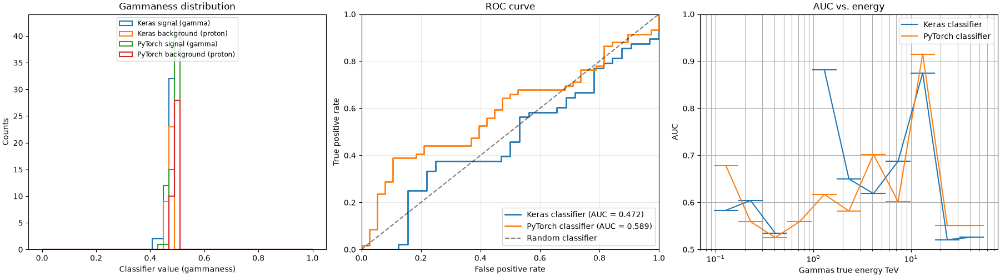
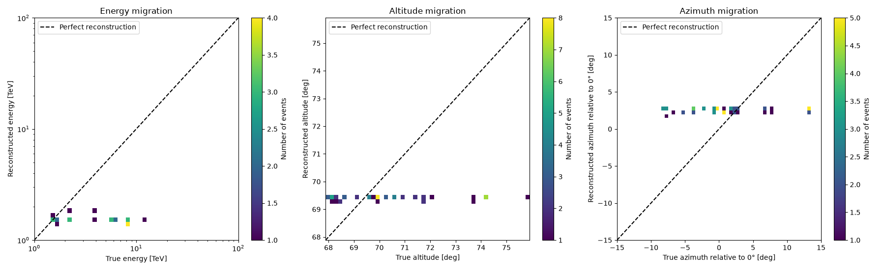
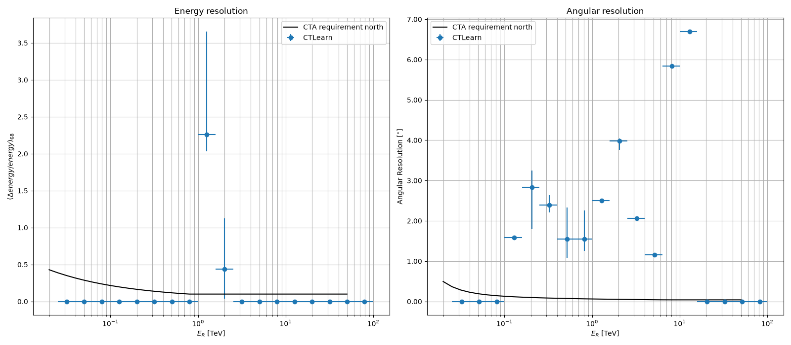

<!DOCTYPE html>


<html lang="en" data-content_root="../../" data-theme="dark">

  <head>
    <meta charset="utf-8" />
    <meta name="viewport" content="width=device-width, initial-scale=1.0" /><meta name="viewport" content="width=device-width, initial-scale=1" />

    <title>Tutorial 3 Perform inference with CTlearn models &#8212; ctlearn 0.11.1.dev68+g832995d76 documentation</title>
  
  
  
  <script data-cfasync="false">
    document.documentElement.dataset.mode = localStorage.getItem("mode") || "dark";
    document.documentElement.dataset.theme = localStorage.getItem("theme") || "dark";
  </script>
  <!--
    this give us a css class that will be invisible only if js is disabled
  -->
  <noscript>
    <style>
      .pst-js-only { display: none !important; }

    </style>
  </noscript>
  
  <!-- Loaded before other Sphinx assets -->
  <link href="../../_static/styles/theme.css?digest=75c7c72ae941e8b558d8" rel="stylesheet" />
<link href="../../_static/styles/pydata-sphinx-theme.css?digest=75c7c72ae941e8b558d8" rel="stylesheet" />

    <link rel="stylesheet" type="text/css" href="../../_static/pygments.css?v=8f2a1f02" />
    <link rel="stylesheet" type="text/css" href="../../_static/sg_gallery.css?v=c83e6b79" />
    <link rel="stylesheet" type="text/css" href="../../_static/sg_gallery-binder.css?v=f4aeca0c" />
    <link rel="stylesheet" type="text/css" href="../../_static/sg_gallery-dataframe.css?v=2082cf3c" />
    <link rel="stylesheet" type="text/css" href="../../_static/sg_gallery-rendered-html.css?v=1277b6f3" />
    <link rel="stylesheet" type="text/css" href="../../_static/sphinx-design.min.css?v=6a604523" />
  
  <!-- So that users can add custom icons -->
  <script defer src="../../_static/scripts/fontawesome.js?digest=75c7c72ae941e8b558d8"></script>
  <!-- Pre-loaded scripts that we'll load fully later -->
  <link rel="preload" as="script" href="../../_static/scripts/bootstrap.js?digest=75c7c72ae941e8b558d8" />
<link rel="preload" as="script" href="../../_static/scripts/pydata-sphinx-theme.js?digest=75c7c72ae941e8b558d8" />

    <script src="../../_static/documentation_options.js?v=2bf7d3c0"></script>
    <script src="../../_static/doctools.js?v=fd6eb6e6"></script>
    <script src="../../_static/sphinx_highlight.js?v=6ffebe34"></script>
    <script src="../../_static/sg-tags.js?v=d80f6fa4"></script>
    <script data-sd-tabs-storage-prefix="sphinx-design-tab-id-" src="../../_static/design-tabs.js?v=fcb327ea"></script>
    <script>DOCUMENTATION_OPTIONS.pagename = 'user-guide/auto_tutorials/predict_ctlearn_model';</script>
    <script>
        DOCUMENTATION_OPTIONS.theme_version = '0.24.0';
        DOCUMENTATION_OPTIONS.theme_switcher_json_url = 'https://ctlearn-project.github.io/ctlearn/_static/switcher.json';
        DOCUMENTATION_OPTIONS.theme_switcher_version_match = 'main';
        DOCUMENTATION_OPTIONS.show_version_warning_banner =
            false;
        </script>
    <script>DOCUMENTATION_OPTIONS.search_as_you_type = false;</script>
    <link rel="icon" href="../../_static/ctlearn_favicon.ico"/>
    <link rel="index" title="Index" href="../../genindex.html" />
    <link rel="search" title="Search" href="../../search.html" />
    <link rel="next" title="Supplementary scripts" href="../supplementary.html" />
    <link rel="prev" title="Tutorial 2 Train CTLearn models" href="train_ctlearn_model.html" />
  <meta name="viewport" content="width=device-width, initial-scale=1"/>
  <meta name="color-scheme" content="light dark"/>
  <meta name="docsearch:language" content="en"/>
  <meta name="docsearch:version" content="0.11.1.dev68+g832995d76" />
  
    
    <script src="../../_static/searchtools.js"></script>
    <script src="../../_static/language_data.js"></script>
    <script src="../../searchindex.js"></script>
  
  </head>
  <body data-default-mode="dark">
  
  
  <div id="pst-skip-link" class="skip-link d-print-none"><a href="#main-content">Skip to main content</a></div>

  
  <div id="pst-scroll-pixel-helper"></div>
  
  <button type="button" class="btn rounded-pill" id="pst-back-to-top">
    <i class="fa-solid fa-arrow-up"></i>Back to top</button>
  
  
  
  
  <dialog id="pst-search-dialog">
    
<form class="bd-search d-flex align-items-center"
      action="../../search.html"
      method="get">
  <i class="fa-solid fa-magnifying-glass"></i>
  <input type="search"
         class="form-control"
         name="q"
         placeholder="Search the docs ..."
         aria-label="Search the docs ..."
         autocomplete="off"
         autocorrect="off"
         autocapitalize="off"
         spellcheck="false"/>
  <span class="search-button__kbd-shortcut"><kbd class="kbd-shortcut__modifier">Ctrl</kbd>+<kbd>K</kbd></span>
</form>
  </dialog>

  <div class="pst-async-banner-revealer d-none">
  <aside id="bd-header-version-warning" class="d-none d-print-none" aria-label="Version warning"></aside>
</div>
<aside class="bd-header-announcement" aria-label="Announcement">
  <div class="bd-header-announcement__content">
        <p>This is not production-ready code yet. Although stable
        releases are available, users should expect changes to the code
        before a 1.0 release arrives.</p>
    </div>
</aside>

  
    <header id="pst-header" class="bd-header navbar navbar-expand-lg bd-navbar d-print-none">
<div class="bd-header__inner bd-page-width">
  <button type="button" class="pst-navbar-icon sidebar-toggle primary-toggle" aria-label="Site navigation" aria-expanded="false" aria-controls="pst-primary-sidebar-modal">
    <span class="fa-solid fa-bars"></span>
  </button>
  
  
  <div class="col-lg-3 navbar-header-items__start">
    
      <div class="navbar-item">

  
    
  

<a class="navbar-brand logo" href="../../index.html">
  
  
  
  
  
    
    
    
    
    
  
  
</a></div>
    
      <div class="navbar-item">
<div class="version-switcher__container dropdown pst-js-only">
  <button id="pst-version-switcher-button-2"
    type="button"
    class="version-switcher__button btn btn-sm dropdown-toggle"
    data-bs-toggle="dropdown"
    aria-haspopup="listbox"
    aria-controls="pst-version-switcher-list-2"
    aria-label="Version switcher list"
  >
    Choose version  <!-- this text may get changed later by javascript -->
    <span class="caret"></span>
  </button>
  <div id="pst-version-switcher-list-2"
    class="version-switcher__menu dropdown-menu list-group-flush py-0"
    role="listbox" aria-labelledby="pst-version-switcher-button-2">
    <!-- dropdown will be populated by javascript on page load -->
  </div>
</div></div>
    
  </div>
  
  <div class="col-lg-9 navbar-header-items">
    
    <div class="me-auto navbar-header-items__center">
      
        <div class="navbar-item">
<nav>
  <ul class="bd-navbar-elements navbar-nav">
    
<li class="nav-item current active">
  <a class="nav-link nav-internal" href="../index.html">
    User Guide
  </a>
</li>


<li class="nav-item ">
  <a class="nav-link nav-internal" href="../../developer-guide/index.html">
    Developer Guide
  </a>
</li>


<li class="nav-item ">
  <a class="nav-link nav-internal" href="../../api-reference/index.html">
    API Docs
  </a>
</li>


<li class="nav-item ">
  <a class="nav-link nav-internal" href="../../changelog.html">
    Change Log
  </a>
</li>

  </ul>
</nav></div>
      
    </div>
    
    
    <div class="navbar-header-items__end">
      
        <div class="navbar-item navbar-persistent--container">
          

<button type="button" class="btn search-button-field search-button__button pst-js-only" title="Search" aria-label="Search" data-bs-placement="bottom" data-bs-toggle="tooltip">
 <i class="fa-solid fa-magnifying-glass"></i>
 <span class="search-button__default-text">Search</span>
 <span class="search-button__kbd-shortcut"><kbd class="kbd-shortcut__modifier">Ctrl</kbd>+<kbd class="kbd-shortcut__modifier">K</kbd></span>
</button>
        </div>
      
      
        <div class="navbar-item">

<div class="theme-switch-container dropdown pst-js-only" data-bs-toggle="tooltip" data-bs-placement="bottom" title="Color mode">
  <button type="button" class="btn btn-sm nav-link pst-navbar-icon theme-switch-button dropdown-toggle" aria-label="Color mode" data-bs-toggle="dropdown">
    <i class="theme-switch fa-solid fa-sun fa-lg" data-mode="light" title="Light"></i>
    <i class="theme-switch fa-solid fa-moon fa-lg" data-mode="dark" title="Dark"></i>
    <i class="theme-switch fa-solid fa-circle-half-stroke fa-lg" data-mode="auto" title="System Settings"></i>
  </button>
  <ul class="dropdown-menu dropdown-menu-end">
    <li><button type="button" class="dropdown-item d-flex align-items-center theme-change-button" data-mode="auto"><i class="fa-solid fa-circle-half-stroke fa-lg me-1"></i>System Settings</button></li>
    <li><button type="button" class="dropdown-item d-flex align-items-center theme-change-button" data-mode="light"><i class="fa-solid fa-sun fa-lg me-1"></i>Light</button></li>
    <li><button type="button" class="dropdown-item d-flex align-items-center theme-change-button" data-mode="dark"><i class="fa-solid fa-moon fa-lg me-1"></i>Dark</button></li>
  </ul>
</div></div>
      
        <div class="navbar-item"><ul class="navbar-icon-links"
    aria-label="Quick Links">
        <li class="nav-item">
          
          
          
          
          
          
          
          
          <a href="https://github.com/ctlearn-project/ctlearn" title="GitHub" class="nav-link pst-navbar-icon" rel="noopener" target="_blank" data-bs-toggle="tooltip" data-bs-placement="bottom"><i class="fab fa-github fa-lg" aria-hidden="true"></i><span class="visually-hidden">GitHub</span></a>
        </li>
        <li class="nav-item">
          
          
          
          
          
          
          
          
          <a href="https://pypi.org/project/ctlearn/" title="PyPI" class="nav-link pst-navbar-icon" rel="noopener" target="_blank" data-bs-toggle="tooltip" data-bs-placement="bottom"><i class="fab fa-python fa-lg" aria-hidden="true"></i><span class="visually-hidden">PyPI</span></a>
        </li>
</ul></div>
      
    </div>
    
  </div>
  
  
    <div class="navbar-persistent--mobile">

<button type="button" class="btn search-button-field search-button__button pst-js-only" title="Search" aria-label="Search" data-bs-placement="bottom" data-bs-toggle="tooltip">
 <i class="fa-solid fa-magnifying-glass"></i>
 <span class="search-button__default-text">Search</span>
 <span class="search-button__kbd-shortcut"><kbd class="kbd-shortcut__modifier">Ctrl</kbd>+<kbd class="kbd-shortcut__modifier">K</kbd></span>
</button>
    </div>
  

  
    <button type="button" class="pst-navbar-icon sidebar-toggle secondary-toggle" aria-label="On this page" aria-expanded="false" aria-controls="pst-secondary-sidebar-modal">
      <span class="fa-solid fa-outdent"></span>
    </button>
  
</div>

    </header>
  

  <div class="bd-container">
    <div class="bd-container__inner bd-page-width">
      
      
      
      <dialog id="pst-primary-sidebar-modal" tabindex="-1"></dialog>
      <div id="pst-primary-sidebar" class="bd-sidebar-primary bd-sidebar">
        

  
  <div class="sidebar-header-items sidebar-primary__section">
    
    
      <div class="sidebar-header-items__center">
        
          
          
            <div class="navbar-item">
<nav>
  <ul class="bd-navbar-elements navbar-nav">
    
<li class="nav-item current active">
  <a class="nav-link nav-internal" href="../index.html">
    User Guide
  </a>
</li>


<li class="nav-item ">
  <a class="nav-link nav-internal" href="../../developer-guide/index.html">
    Developer Guide
  </a>
</li>


<li class="nav-item ">
  <a class="nav-link nav-internal" href="../../api-reference/index.html">
    API Docs
  </a>
</li>


<li class="nav-item ">
  <a class="nav-link nav-internal" href="../../changelog.html">
    Change Log
  </a>
</li>

  </ul>
</nav></div>
          
        
      </div>
    
    
    
      <div class="sidebar-header-items__end">
        
          <div class="navbar-item">

<div class="theme-switch-container dropdown pst-js-only" data-bs-toggle="tooltip" data-bs-placement="bottom" title="Color mode">
  <button type="button" class="btn btn-sm nav-link pst-navbar-icon theme-switch-button dropdown-toggle" aria-label="Color mode" data-bs-toggle="dropdown">
    <i class="theme-switch fa-solid fa-sun fa-lg" data-mode="light" title="Light"></i>
    <i class="theme-switch fa-solid fa-moon fa-lg" data-mode="dark" title="Dark"></i>
    <i class="theme-switch fa-solid fa-circle-half-stroke fa-lg" data-mode="auto" title="System Settings"></i>
  </button>
  <ul class="dropdown-menu dropdown-menu-end">
    <li><button type="button" class="dropdown-item d-flex align-items-center theme-change-button" data-mode="auto"><i class="fa-solid fa-circle-half-stroke fa-lg me-1"></i>System Settings</button></li>
    <li><button type="button" class="dropdown-item d-flex align-items-center theme-change-button" data-mode="light"><i class="fa-solid fa-sun fa-lg me-1"></i>Light</button></li>
    <li><button type="button" class="dropdown-item d-flex align-items-center theme-change-button" data-mode="dark"><i class="fa-solid fa-moon fa-lg me-1"></i>Dark</button></li>
  </ul>
</div></div>
        
          <div class="navbar-item"><ul class="navbar-icon-links"
    aria-label="Quick Links">
        <li class="nav-item">
          
          
          
          
          
          
          
          
          <a href="https://github.com/ctlearn-project/ctlearn" title="GitHub" class="nav-link pst-navbar-icon" rel="noopener" target="_blank" data-bs-toggle="tooltip" data-bs-placement="bottom"><i class="fab fa-github fa-lg" aria-hidden="true"></i><span class="visually-hidden">GitHub</span></a>
        </li>
        <li class="nav-item">
          
          
          
          
          
          
          
          
          <a href="https://pypi.org/project/ctlearn/" title="PyPI" class="nav-link pst-navbar-icon" rel="noopener" target="_blank" data-bs-toggle="tooltip" data-bs-placement="bottom"><i class="fab fa-python fa-lg" aria-hidden="true"></i><span class="visually-hidden">PyPI</span></a>
        </li>
</ul></div>
        
      </div>
    
  </div>
  
    <div class="sidebar-primary-items__start sidebar-primary__section">
        <div class="sidebar-primary-item pst-sidebar-collapse"><button type="button" id="pst-collapse-sidebar-button" aria-expanded="true" aria-controls="pst-primary-sidebar">
  <svg class="pst-icon" role="img" aria-hidden="true" focusable="false" viewBox="0 0 16 16" xmlns="http://www.w3.org/2000/svg">
    <path fill="currentColor" d="M3 15.5C2.36232 15.5 1.74874 15.2564 1.28478 14.8189C0.820828 14.3815 0.541576 13.7832 0.504167 13.1467L0.5 13L0.5 3C0.499965 2.36232 0.743605 1.74874 1.18107 1.28478C1.61854 0.820828 2.21676 0.541576 2.85333 0.504167L3 0.5L13 0.5C13.6377 0.499965 14.2513 0.743605 14.7152 1.18107C15.1792 1.61854 15.4584 2.21676 15.4958 2.85333L15.5 3L15.5 13C15.5 13.6377 15.2564 14.2513 14.8189 14.7152C14.3815 15.1792 13.7832 15.4584 13.1467 15.4958L13 15.5L3 15.5ZM3 13.8333L10.5 13.8333L10.5 2.16667L3 2.16667C2.79589 2.16669 2.59889 2.24163 2.44636 2.37726C2.29383 2.5129 2.19638 2.69979 2.1725 2.9025L2.16667 3L2.16667 13C2.16669 13.2041 2.24163 13.4011 2.37726 13.5536C2.5129 13.7062 2.69979 13.8036 2.9025 13.8275L3 13.8333ZM6.65583 10.325L6.5775 10.2558L4.91083 8.58917C4.76735 8.44567 4.68116 8.25476 4.66843 8.05223C4.65569 7.84971 4.71729 7.6495 4.84167 7.48917L4.91083 7.41083L6.5775 5.74417C6.72747 5.59471 6.9287 5.50794 7.14032 5.50148C7.35194 5.49502 7.55809 5.56935 7.7169 5.70937C7.8757 5.8494 7.97525 6.04463 7.99533 6.25539C8.01541 6.46616 7.95451 6.67667 7.825 6.84417L7.75583 6.9225L6.67917 8L7.75583 9.0775C7.89931 9.22099 7.98551 9.41191 7.99824 9.61443C8.01097 9.81695 7.94938 10.0172 7.825 10.1775L7.75583 10.2558C7.61234 10.3993 7.42142 10.4855 7.2189 10.4982C7.01638 10.511 6.81617 10.4494 6.65583 10.325Z"/>
  </svg>
  <span class="pst-collapse-sidebar-label">Collapse Sidebar</span>
  <span class="pst-expand-sidebar-label">Expand Sidebar</span>
</button></div>
        <div class="sidebar-primary-item">

<nav class="bd-docs-nav bd-links"
     aria-label="Section Navigation">
  <p class="bd-links__title" role="heading" aria-level="1">Section Navigation</p>
  <div class="bd-toc-item navbar-nav"><ul class="current nav bd-sidenav">
<li class="toctree-l1 current active has-children"><a class="reference internal" href="index.html">CTLearn tutorials</a><details open="open"><summary><span class="toctree-toggle" role="presentation"><i class="fa-solid fa-chevron-down"></i></span></summary><ul class="current">
<li class="toctree-l2"><a class="reference internal" href="explore_public_data.html"><strong>Tutorial 1</strong> Explore Public CTAO Data</a></li>


<li class="toctree-l2"><a class="reference internal" href="train_ctlearn_model.html"><strong>Tutorial 2</strong> Train CTLearn models</a></li>


<li class="toctree-l2 current active"><a aria-current="page" class="current reference internal" href="#"><strong>Tutorial 3</strong> Perform inference with CTlearn models</a></li>


</ul>
</details></li>
<li class="toctree-l1"><a class="reference internal" href="../supplementary.html">Supplementary scripts</a></li>
</ul>
</div>
</nav></div>
    </div>
  
  
  <div class="sidebar-primary-items__end sidebar-primary__section">
      <div class="sidebar-primary-item">
<div id="ethical-ad-placement"
      class="flat"
      data-ea-publisher="readthedocs"
      data-ea-type="readthedocs-sidebar"
      data-ea-manual="true">
</div></div>
  </div>


      </div>
      
      <main id="main-content" class="bd-main" role="main">
        
        
          <div class="bd-content">
            <div class="bd-article-container">
              
              <div class="bd-header-article d-print-none">
<div class="header-article-items header-article__inner">
  
    <div class="header-article-items__start">
      
        <div class="header-article-item">

<nav aria-label="Breadcrumb" class="d-print-none">
  <ul class="bd-breadcrumbs">
    
    <li class="breadcrumb-item breadcrumb-home">
      <a href="../../index.html" class="nav-link" aria-label="Home">
        <i class="fa-solid fa-house"></i>
      </a>
    </li>
    
    <li class="breadcrumb-item"><a href="../index.html" class="nav-link">User Guide</a></li>
    
    
    <li class="breadcrumb-item"><a href="index.html" class="nav-link">CTLearn tutorials</a></li>
    
    <li class="breadcrumb-item active" aria-current="page"><span class="ellipsis"><strong>Tutorial 3</strong> Perform inference with CTlearn models</span></li>
  </ul>
</nav>
</div>
      
    </div>
  
  
</div>
</div>
              
              
              
                
<div id="searchbox"></div>
                <article class="bd-article">
                  
  <div class="sphx-glr-download-link-note admonition note">
<p class="admonition-title">Note</p>
<p><a class="reference internal" href="#sphx-glr-download-user-guide-auto-tutorials-predict-ctlearn-model-py"><span class="std std-ref">Go to the end</span></a>
to download the full example code.</p>
</div>
<section class="sphx-glr-example-title" id="tutorial-3-perform-inference-with-ctlearn-models">
<span id="sphx-glr-user-guide-auto-tutorials-predict-ctlearn-model-py"></span><h1><strong>Tutorial 3</strong> Perform inference with CTlearn models<a class="headerlink" href="#tutorial-3-perform-inference-with-ctlearn-models" title="Link to this heading">#</a></h1>
<p>Predict the CTAO image and waveform data using the CTLearn models
from the second tutorial <code class="docutils literal notranslate"><span class="pre">train_ctlearn_model.py</span></code>. The predictions
are stored in DL2 files following the CTAO reference data model.
The tutorial also shows how to visualize the classifier performance,
energy resolution, and angular resolution of the predicted events.
The tutorial is intentionally kept simple and uses only a small fraction
of the available statistics to keep the prediction time manageable.
The resulting performance metrics are not representative of a production-level
analysis nor should they be compared directly with published results. The main
goal is to illustrate the analysis workflow and to become familiar with the
command-line tools and the DL2 data format. This tutorial can be modified from
the users to use larger datasets and more statistics to obtain meaningful results.</p>
<p>Each section explains a prediction task followed immediately by its literal
command-line example. Running this script executes every example in order.</p>
<section id="check-paths-environments-ctao-test-data-and-trained-models">
<h2>Check paths, environments, CTAO test data, and trained models<a class="headerlink" href="#check-paths-environments-ctao-test-data-and-trained-models" title="Link to this heading">#</a></h2>
<p>The executable tutorial uses the shared downloaded and processed data
from <code class="docutils literal notranslate"><span class="pre">explore_public_data.py</span></code> and the Keras and PyTorch models produced
by <code class="docutils literal notranslate"><span class="pre">train_ctlearn_model.py</span></code>. In a notebook, prefix the displayed
command-line examples with <code class="docutils literal notranslate"><span class="pre">!</span></code>.</p>
<div class="highlight-Python notranslate"><div class="highlight"><pre><span class="kn">import</span><span class="w"> </span><span class="nn">os</span><span class="w">
</span><span class="kn">import</span><span class="w"> </span><span class="nn">subprocess</span><span class="w">
</span><span class="kn">from</span><span class="w"> </span><span class="nn">pathlib</span><span class="w"> </span><span class="kn">import</span> <span class="n">Path</span><span class="w">
</span><span class="w">
</span><span class="kn">import</span><span class="w"> </span><span class="nn">astropy</span><span class="nn">.</span><span class="nn">units</span><span class="w"> </span><span class="k">as</span><span class="w"> </span><span class="nn">u</span><span class="w">
</span><span class="kn">import</span><span class="w"> </span><span class="nn">ctaplot</span><span class="w">
</span><span class="kn">import</span><span class="w"> </span><span class="nn">matplotlib</span><span class="nn">.</span><span class="nn">pyplot</span><span class="w"> </span><span class="k">as</span><span class="w"> </span><span class="nn">plt</span><span class="w">
</span><span class="kn">import</span><span class="w"> </span><span class="nn">numpy</span><span class="w"> </span><span class="k">as</span><span class="w"> </span><span class="nn">np</span><span class="w">
</span><span class="kn">from</span><span class="w"> </span><span class="nn">astropy</span><span class="nn">.</span><span class="nn">table</span><span class="w"> </span><span class="kn">import</span> <span class="n">Column</span><span class="p">,</span> <span class="n">Table</span><span class="w">
</span><span class="kn">from</span><span class="w"> </span><span class="nn">ctapipe</span><span class="w"> </span><span class="kn">import</span> <span class="n">__version__</span> <span class="k">as</span> <span class="n">ctapipe_version</span><span class="w">
</span><span class="kn">from</span><span class="w"> </span><span class="nn">ctapipe</span><span class="nn">.</span><span class="nn">io</span><span class="w"> </span><span class="kn">import</span> <span class="n">TableLoader</span><span class="p">,</span> <span class="n">write_table</span><span class="w">
</span><span class="kn">from</span><span class="w"> </span><span class="nn">sklearn</span><span class="nn">.</span><span class="nn">metrics</span><span class="w"> </span><span class="kn">import</span> <span class="n">auc</span><span class="p">,</span> <span class="n">roc_curve</span><span class="w">
</span><span class="w">
</span><span class="kn">from</span><span class="w"> </span><span class="nn">ctlearn</span><span class="nn">.</span><span class="nn">tools</span><span class="nn">.</span><span class="nn">utils</span><span class="w"> </span><span class="kn">import</span> <a class="sphx-glr-backref-module-ctlearn-tools-utils sphx-glr-backref-type-py-function reference internal" href="../../api-reference/ctlearn.html#ctlearn.tools.utils.get_lst1_subarray_description" title="ctlearn.tools.utils.get_lst1_subarray_description"><span class="n">get_lst1_subarray_description</span></a><span class="w">
</span><span class="w">
</span><span class="n">MAX_EVENTS</span> <span class="o">=</span> <span class="n">os</span><span class="o">.</span><span class="n">environ</span><span class="o">.</span><span class="n">get</span><span class="p">(</span><span class="s2">&quot;</span><span class="s2">CTLEARN_TUTORIAL_MAX_EVENTS</span><span class="s2">&quot;</span><span class="p">)</span><span class="w">
</span><span class="k">if</span> <span class="n">MAX_EVENTS</span> <span class="ow">is</span> <span class="ow">not</span> <span class="kc">None</span> <span class="ow">and</span> <span class="nb">int</span><span class="p">(</span><span class="n">MAX_EVENTS</span><span class="p">)</span> <span class="o">&lt;</span> <span class="mi">1</span><span class="p">:</span><span class="w">
</span>    <span class="k">raise</span> <span class="ne">ValueError</span><span class="p">(</span><span class="s2">&quot;</span><span class="s2">CTLEARN_TUTORIAL_MAX_EVENTS must be a positive integer</span><span class="s2">&quot;</span><span class="p">)</span><span class="w">
</span><span class="n">MAX_EVENTS_SUFFIX</span> <span class="o">=</span> <span class="sa">f</span><span class="s2">&quot;</span><span class="s2">-max</span><span class="si">{</span><span class="n">MAX_EVENTS</span><span class="si">}</span><span class="s2">&quot;</span> <span class="k">if</span> <span class="n">MAX_EVENTS</span> <span class="ow">is</span> <span class="ow">not</span> <span class="kc">None</span> <span class="k">else</span> <span class="s2">&quot;</span><span class="s2">&quot;</span><span class="w">
</span><span class="w">
</span><span class="n">DATA_DIR</span> <span class="o">=</span> <span class="p">(</span><span class="w">
</span>    <span class="n">Path</span><span class="p">(</span><span class="w">
</span>        <span class="n">os</span><span class="o">.</span><span class="n">environ</span><span class="o">.</span><span class="n">get</span><span class="p">(</span><span class="w">
</span>            <span class="s2">&quot;</span><span class="s2">CTLEARN_TUTORIAL_DATA_DIR</span><span class="s2">&quot;</span><span class="p">,</span><span class="w">
</span>            <span class="nb">str</span><span class="p">(</span><span class="n">Path</span><span class="o">.</span><span class="n">home</span><span class="p">(</span><span class="p">)</span> <span class="o">/</span> <span class="s2">&quot;</span><span class="s2">.cache</span><span class="s2">&quot;</span> <span class="o">/</span> <span class="s2">&quot;</span><span class="s2">ctlearn</span><span class="s2">&quot;</span> <span class="o">/</span> <span class="s2">&quot;</span><span class="s2">tutorial-data</span><span class="s2">&quot;</span><span class="p">)</span><span class="p">,</span><span class="w">
</span>        <span class="p">)</span><span class="w">
</span>    <span class="p">)</span><span class="w">
</span>    <span class="o">.</span><span class="n">expanduser</span><span class="p">(</span><span class="p">)</span><span class="w">
</span>    <span class="o">.</span><span class="n">resolve</span><span class="p">(</span><span class="p">)</span><span class="w">
</span><span class="p">)</span><span class="w">
</span><span class="n">CONVERTED_DIR</span> <span class="o">=</span> <span class="p">(</span><span class="w">
</span>    <span class="n">Path</span><span class="p">(</span><span class="w">
</span>        <span class="n">os</span><span class="o">.</span><span class="n">environ</span><span class="o">.</span><span class="n">get</span><span class="p">(</span><span class="w">
</span>            <span class="s2">&quot;</span><span class="s2">CTLEARN_TUTORIAL_CONVERTED_DIR</span><span class="s2">&quot;</span><span class="p">,</span><span class="w">
</span>            <span class="nb">str</span><span class="p">(</span><span class="n">DATA_DIR</span> <span class="o">/</span> <span class="sa">f</span><span class="s2">&quot;</span><span class="s2">ctapipe-</span><span class="si">{</span><span class="n">ctapipe_version</span><span class="si">}</span><span class="si">{</span><span class="n">MAX_EVENTS_SUFFIX</span><span class="si">}</span><span class="s2">&quot;</span><span class="p">)</span><span class="p">,</span><span class="w">
</span>        <span class="p">)</span><span class="w">
</span>    <span class="p">)</span><span class="w">
</span>    <span class="o">.</span><span class="n">expanduser</span><span class="p">(</span><span class="p">)</span><span class="w">
</span>    <span class="o">.</span><span class="n">resolve</span><span class="p">(</span><span class="p">)</span><span class="w">
</span><span class="p">)</span><span class="w">
</span><span class="n">OUTPUT_DIR</span> <span class="o">=</span> <span class="p">(</span><span class="w">
</span>    <span class="n">Path</span><span class="p">(</span><span class="w">
</span>        <span class="n">os</span><span class="o">.</span><span class="n">environ</span><span class="o">.</span><span class="n">get</span><span class="p">(</span><span class="w">
</span>            <span class="s2">&quot;</span><span class="s2">CTLEARN_TUTORIAL_OUTPUT_DIR</span><span class="s2">&quot;</span><span class="p">,</span><span class="w">
</span>            <span class="nb">str</span><span class="p">(</span><span class="n">Path</span><span class="o">.</span><span class="n">home</span><span class="p">(</span><span class="p">)</span> <span class="o">/</span> <span class="s2">&quot;</span><span class="s2">.cache</span><span class="s2">&quot;</span> <span class="o">/</span> <span class="s2">&quot;</span><span class="s2">ctlearn</span><span class="s2">&quot;</span> <span class="o">/</span> <span class="s2">&quot;</span><span class="s2">tutorial-training</span><span class="s2">&quot;</span><span class="p">)</span><span class="p">,</span><span class="w">
</span>        <span class="p">)</span><span class="w">
</span>    <span class="p">)</span><span class="w">
</span>    <span class="o">.</span><span class="n">expanduser</span><span class="p">(</span><span class="p">)</span><span class="w">
</span>    <span class="o">.</span><span class="n">resolve</span><span class="p">(</span><span class="p">)</span><span class="w">
</span><span class="p">)</span><span class="w">
</span><span class="n">PREDICTION_DIR</span> <span class="o">=</span> <span class="n">OUTPUT_DIR</span> <span class="o">/</span> <span class="s2">&quot;</span><span class="s2">predictions</span><span class="s2">&quot;</span><span class="w">
</span><span class="n">PREDICTION_DIR</span><span class="o">.</span><span class="n">mkdir</span><span class="p">(</span><span class="n">parents</span><span class="o">=</span><span class="kc">True</span><span class="p">,</span> <span class="n">exist_ok</span><span class="o">=</span><span class="kc">True</span><span class="p">)</span><span class="w">
</span><span class="w">
</span><span class="w">
</span><span class="k">def</span><span class="w"> </span><span class="nf">find_config_dir</span><span class="p">(</span><span class="p">)</span><span class="p">:</span><span class="w">
</span>    <span class="n">roots</span> <span class="o">=</span> <span class="p">[</span><span class="p">]</span><span class="w">
</span>    <span class="n">script_path</span> <span class="o">=</span> <span class="nb">globals</span><span class="p">(</span><span class="p">)</span><span class="o">.</span><span class="n">get</span><span class="p">(</span><span class="s2">&quot;</span><span class="s2">__file__</span><span class="s2">&quot;</span><span class="p">)</span><span class="w">
</span>    <span class="k">if</span> <span class="n">script_path</span> <span class="ow">is</span> <span class="ow">not</span> <span class="kc">None</span><span class="p">:</span><span class="w">
</span>        <span class="n">script_dir</span> <span class="o">=</span> <span class="n">Path</span><span class="p">(</span><span class="n">script_path</span><span class="p">)</span><span class="o">.</span><span class="n">resolve</span><span class="p">(</span><span class="p">)</span><span class="o">.</span><span class="n">parent</span><span class="w">
</span>        <span class="n">roots</span><span class="o">.</span><span class="n">extend</span><span class="p">(</span><span class="p">(</span><span class="n">script_dir</span><span class="p">,</span> <span class="o">*</span><span class="n">script_dir</span><span class="o">.</span><span class="n">parents</span><span class="p">)</span><span class="p">)</span><span class="w">
</span>    <span class="n">roots</span><span class="o">.</span><span class="n">extend</span><span class="p">(</span><span class="p">(</span><span class="n">Path</span><span class="o">.</span><span class="n">cwd</span><span class="p">(</span><span class="p">)</span><span class="p">,</span> <span class="o">*</span><span class="n">Path</span><span class="o">.</span><span class="n">cwd</span><span class="p">(</span><span class="p">)</span><span class="o">.</span><span class="n">parents</span><span class="p">)</span><span class="p">)</span><span class="w">
</span><span class="w">
</span>    <span class="k">for</span> <span class="n">root</span> <span class="ow">in</span> <span class="n">roots</span><span class="p">:</span><span class="w">
</span>        <span class="k">for</span> <span class="n">config_dir</span> <span class="ow">in</span> <span class="p">(</span><span class="n">root</span> <span class="o">/</span> <span class="s2">&quot;</span><span class="s2">config</span><span class="s2">&quot;</span><span class="p">,</span> <span class="n">root</span> <span class="o">/</span> <span class="s2">&quot;</span><span class="s2">docs</span><span class="s2">&quot;</span> <span class="o">/</span> <span class="s2">&quot;</span><span class="s2">source</span><span class="s2">&quot;</span> <span class="o">/</span> <span class="s2">&quot;</span><span class="s2">config</span><span class="s2">&quot;</span><span class="p">)</span><span class="p">:</span><span class="w">
</span>            <span class="k">if</span> <span class="p">(</span><span class="n">config_dir</span> <span class="o">/</span> <span class="s2">&quot;</span><span class="s2">dl1dh_example_config.json</span><span class="s2">&quot;</span><span class="p">)</span><span class="o">.</span><span class="n">is_file</span><span class="p">(</span><span class="p">)</span><span class="p">:</span><span class="w">
</span>                <span class="k">return</span> <span class="n">config_dir</span><span class="w">
</span><span class="w">
</span>    <span class="k">raise</span> <span class="ne">FileNotFoundError</span><span class="p">(</span><span class="w">
</span>        <span class="s2">&quot;</span><span class="s2">Could not locate tutorial configs in config/ or docs/source/config/. </span><span class="s2">&quot;</span><span class="w">
</span>        <span class="s2">&quot;</span><span class="s2">Extract the complete tutorial ZIP or run from the CTLearn repository.</span><span class="s2">&quot;</span><span class="w">
</span>    <span class="p">)</span><span class="w">
</span><span class="w">
</span><span class="w">
</span><span class="n">CONFIG_DIR</span> <span class="o">=</span> <span class="n">find_config_dir</span><span class="p">(</span><span class="p">)</span><span class="w">
</span><span class="n">DL1DH_CONFIG</span> <span class="o">=</span> <span class="n">CONFIG_DIR</span> <span class="o">/</span> <span class="s2">&quot;</span><span class="s2">dl1dh_example_config.json</span><span class="s2">&quot;</span><span class="w">
</span><span class="k">for</span> <span class="n">config_path</span> <span class="ow">in</span> <span class="p">(</span><span class="n">DL1DH_CONFIG</span><span class="p">,</span><span class="p">)</span><span class="p">:</span><span class="w">
</span>    <span class="k">if</span> <span class="ow">not</span> <span class="n">config_path</span><span class="o">.</span><span class="n">is_file</span><span class="p">(</span><span class="p">)</span><span class="p">:</span><span class="w">
</span>        <span class="k">raise</span> <span class="ne">FileNotFoundError</span><span class="p">(</span><span class="sa">f</span><span class="s2">&quot;</span><span class="s2">Tutorial configuration is missing: </span><span class="si">{</span><span class="n">config_path</span><span class="si">}</span><span class="s2">&quot;</span><span class="p">)</span><span class="w">
</span><span class="w">
</span><span class="n">GAMMA_FILE</span> <span class="o">=</span> <span class="n">CONVERTED_DIR</span> <span class="o">/</span> <span class="s2">&quot;</span><span class="s2">gamma-diffuse_with_images_01.dl2.h5</span><span class="s2">&quot;</span><span class="w">
</span><span class="n">PROTON_FILE</span> <span class="o">=</span> <span class="n">CONVERTED_DIR</span> <span class="o">/</span> <span class="s2">&quot;</span><span class="s2">proton_with_images_01.dl2.h5</span><span class="s2">&quot;</span><span class="w">
</span><span class="n">missing_files</span> <span class="o">=</span> <span class="p">[</span><span class="n">path</span> <span class="k">for</span> <span class="n">path</span> <span class="ow">in</span> <span class="p">(</span><span class="n">GAMMA_FILE</span><span class="p">,</span> <span class="n">PROTON_FILE</span><span class="p">)</span> <span class="k">if</span> <span class="ow">not</span> <span class="n">path</span><span class="o">.</span><span class="n">is_file</span><span class="p">(</span><span class="p">)</span><span class="p">]</span><span class="w">
</span><span class="k">if</span> <span class="n">missing_files</span><span class="p">:</span><span class="w">
</span>    <span class="n">missing</span> <span class="o">=</span> <span class="s2">&quot;</span><span class="se">\n</span><span class="s2">&quot;</span><span class="o">.</span><span class="n">join</span><span class="p">(</span><span class="sa">f</span><span class="s2">&quot;</span><span class="s2">  - </span><span class="si">{</span><span class="n">path</span><span class="si">}</span><span class="s2">&quot;</span> <span class="k">for</span> <span class="n">path</span> <span class="ow">in</span> <span class="n">missing_files</span><span class="p">)</span><span class="w">
</span>    <span class="k">raise</span> <span class="ne">FileNotFoundError</span><span class="p">(</span><span class="w">
</span>        <span class="s2">&quot;</span><span class="s2">Held-out tutorial data is missing. Run </span><span class="s2">&quot;</span><span class="w">
</span>        <span class="s2">&quot;</span><span class="s2">explore_public_data.py first. Missing files:</span><span class="se">\n</span><span class="s2">&quot;</span><span class="w">
</span>        <span class="sa">f</span><span class="s2">&quot;</span><span class="si">{</span><span class="n">missing</span><span class="si">}</span><span class="s2">&quot;</span><span class="w">
</span>    <span class="p">)</span><span class="w">
</span><span class="w">
</span><span class="n">os</span><span class="o">.</span><span class="n">environ</span><span class="p">[</span><span class="s2">&quot;</span><span class="s2">CTLEARN_TUTORIAL_DATA_DIR</span><span class="s2">&quot;</span><span class="p">]</span> <span class="o">=</span> <span class="nb">str</span><span class="p">(</span><span class="n">DATA_DIR</span><span class="p">)</span><span class="w">
</span><span class="n">os</span><span class="o">.</span><span class="n">environ</span><span class="p">[</span><span class="s2">&quot;</span><span class="s2">CTLEARN_TUTORIAL_CONVERTED_DIR</span><span class="s2">&quot;</span><span class="p">]</span> <span class="o">=</span> <span class="nb">str</span><span class="p">(</span><span class="n">CONVERTED_DIR</span><span class="p">)</span><span class="w">
</span><span class="n">os</span><span class="o">.</span><span class="n">environ</span><span class="p">[</span><span class="s2">&quot;</span><span class="s2">CTLEARN_TUTORIAL_OUTPUT_DIR</span><span class="s2">&quot;</span><span class="p">]</span> <span class="o">=</span> <span class="nb">str</span><span class="p">(</span><span class="n">OUTPUT_DIR</span><span class="p">)</span><span class="w">
</span><span class="n">os</span><span class="o">.</span><span class="n">environ</span><span class="p">[</span><span class="s2">&quot;</span><span class="s2">CTLEARN_TUTORIAL_CONFIG_DIR</span><span class="s2">&quot;</span><span class="p">]</span> <span class="o">=</span> <span class="nb">str</span><span class="p">(</span><span class="n">CONFIG_DIR</span><span class="o">.</span><span class="n">resolve</span><span class="p">(</span><span class="p">)</span><span class="p">)</span><span class="w">
</span><span class="n">os</span><span class="o">.</span><span class="n">environ</span><span class="p">[</span><span class="s2">&quot;</span><span class="s2">CTLEARN_TUTORIAL_MAX_EVENTS_SUFFIX</span><span class="s2">&quot;</span><span class="p">]</span> <span class="o">=</span> <span class="n">MAX_EVENTS_SUFFIX</span><span class="w">
</span><span class="w">
</span><span class="nb">print</span><span class="p">(</span><span class="sa">f</span><span class="s2">&quot;</span><span class="s2">Converted held-out data: </span><span class="si">{</span><span class="n">CONVERTED_DIR</span><span class="si">}</span><span class="s2">&quot;</span><span class="p">)</span><span class="w">
</span><span class="nb">print</span><span class="p">(</span><span class="sa">f</span><span class="s2">&quot;</span><span class="s2">Trained model outputs: </span><span class="si">{</span><span class="n">OUTPUT_DIR</span><span class="si">}</span><span class="s2">&quot;</span><span class="p">)</span><span class="w">
</span><span class="nb">print</span><span class="p">(</span><span class="sa">f</span><span class="s2">&quot;</span><span class="s2">Prediction outputs: </span><span class="si">{</span><span class="n">PREDICTION_DIR</span><span class="si">}</span><span class="s2">&quot;</span><span class="p">)</span><span class="w">
</span><span class="nb">print</span><span class="p">(</span><span class="sa">f</span><span class="s2">&quot;</span><span class="s2">Reader configuration: </span><span class="si">{</span><span class="n">DL1DH_CONFIG</span><span class="si">}</span><span class="s2">&quot;</span><span class="p">)</span><span class="w">
</span><span class="w">
</span><span class="w">
</span><span class="k">def</span><span class="w"> </span><span class="nf">run_command_line</span><span class="p">(</span><span class="n">command</span><span class="p">)</span><span class="p">:</span><span class="w">
</span>    <span class="nb">print</span><span class="p">(</span><span class="sa">f</span><span class="s2">&quot;</span><span class="s2">Running command: $ </span><span class="si">{</span><span class="n">command</span><span class="o">.</span><span class="n">strip</span><span class="p">(</span><span class="p">)</span><span class="si">}</span><span class="s2">&quot;</span><span class="p">)</span><span class="w">
</span>    <span class="n">result</span> <span class="o">=</span> <span class="n">subprocess</span><span class="o">.</span><span class="n">run</span><span class="p">(</span><span class="w">
</span>        <span class="n">command</span><span class="p">,</span><span class="w">
</span>        <span class="n">shell</span><span class="o">=</span><span class="kc">True</span><span class="p">,</span><span class="w">
</span>        <span class="n">stdout</span><span class="o">=</span><span class="n">subprocess</span><span class="o">.</span><span class="n">PIPE</span><span class="p">,</span><span class="w">
</span>        <span class="n">stderr</span><span class="o">=</span><span class="n">subprocess</span><span class="o">.</span><span class="n">STDOUT</span><span class="p">,</span><span class="w">
</span>        <span class="n">text</span><span class="o">=</span><span class="kc">True</span><span class="p">,</span><span class="w">
</span>    <span class="p">)</span><span class="w">
</span>    <span class="nb">print</span><span class="p">(</span><span class="n">result</span><span class="o">.</span><span class="n">stdout</span><span class="p">,</span> <span class="n">end</span><span class="o">=</span><span class="s2">&quot;</span><span class="s2">&quot;</span><span class="p">)</span><span class="w">
</span>    <span class="n">result</span><span class="o">.</span><span class="n">check_returncode</span><span class="p">(</span><span class="p">)</span><span class="w">
</span></pre></div></div>
<div class="sphx-glr-script-out highlight-none notranslate"><div class="highlight"><pre><span></span>Converted held-out data: /home/runner/.cache/ctlearn/tutorial-data/ctapipe-0.33.0-max500
Trained model outputs: /home/runner/.cache/ctlearn/tutorial-training
Prediction outputs: /home/runner/.cache/ctlearn/tutorial-training/predictions
Reader configuration: /home/runner/work/ctlearn/ctlearn/docs/source/config/dl1dh_example_config.json
</pre></div>
</div>
</section>
<section id="explore-the-ctlearn-prediction-tools">
<h2>Explore the CTLearn prediction tools<a class="headerlink" href="#explore-the-ctlearn-prediction-tools" title="Link to this heading">#</a></h2>
<p>Installing CTLearn provides several command-line tools for running and
managing different parts of the workflow. For model inference, we use the
<code class="docutils literal notranslate"><span class="pre">ctlearn-predict-{mono,stereo}-model</span></code> command. The <code class="docutils literal notranslate"><span class="pre">-h</span></code> option displays a
short version of the help message, showing the main command-line options and
their usage. For a complete description of all available options, including
the configuration parameters of the different components, use <code class="docutils literal notranslate"><span class="pre">--help-all</span></code>.
Although the command is executed from this Jupyter notebook for convenience
and documentation, <code class="docutils literal notranslate"><span class="pre">ctlearn-predict-{mono,stereo}-model</span></code> is a
command-line tool. In a typical workflow, the prediction command would be
executed directly from a terminal or submitted as part of a cluster job,
for example through sbatch on an HPC system.</p>
<div class="highlight-Python notranslate"><div class="highlight"><pre><span class="n">run_command_line</span><span class="p">(</span><span class="s2">&quot;</span><span class="s2">ctlearn-predict-mono-model -h</span><span class="s2">&quot;</span><span class="p">)</span><span class="w">
</span><span class="n">run_command_line</span><span class="p">(</span><span class="s2">&quot;</span><span class="s2">ctlearn-predict-stereo-model -h</span><span class="s2">&quot;</span><span class="p">)</span><span class="w">
</span></pre></div></div>
<div class="sphx-glr-script-out highlight-none notranslate"><div class="highlight"><pre><span></span>Running command: $ ctlearn-predict-mono-model -h
WARNING: All log messages before absl::InitializeLog() is called are written to STDERR
I0000 00:00:1794999735.049722    6276 port.cc:153] oneDNN custom operations are on. You may see slightly different numerical results due to floating-point round-off errors from different computation orders. To turn them off, set the environment variable `TF_ENABLE_ONEDNN_OPTS=0`.
I0000 00:00:1794999735.087356    6276 cpu_feature_guard.cc:227] This TensorFlow binary is optimized to use available CPU instructions in performance-critical operations.
To enable the following instructions: AVX2 AVX512F AVX512_VNNI AVX512_BF16 AVX512_FP16 AVX_VNNI AMX_TILE AMX_INT8 AMX_BF16 AMX_FP16 FMA, in other operations, rebuild TensorFlow with the appropriate compiler flags.
WARNING: All log messages before absl::InitializeLog() is called are written to STDERR
I0000 00:00:1794999735.945917    6276 port.cc:153] oneDNN custom operations are on. You may see slightly different numerical results due to floating-point round-off errors from different computation orders. To turn them off, set the environment variable `TF_ENABLE_ONEDNN_OPTS=0`.
Tool to predict the gammaness, energy and arrival direction from monoscopic
R1/DL1 data using CTLearn models.

This tool extends the ``PredictCTLearnModel`` to specifically handle monoscopic
R1/DL1 data. The prediction is performed using the CTLearn models. The data is
stored in the output file following the ctapipe DL2 data format. It also stores
the telescope pointing monitoring and DL1 feature vectors (if selected) in the
output file. By default, waveforms and images are not copied to the DL2 output
file unless explicitly enabled in the configuration.

Attributes
----------
name : str
    Name of the tool.
description : str
    Description of the tool.
examples : str
    Examples of how to use the tool.

Methods
-------
start()
    Start the tool.
_store_mc_telescope_pointing(all_identifiers)
    Store the telescope pointing table for the mono mode for MC simulation.

Options
=======
The options below are convenience aliases to configurable class-options,
as listed in the "Equivalent to" description-line of the aliases.
To see all configurable class-options for some &lt;cmd&gt;, use:
    &lt;cmd&gt; --help-all

--debug
    Set log-level to debug, for the most verbose logging.
    Equivalent to: [--Application.log_level=10]
--show-config
    Show the application's configuration (human-readable format)
    Equivalent to: [--Application.show_config=True]
--show-config-json
    Show the application's configuration (json format)
    Equivalent to: [--Application.show_config_json=True]
-q, --quiet
    Disable console logging.
    Equivalent to: [--Tool.quiet=True]
-v, --verbose
    Set log level to DEBUG
    Equivalent to: [--Tool.log_level=DEBUG]
--overwrite
    Overwrite the output file if it exists
    Equivalent to: [--HDF5Merger.overwrite=True]
--no-overwrite
    Do not overwrite the output file if it exists
    Equivalent to: [--HDF5Merger.overwrite=False]
--dl1-features
    Include dl1 features
    Equivalent to: [--PredictCTLearnModel.dl1_features=True]
--no-dl1-features
    Exclude dl1 features
    Equivalent to: [--PredictCTLearnModel.dl1_features=False]
--dl2-telescope
    Include dl2 telescope-event-wise data in the output file
    Equivalent to: [--PredictCTLearnModel.dl2_telescope=True]
--no-dl2-telescope
    Exclude dl2 telescope-event-wise data in the output file
    Equivalent to: [--PredictCTLearnModel.dl2_telescope=False]
--dl2-subarray
    Include dl2 subarray-event-wise data in the output file
    Equivalent to: [--PredictCTLearnModel.dl2_subarray=True]
--no-dl2-subarray
    Exclude dl2 subarray-event-wise data in the output file
    Equivalent to: [--PredictCTLearnModel.dl2_subarray=False]
--r0-waveforms
    Include r0 waveforms
    Equivalent to: [--HDF5Merger.r0_waveforms=True]
--no-r0-waveforms
    Exclude r0 waveforms
    Equivalent to: [--HDF5Merger.r0_waveforms=False]
--r1-waveforms
    Include r1 waveforms
    Equivalent to: [--HDF5Merger.r1_waveforms=True]
--no-r1-waveforms
    Exclude r1 waveforms
    Equivalent to: [--HDF5Merger.r1_waveforms=False]
--dl1-parameters
    Include dl1 parameters
    Equivalent to: [--HDF5Merger.dl1_parameters=True]
--no-dl1-parameters
    Exclude dl1 parameters
    Equivalent to: [--HDF5Merger.dl1_parameters=False]
--dl1-images
    Include dl1 images
    Equivalent to: [--HDF5Merger.dl1_images=True]
--no-dl1-images
    Exclude dl1 images
    Equivalent to: [--HDF5Merger.dl1_images=False]
--true-parameters
    Include true parameters
    Equivalent to: [--HDF5Merger.true_parameters=True]
--no-true-parameters
    Exclude true parameters
    Equivalent to: [--HDF5Merger.true_parameters=False]
--true-images
    Include true images
    Equivalent to: [--HDF5Merger.true_images=True]
--no-true-images
    Exclude true images
    Equivalent to: [--HDF5Merger.true_images=False]
-c, --config=&lt;list-item-1&gt;...
    List of configuration files with parameters to load in addition to command-
    line parameters. The order listed is the order of precedence (later config
    parameters overwrite earlier ones), however parameters specified on the
    command line always have the highest precedence. Config files may be in
    JSON, YAML, TOML, or Python format
    Default: []
    Equivalent to: [--Tool.config_files]
--log-level=&lt;Enum&gt;
    Set the log level by value or name.
    Choices: any of [0, 10, 20, 30, 40, 50, 'DEBUG', 'INFO', 'WARN', 'ERROR', 'CRITICAL']
    Default: 30
    Equivalent to: [--Tool.log_level]
-l, --log-file=&lt;Path&gt;
    Filename for the log
    Default: None
    Equivalent to: [--Tool.log_file]
--log-file-level=&lt;Enum&gt;
    Logging Level for File Logging
    Choices: any of [0, 10, 20, 30, 40, 50, 'DEBUG', 'INFO', 'WARN', 'ERROR', 'CRITICAL']
    Default: 'INFO'
    Equivalent to: [--Tool.log_file_level]
--provenance-log=&lt;Path&gt;
    Default: None
    Equivalent to: [--Tool.provenance_log]
-i, --input_url=&lt;Path&gt;
    Input ctapipe HDF5 files including pixel-wise image or waveform data
    Default: None
    Equivalent to: [--PredictCTLearnModel.input_url]
-t, --type_model=&lt;Path&gt;
    Path to a Keras or PyTorch model file for the classification of the primary
    particle type. Requires Keras/PyTorch consistency with other model paths.
    Default: None
    Equivalent to: [--PredictCTLearnModel.load_type_model_from]
-e, --energy_model=&lt;Path&gt;
    Path to a Keras or PyTorch model file for the regression of the primary
    particle energy. Requires Keras/PyTorch consistency with other model paths.
    Default: None
    Equivalent to: [--PredictCTLearnModel.load_energy_model_from]
-d, --cameradirection_model=&lt;Path&gt;
    Path to a Keras or PyTorch model file for the reconstruction of the primary
    particle arrival direction based on camera coordinate offsets. Requires
    Keras/PyTorch consistency with other model paths.
    Default: None
    Equivalent to: [--PredictCTLearnModel.load_cameradirection_model_from]
-s, --skydirection_model=&lt;Path&gt;
    Path to a Keras or PyTorch model file for the reconstruction of the primary
    particle arrival direction based on spherical coordinate offsets. Requires
    Keras/PyTorch consistency with other model paths.
    Default: None
    Equivalent to: [--PredictCTLearnModel.load_skydirection_model_from]
-o, --output=&lt;Path&gt;
    Output path to save the dl2 prediction results
    Default: './output.dl2.h5'
    Equivalent to: [--PredictCTLearnModel.output_path]

Examples
--------

    To predict from pixel-wise image data in mono mode using trained CTLearn models:
        &gt; ctlearn-predict-mono-model         --input_url input.dl1.h5         --PredictCTLearnModel.batch_size=64         --PredictCTLearnModel.dl1dh_reader_type=DLImageReader         --DLImageReader.channels=cleaned_image         --DLImageReader.channels=cleaned_relative_peak_time         --DLImageReader.image_mapper_type=BilinearMapper         --type_model="/path/to/your/mono/type/ctlearn_model(.keras/.pth)"         --energy_model="/path/to/your/mono/energy/ctlearn_model(.keras/.pth)"         --cameradirection_model="/path/to/your/mono/cameradirection/ctlearn_model(.keras/.pth)"         --dl1-features         --no-dl1-images         --no-true-images         --output output.dl2.h5
        To predict from pixel-wise waveform data in mono mode using trained CTLearn models:
        &gt; ctlearn-predict-mono-model         --input_url input.r1.h5         --PredictCTLearnModel.dl1dh_reader_type=DLWaveformReader         --DLWaveformReader.sequnce_length=20         --DLWaveformReader.image_mapper_type=BilinearMapper         --type_model="/path/to/your/mono_waveform/type/ctlearn_model(.keras/.pth)"         --energy_model="/path/to/your/mono_waveform/energy/ctlearn_model(.keras/.pth)"         --cameradirection_model="/path/to/your/mono_waveform/cameradirection/ctlearn_model(.keras/.pth)"         --no-r0-waveforms         --no-r1-waveforms         --no-dl1-images         --no-true-images         --output output.dl2.h5

To see all available configurables, use `--help-all`.

Running command: $ ctlearn-predict-stereo-model -h
WARNING: All log messages before absl::InitializeLog() is called are written to STDERR
I0000 00:00:1794999740.738063    6291 port.cc:153] oneDNN custom operations are on. You may see slightly different numerical results due to floating-point round-off errors from different computation orders. To turn them off, set the environment variable `TF_ENABLE_ONEDNN_OPTS=0`.
I0000 00:00:1794999740.776089    6291 cpu_feature_guard.cc:227] This TensorFlow binary is optimized to use available CPU instructions in performance-critical operations.
To enable the following instructions: AVX2 AVX512F AVX512_VNNI AVX512_BF16 AVX512_FP16 AVX_VNNI AMX_TILE AMX_INT8 AMX_BF16 AMX_FP16 FMA, in other operations, rebuild TensorFlow with the appropriate compiler flags.
WARNING: All log messages before absl::InitializeLog() is called are written to STDERR
I0000 00:00:1794999741.623940    6291 port.cc:153] oneDNN custom operations are on. You may see slightly different numerical results due to floating-point round-off errors from different computation orders. To turn them off, set the environment variable `TF_ENABLE_ONEDNN_OPTS=0`.
Tool to predict the gammaness, energy and arrival direction from R1/DL1
stereoscopic data using CTLearn models.

This tool extends the ``PredictCTLearnModel`` to specifically handle
stereoscopic R1/DL1 data. The prediction is performed using the CTLearn models.
The data is stored in the output file following the ctapipe DL2 data format. It
also stores the telescope/subarray pointing monitoring and DL1 feature vectors
(if selected) in the output file. By default, waveforms and images are not
copied to the DL2 output file unless explicitly enabled in the configuration.

Attributes
----------
name : str
    Name of the tool.
description : str
    Description of the tool.
examples : str
    Examples of how to use the tool.

Methods
-------
start()
    Start the tool.
_store_mc_subarray_pointing(all_identifiers)
    Store the subarray pointing table for the stereo mode for MC simulation.

Options
=======
The options below are convenience aliases to configurable class-options,
as listed in the "Equivalent to" description-line of the aliases.
To see all configurable class-options for some &lt;cmd&gt;, use:
    &lt;cmd&gt; --help-all

--debug
    Set log-level to debug, for the most verbose logging.
    Equivalent to: [--Application.log_level=10]
--show-config
    Show the application's configuration (human-readable format)
    Equivalent to: [--Application.show_config=True]
--show-config-json
    Show the application's configuration (json format)
    Equivalent to: [--Application.show_config_json=True]
-q, --quiet
    Disable console logging.
    Equivalent to: [--Tool.quiet=True]
-v, --verbose
    Set log level to DEBUG
    Equivalent to: [--Tool.log_level=DEBUG]
--overwrite
    Overwrite the output file if it exists
    Equivalent to: [--HDF5Merger.overwrite=True]
--no-overwrite
    Do not overwrite the output file if it exists
    Equivalent to: [--HDF5Merger.overwrite=False]
--dl1-features
    Include dl1 features
    Equivalent to: [--PredictCTLearnModel.dl1_features=True]
--no-dl1-features
    Exclude dl1 features
    Equivalent to: [--PredictCTLearnModel.dl1_features=False]
--dl2-telescope
    Include dl2 telescope-event-wise data in the output file
    Equivalent to: [--PredictCTLearnModel.dl2_telescope=True]
--no-dl2-telescope
    Exclude dl2 telescope-event-wise data in the output file
    Equivalent to: [--PredictCTLearnModel.dl2_telescope=False]
--dl2-subarray
    Include dl2 subarray-event-wise data in the output file
    Equivalent to: [--PredictCTLearnModel.dl2_subarray=True]
--no-dl2-subarray
    Exclude dl2 subarray-event-wise data in the output file
    Equivalent to: [--PredictCTLearnModel.dl2_subarray=False]
--r0-waveforms
    Include r0 waveforms
    Equivalent to: [--HDF5Merger.r0_waveforms=True]
--no-r0-waveforms
    Exclude r0 waveforms
    Equivalent to: [--HDF5Merger.r0_waveforms=False]
--r1-waveforms
    Include r1 waveforms
    Equivalent to: [--HDF5Merger.r1_waveforms=True]
--no-r1-waveforms
    Exclude r1 waveforms
    Equivalent to: [--HDF5Merger.r1_waveforms=False]
--dl1-parameters
    Include dl1 parameters
    Equivalent to: [--HDF5Merger.dl1_parameters=True]
--no-dl1-parameters
    Exclude dl1 parameters
    Equivalent to: [--HDF5Merger.dl1_parameters=False]
--dl1-images
    Include dl1 images
    Equivalent to: [--HDF5Merger.dl1_images=True]
--no-dl1-images
    Exclude dl1 images
    Equivalent to: [--HDF5Merger.dl1_images=False]
--true-parameters
    Include true parameters
    Equivalent to: [--HDF5Merger.true_parameters=True]
--no-true-parameters
    Exclude true parameters
    Equivalent to: [--HDF5Merger.true_parameters=False]
--true-images
    Include true images
    Equivalent to: [--HDF5Merger.true_images=True]
--no-true-images
    Exclude true images
    Equivalent to: [--HDF5Merger.true_images=False]
-c, --config=&lt;list-item-1&gt;...
    List of configuration files with parameters to load in addition to command-
    line parameters. The order listed is the order of precedence (later config
    parameters overwrite earlier ones), however parameters specified on the
    command line always have the highest precedence. Config files may be in
    JSON, YAML, TOML, or Python format
    Default: []
    Equivalent to: [--Tool.config_files]
--log-level=&lt;Enum&gt;
    Set the log level by value or name.
    Choices: any of [0, 10, 20, 30, 40, 50, 'DEBUG', 'INFO', 'WARN', 'ERROR', 'CRITICAL']
    Default: 30
    Equivalent to: [--Tool.log_level]
-l, --log-file=&lt;Path&gt;
    Filename for the log
    Default: None
    Equivalent to: [--Tool.log_file]
--log-file-level=&lt;Enum&gt;
    Logging Level for File Logging
    Choices: any of [0, 10, 20, 30, 40, 50, 'DEBUG', 'INFO', 'WARN', 'ERROR', 'CRITICAL']
    Default: 'INFO'
    Equivalent to: [--Tool.log_file_level]
--provenance-log=&lt;Path&gt;
    Default: None
    Equivalent to: [--Tool.provenance_log]
-i, --input_url=&lt;Path&gt;
    Input ctapipe HDF5 files including pixel-wise image or waveform data
    Default: None
    Equivalent to: [--PredictCTLearnModel.input_url]
-t, --type_model=&lt;Path&gt;
    Path to a Keras or PyTorch model file for the classification of the primary
    particle type. Requires Keras/PyTorch consistency with other model paths.
    Default: None
    Equivalent to: [--PredictCTLearnModel.load_type_model_from]
-e, --energy_model=&lt;Path&gt;
    Path to a Keras or PyTorch model file for the regression of the primary
    particle energy. Requires Keras/PyTorch consistency with other model paths.
    Default: None
    Equivalent to: [--PredictCTLearnModel.load_energy_model_from]
-d, --cameradirection_model=&lt;Path&gt;
    Path to a Keras or PyTorch model file for the reconstruction of the primary
    particle arrival direction based on camera coordinate offsets. Requires
    Keras/PyTorch consistency with other model paths.
    Default: None
    Equivalent to: [--PredictCTLearnModel.load_cameradirection_model_from]
-s, --skydirection_model=&lt;Path&gt;
    Path to a Keras or PyTorch model file for the reconstruction of the primary
    particle arrival direction based on spherical coordinate offsets. Requires
    Keras/PyTorch consistency with other model paths.
    Default: None
    Equivalent to: [--PredictCTLearnModel.load_skydirection_model_from]
-o, --output=&lt;Path&gt;
    Output path to save the dl2 prediction results
    Default: './output.dl2.h5'
    Equivalent to: [--PredictCTLearnModel.output_path]

Examples
--------

    To predict from pixel-wise image data in stereo mode using trained CTLearn models:
        &gt; ctlearn-predict-stereo-model         --input_url input.dl1.h5         --PredictCTLearnModel.batch_size=16         --PredictCTLearnModel.dl1dh_reader_type=DLImageReader         --DLImageReader.channels=cleaned_image         --DLImageReader.channels=cleaned_relative_peak_time         --DLImageReader.image_mapper_type=BilinearMapper         --DLImageReader.mode=stereo         --DLImageReader.min_telescopes=2         --PredictCTLearnModel.stack_telescope_images=True         --type_model="/path/to/your/stereo/type/ctlearn_model(.keras/.pth)"         --energy_model="/path/to/your/stereo/energy/ctlearn_model(.keras/.pth)"         --skydirection_model="/path/to/your/stereo/skydirection/ctlearn_model(.keras/.pth)"         --output output.dl2.h5

To see all available configurables, use `--help-all`.
</pre></div>
</div>
</section>
</section>
<section id="part-a3-monoscopic-cnn-based-model-inference">
<h1><em>Part A3</em> Monoscopic CNN-based model inference<a class="headerlink" href="#part-a3-monoscopic-cnn-based-model-inference" title="Link to this heading">#</a></h1>
<p>We perform inference using the three previously trained CTLearn models from
<code class="docutils literal notranslate"><span class="pre">train_ctlearn_model.py</span></code>: the primary particle type (classification),
primary particle energy (regression), and arrival direction (regression)
models. The models are applied to both gamma-ray (signal) and proton
(background) input data. The three inference tasks are executed sequentially
within a single tool invocation. The prediction tool provides several
options for selecting which data levels from the input file are copied to
the output file. By default, the goal is to progress to the next data level
while keeping the output file as compact as possible. However, retaining
additional data levels can be useful for debugging and for inspecting
individual events in more detail. The resulting file contains the model
predictions together with the selected input data levels and follows the
CTAO reference data model.</p>
<p><strong>Important</strong>: The same configuration settings used during training should
be used for inference whenever applicable. In particular, the data
preprocessing and data reader configuration must be consistent with those
used to train the models. The <code class="docutils literal notranslate"><span class="pre">01</span></code> files are used here as held-out input
data, and the paths to each model are shown directly in the commands.</p>
<section id="keras-monoscopic-model-prediction">
<h2>1. Keras monoscopic model prediction<a class="headerlink" href="#keras-monoscopic-model-prediction" title="Link to this heading">#</a></h2>
<div class="highlight-Python notranslate"><div class="highlight"><pre><span class="n">run_command_line</span><span class="p">(</span><span class="w">
</span><span class="w">    </span><span class="sd">&quot;&quot;&quot;ctlearn-predict-mono-model --verbose \\
        --input_url &quot;$CTLEARN_TUTORIAL_CONVERTED_DIR/gamma-diffuse_with_images_01.dl2.h5&quot; \\
        --output &quot;$CTLEARN_TUTORIAL_OUTPUT_DIR/predictions/gamma-diffuse_with_images_01.ctlearn.dl2.h5&quot; \\
        --config &quot;$CTLEARN_TUTORIAL_CONFIG_DIR/dl1dh_example_config.json&quot; \\
        --type_model &quot;$CTLEARN_TUTORIAL_OUTPUT_DIR/keras-classification/ctlearn_model.keras&quot; \\
        --energy_model &quot;$CTLEARN_TUTORIAL_OUTPUT_DIR/keras-energy/ctlearn_model.keras&quot; \\
        --cameradirection_model &quot;$CTLEARN_TUTORIAL_OUTPUT_DIR/keras-cameradirection/ctlearn_model.keras&quot; \\
        --PredictCTLearnModel.batch_size 16 \\
        --overwrite&quot;&quot;&quot;</span><span class="w">
</span><span class="p">)</span><span class="w">
</span><span class="n">run_command_line</span><span class="p">(</span><span class="w">
</span><span class="w">    </span><span class="sd">&quot;&quot;&quot;ctlearn-predict-mono-model --verbose \\
        --input_url &quot;$CTLEARN_TUTORIAL_CONVERTED_DIR/proton_with_images_01.dl2.h5&quot; \\
        --output &quot;$CTLEARN_TUTORIAL_OUTPUT_DIR/predictions/proton_with_images_01.ctlearn.dl2.h5&quot; \\
        --config &quot;$CTLEARN_TUTORIAL_CONFIG_DIR/dl1dh_example_config.json&quot; \\
        --type_model &quot;$CTLEARN_TUTORIAL_OUTPUT_DIR/keras-classification/ctlearn_model.keras&quot; \\
        --energy_model &quot;$CTLEARN_TUTORIAL_OUTPUT_DIR/keras-energy/ctlearn_model.keras&quot; \\
        --cameradirection_model &quot;$CTLEARN_TUTORIAL_OUTPUT_DIR/keras-cameradirection/ctlearn_model.keras&quot; \\
        --PredictCTLearnModel.batch_size 16 \\
        --overwrite&quot;&quot;&quot;</span><span class="w">
</span><span class="p">)</span><span class="w">
</span></pre></div></div>
<div class="sphx-glr-script-out highlight-none notranslate"><div class="highlight"><pre><span></span>Running command: $ ctlearn-predict-mono-model --verbose \
        --input_url "$CTLEARN_TUTORIAL_CONVERTED_DIR/gamma-diffuse_with_images_01.dl2.h5" \
        --output "$CTLEARN_TUTORIAL_OUTPUT_DIR/predictions/gamma-diffuse_with_images_01.ctlearn.dl2.h5" \
        --config "$CTLEARN_TUTORIAL_CONFIG_DIR/dl1dh_example_config.json" \
        --type_model "$CTLEARN_TUTORIAL_OUTPUT_DIR/keras-classification/ctlearn_model.keras" \
        --energy_model "$CTLEARN_TUTORIAL_OUTPUT_DIR/keras-energy/ctlearn_model.keras" \
        --cameradirection_model "$CTLEARN_TUTORIAL_OUTPUT_DIR/keras-cameradirection/ctlearn_model.keras" \
        --PredictCTLearnModel.batch_size 16 \
        --overwrite
WARNING: All log messages before absl::InitializeLog() is called are written to STDERR
I0000 00:00:1794999746.481471    6305 port.cc:153] oneDNN custom operations are on. You may see slightly different numerical results due to floating-point round-off errors from different computation orders. To turn them off, set the environment variable `TF_ENABLE_ONEDNN_OPTS=0`.
I0000 00:00:1794999746.519524    6305 cpu_feature_guard.cc:227] This TensorFlow binary is optimized to use available CPU instructions in performance-critical operations.
To enable the following instructions: AVX2 AVX512F AVX512_VNNI AVX512_BF16 AVX512_FP16 AVX_VNNI AMX_TILE AMX_INT8 AMX_BF16 AMX_FP16 FMA, in other operations, rebuild TensorFlow with the appropriate compiler flags.
WARNING: All log messages before absl::InitializeLog() is called are written to STDERR
I0000 00:00:1794999747.383740    6305 port.cc:153] oneDNN custom operations are on. You may see slightly different numerical results due to floating-point round-off errors from different computation orders. To turn them off, set the environment variable `TF_ENABLE_ONEDNN_OPTS=0`.
2026-11-18 11:02:28,093 INFO [ctlearn.ctlearn-predict-mono-model] (tool.initialize): Loading config from '[PosixPath('/home/runner/work/ctlearn/ctlearn/docs/source/config/dl1dh_example_config.json')]'
2026-11-18 11:02:28,094 DEBUG [ctlearn.ctlearn-predict-mono-model] (application._load_config_files): Looking for /home/runner/work/ctlearn/ctlearn/docs/source/config/dl1dh_example_config in /home/runner/work/ctlearn/ctlearn/examples/tutorials
2026-11-18 11:02:28,094 DEBUG [ctlearn.ctlearn-predict-mono-model] (application._load_config_files): Loaded config file: /home/runner/work/ctlearn/ctlearn/docs/source/config/dl1dh_example_config.json
2026-11-18 11:02:28,095 INFO [ctlearn.ctlearn-predict-mono-model] (tool.initialize): ctapipe version 0.33.0
2026-11-18 11:02:28,095 INFO [ctlearn.ctlearn-predict-mono-model] (predict_model.setup): ctlearn version 0.11.1.dev68+g832995d76
2026-11-18 11:02:28,095 INFO [ctlearn.ctlearn-predict-mono-model] (predict_model.setup): HDF5Merger: waveforms and images will not be copied to the DL2 output by default; set 'r0_waveforms', 'r1_waveforms', 'dl1_images' and/or 'true_images' to true in the configuration to enable waveform and/or image copying.
2026-11-18 11:02:28,096 INFO [ctlearn.ctlearn-predict-mono-model] (predict_model.setup): Copying to output destination.
2026-11-18 11:02:28,654 INFO [ctlearn.ctlearn-predict-mono-model.HDF5Merger] (hdf5merger._get_required_nodes): Updated required nodes to ['/configuration/observation/observation_block', '/configuration/observation/scheduling_block', '/configuration/simulation/run', '/configuration/telescope/pointing', '/dl0/event/subarray/trigger', '/dl0/event/telescope/trigger', '/dl1/event/telescope/parameters', '/simulation', '/simulation/event/subarray/shower', '/simulation/event/telescope/images', '/simulation/event/telescope/impact', '/simulation/event/telescope/parameters', '/simulation/service/shower_distribution']
E0000 00:00:1794999748.882523    6305 cuda_platform.cc:52] failed call to cuInit: INTERNAL: CUDA error: Failed call to cuInit: UNKNOWN ERROR (303)
2026-11-18 11:02:28,903 INFO [ctlearn.ctlearn-predict-mono-model] (predict_model.setup): Framework selected: Keras
2026-11-18 11:02:28,903 INFO [ctlearn.ctlearn-predict-mono-model] (predict_model.setup): Using Keras MirroredStrategy with 1 replica(s).
2026-11-18 11:02:28,903 INFO [ctlearn.ctlearn-predict-mono-model] (predict_model.setup): Loading data reader:
2026-11-18 11:02:28,903 INFO [ctlearn.ctlearn-predict-mono-model] (predict_model.setup): For a large dataset, this may take a while...
WARNING: MergeConflictWarning: Cannot merge meta key 'CTAPIPE_VERSION' types &lt;class 'str'&gt; and &lt;class 'str'&gt;, choosing CTAPIPE_VERSION='0.33.0' [astropy.utils.metadata.merge]
WARNING: MergeConflictWarning: Cannot merge meta key 'CTAPIPE_VERSION' types &lt;class 'str'&gt; and &lt;class 'str'&gt;, choosing CTAPIPE_VERSION='0.33.0' [astropy.utils.metadata.merge]
WARNING: MergeConflictWarning: Cannot merge meta key 'CTAPIPE_VERSION' types &lt;class 'str'&gt; and &lt;class 'str'&gt;, choosing CTAPIPE_VERSION='0.33.0' [astropy.utils.metadata.merge]
WARNING: MergeConflictWarning: Cannot merge meta key 'CTAPIPE_VERSION' types &lt;class 'str'&gt; and &lt;class 'str'&gt;, choosing CTAPIPE_VERSION='0.33.0' [astropy.utils.metadata.merge]
WARNING: MergeConflictWarning: In merged column 'obs_id' the 'description' attribute does not match (Observation Block ID != Simulation Run Identifier).  Using Simulation Run Identifier for merged output [astropy.utils.metadata.merge]
WARNING: MergeConflictWarning: Cannot merge meta key 'CTAPIPE_VERSION' types &lt;class 'str'&gt; and &lt;class 'str'&gt;, choosing CTAPIPE_VERSION='0.17.0' [astropy.utils.metadata.merge]
2026-11-18 11:02:29,626 INFO [ctlearn.ctlearn-predict-mono-model] (predict_model.setup): Number of events loaded: 59
2026-11-18 11:02:29,661 INFO [ctlearn.ctlearn-predict-mono-model] (predict_model._ensure_subarray_consistency): SubarrayDescription was stored in '/home/runner/.cache/ctlearn/tutorial-training/predictions/gamma-diffuse_with_images_01.ctlearn.dl2.h5'
2026-11-18 11:02:29,902 DEBUG [ctlearn.ctlearn-predict-mono-model] (tool.run): CONFIG: {'MonoPredictCTLearnModel': {'batch_size': 16, 'config_files': [PosixPath('/home/runner/work/ctlearn/ctlearn/docs/source/config/dl1dh_example_config.json')], 'dl1_features': False, 'dl1dh_reader_type': 'DLImageReader', 'dl2_subarray': True, 'dl2_telescope': True, 'input_url': PosixPath('/home/runner/.cache/ctlearn/tutorial-data/ctapipe-0.33.0-max500/gamma-diffuse_with_images_01.dl2.h5'), 'load_cameradirection_model_from': PosixPath('/home/runner/.cache/ctlearn/tutorial-training/keras-cameradirection/ctlearn_model.keras'), 'load_energy_model_from': PosixPath('/home/runner/.cache/ctlearn/tutorial-training/keras-energy/ctlearn_model.keras'), 'load_skydirection_model_from': None, 'load_type_model_from': PosixPath('/home/runner/.cache/ctlearn/tutorial-training/keras-classification/ctlearn_model.keras'), 'log_config': {}, 'log_datefmt': '%Y-%m-%d %H:%M:%S', 'log_file': None, 'log_file_level': 'INFO', 'log_format': '[%(name)s]%(highlevel)s %(message)s', 'log_level': 10, 'logging_config': {}, 'output_path': PosixPath('/home/runner/.cache/ctlearn/tutorial-training/predictions/gamma-diffuse_with_images_01.ctlearn.dl2.h5'), 'overwrite': False, 'prefixes': {'type': 'CTLearnClassifier', 'energy': 'CTLearnRegressor', 'cameradirection': 'CTLearnCameraReconstructor', 'skydirection': 'CTLearnSkyReconstructor', 'all': 'CTLearn'}, 'provenance_log': PosixPath('/home/runner/work/ctlearn/ctlearn/examples/tutorials/ctlearn-predict-mono-model.provenance.log'), 'quiet': False, 'show_config': False, 'show_config_json': False, 'sort_by_intensity': False, 'stack_telescope_images': False, 'stereo_combiner_cls': 'StereoMeanCombiner', 'DLImageReader': {'allowed_tel_types': ['LST_LST_LSTCam'], 'allowed_tels': None, 'channels': ['image', 'relative_peak_time'], 'enforce_subarray_equality': True, 'focal_length_choice': &lt;FocalLengthKind.EFFECTIVE: 1&gt;, 'force_dl1_lookup': False, 'image_mapper_type': [('type', '*', 'BilinearMapper')], 'min_telescopes': 1, 'min_telescopes_of_type': [('type', '*', 0)], 'mode': 'mono', 'skip_incompatible_files': False, 'TableQualityQuery': {'passed_all_column_name': 'PASSED_ALL', 'quality_criteria': [['&gt; 1000 phe', 'hillas_intensity &gt; 1000']]}}}}
2026-11-18 11:02:29,902 INFO [ctlearn.ctlearn-predict-mono-model] (predict_mono_model.start): Processing the telescope pointings...
WARNING: MergeConflictWarning: Cannot merge meta key 'CTAPIPE_VERSION' types &lt;class 'str'&gt; and &lt;class 'str'&gt;, choosing CTAPIPE_VERSION='0.17.0' [astropy.utils.metadata.merge]
2026-11-18 11:02:29,919 INFO [ctlearn.ctlearn-predict-mono-model] (predict_mono_model._store_mc_telescope_pointing): DL1 telescope pointing table was stored in '/home/runner/.cache/ctlearn/tutorial-training/predictions/gamma-diffuse_with_images_01.ctlearn.dl2.h5' under '/dl1/monitoring/telescope/pointing/tel_001'
2026-11-18 11:02:29,926 INFO [ctlearn.ctlearn-predict-mono-model] (predict_mono_model._store_mc_telescope_pointing): DL1 telescope pointing table was stored in '/home/runner/.cache/ctlearn/tutorial-training/predictions/gamma-diffuse_with_images_01.ctlearn.dl2.h5' under '/dl1/monitoring/telescope/pointing/tel_002'
2026-11-18 11:02:29,933 INFO [ctlearn.ctlearn-predict-mono-model] (predict_mono_model._store_mc_telescope_pointing): DL1 telescope pointing table was stored in '/home/runner/.cache/ctlearn/tutorial-training/predictions/gamma-diffuse_with_images_01.ctlearn.dl2.h5' under '/dl1/monitoring/telescope/pointing/tel_003'
2026-11-18 11:02:29,940 INFO [ctlearn.ctlearn-predict-mono-model] (predict_mono_model._store_mc_telescope_pointing): DL1 telescope pointing table was stored in '/home/runner/.cache/ctlearn/tutorial-training/predictions/gamma-diffuse_with_images_01.ctlearn.dl2.h5' under '/dl1/monitoring/telescope/pointing/tel_004'
2026-11-18 11:02:29,941 INFO [ctlearn.ctlearn-predict-mono-model] (predict_mono_model.start): Starting the prediction...
2026-11-18 11:02:29,941 INFO [ctlearn.ctlearn-predict-mono-model] (predict_model._predict_particletype): Predicting for the classification of the primary particle type...
I0000 00:00:1794999751.080519    6305 generator_dataset_op.cc:213] Memory patch applied: M_TRIM_THRESHOLD=128 kb was set.

1/3 ━━━━━━━━━━━━━━━━━━━━ 2s 1s/step
2/3 ━━━━━━━━━━━━━━━━━━━━ 0s 619ms/step
3/3 ━━━━━━━━━━━━━━━━━━━━ 0s 612ms/step
3/3 ━━━━━━━━━━━━━━━━━━━━ 2s 614ms/step

1/1 ━━━━━━━━━━━━━━━━━━━━ 0s 958ms/step
1/1 ━━━━━━━━━━━━━━━━━━━━ 1s 963ms/step
WARNING: MergeConflictWarning: In merged column 'obs_id' the 'description' attribute does not match (Simulation Run Identifier != Observation Block ID).  Using Observation Block ID for merged output [astropy.utils.metadata.merge]
2026-11-18 11:02:34,530 INFO [ctlearn.ctlearn-predict-mono-model] (predict_mono_model.start): DL2 prediction data was stored in '/home/runner/.cache/ctlearn/tutorial-training/predictions/gamma-diffuse_with_images_01.ctlearn.dl2.h5' under '/dl2/event/telescope/particle_type/CTLearnClassifier/tel_001'
2026-11-18 11:02:34,535 INFO [ctlearn.ctlearn-predict-mono-model] (predict_mono_model.start): DL2 prediction data was stored in '/home/runner/.cache/ctlearn/tutorial-training/predictions/gamma-diffuse_with_images_01.ctlearn.dl2.h5' under '/dl2/event/telescope/particle_type/CTLearnClassifier/tel_002'
2026-11-18 11:02:34,539 INFO [ctlearn.ctlearn-predict-mono-model] (predict_mono_model.start): DL2 prediction data was stored in '/home/runner/.cache/ctlearn/tutorial-training/predictions/gamma-diffuse_with_images_01.ctlearn.dl2.h5' under '/dl2/event/telescope/particle_type/CTLearnClassifier/tel_003'
2026-11-18 11:02:34,544 INFO [ctlearn.ctlearn-predict-mono-model] (predict_mono_model.start): DL2 prediction data was stored in '/home/runner/.cache/ctlearn/tutorial-training/predictions/gamma-diffuse_with_images_01.ctlearn.dl2.h5' under '/dl2/event/telescope/particle_type/CTLearnClassifier/tel_004'
2026-11-18 11:02:34,544 INFO [ctlearn.ctlearn-predict-mono-model] (predict_mono_model.start): Processing and storing the subarray type prediction...
2026-11-18 11:02:34,973 INFO [ctlearn.ctlearn-predict-mono-model] (predict_mono_model.start): DL2 prediction data was stored in '/home/runner/.cache/ctlearn/tutorial-training/predictions/gamma-diffuse_with_images_01.ctlearn.dl2.h5' under '/dl2/event/subarray/particle_type/CTLearnClassifier'
2026-11-18 11:02:34,977 INFO [ctlearn.ctlearn-predict-mono-model] (predict_mono_model.start): DL2 service telescope event statistics data was stored in '/home/runner/.cache/ctlearn/tutorial-training/predictions/gamma-diffuse_with_images_01.ctlearn.dl2.h5' under '/dl2/service/tel_event_statistics/CTLearnClassifier'
2026-11-18 11:02:34,977 INFO [ctlearn.ctlearn-predict-mono-model] (predict_model._predict_energy): Predicting for the regression of the primary particle energy...

1/3 ━━━━━━━━━━━━━━━━━━━━ 2s 1s/step
2/3 ━━━━━━━━━━━━━━━━━━━━ 0s 589ms/step
3/3 ━━━━━━━━━━━━━━━━━━━━ 0s 583ms/step
3/3 ━━━━━━━━━━━━━━━━━━━━ 2s 585ms/step

1/1 ━━━━━━━━━━━━━━━━━━━━ 0s 970ms/step
1/1 ━━━━━━━━━━━━━━━━━━━━ 1s 975ms/step
WARNING: MergeConflictWarning: In merged column 'obs_id' the 'description' attribute does not match (Simulation Run Identifier != Observation Block ID).  Using Observation Block ID for merged output [astropy.utils.metadata.merge]
2026-11-18 11:02:39,229 INFO [ctlearn.ctlearn-predict-mono-model] (predict_mono_model.start): DL2 prediction data was stored in '/home/runner/.cache/ctlearn/tutorial-training/predictions/gamma-diffuse_with_images_01.ctlearn.dl2.h5' under '/dl2/event/telescope/energy/CTLearnRegressor/tel_001'
2026-11-18 11:02:39,234 INFO [ctlearn.ctlearn-predict-mono-model] (predict_mono_model.start): DL2 prediction data was stored in '/home/runner/.cache/ctlearn/tutorial-training/predictions/gamma-diffuse_with_images_01.ctlearn.dl2.h5' under '/dl2/event/telescope/energy/CTLearnRegressor/tel_002'
2026-11-18 11:02:39,238 INFO [ctlearn.ctlearn-predict-mono-model] (predict_mono_model.start): DL2 prediction data was stored in '/home/runner/.cache/ctlearn/tutorial-training/predictions/gamma-diffuse_with_images_01.ctlearn.dl2.h5' under '/dl2/event/telescope/energy/CTLearnRegressor/tel_003'
2026-11-18 11:02:39,242 INFO [ctlearn.ctlearn-predict-mono-model] (predict_mono_model.start): DL2 prediction data was stored in '/home/runner/.cache/ctlearn/tutorial-training/predictions/gamma-diffuse_with_images_01.ctlearn.dl2.h5' under '/dl2/event/telescope/energy/CTLearnRegressor/tel_004'
2026-11-18 11:02:39,242 INFO [ctlearn.ctlearn-predict-mono-model] (predict_mono_model.start): Processing and storing the subarray energy prediction...
2026-11-18 11:02:39,249 INFO [ctlearn.ctlearn-predict-mono-model] (predict_mono_model.start): DL2 prediction data was stored in '/home/runner/.cache/ctlearn/tutorial-training/predictions/gamma-diffuse_with_images_01.ctlearn.dl2.h5' under '/dl2/event/subarray/energy/CTLearnRegressor'
2026-11-18 11:02:39,252 INFO [ctlearn.ctlearn-predict-mono-model] (predict_mono_model.start): DL2 service telescope event statistics data was stored in '/home/runner/.cache/ctlearn/tutorial-training/predictions/gamma-diffuse_with_images_01.ctlearn.dl2.h5' under '/dl2/service/tel_event_statistics/CTLearnRegressor'
WARNING: MergeConflictWarning: In merged column 'obs_id' the 'description' attribute does not match (Simulation Run Identifier != Observation Block ID).  Using Observation Block ID for merged output [astropy.utils.metadata.merge]
2026-11-18 11:02:39,256 INFO [ctlearn.ctlearn-predict-mono-model] (predict_model._predict_cameradirection): Predicting for the reconstruction of the primary particle arrival direction based on camera coordinate offsets...
WARNING:tensorflow:5 out of the last 9 calls to &lt;function TensorFlowTrainer.make_predict_function.&lt;locals&gt;.one_step_on_data_distributed at 0x7f40cc8b7600&gt; triggered tf.function retracing. Tracing is expensive and the excessive number of tracings could be due to (1) creating @tf.function repeatedly in a loop, (2) passing tensors with different shapes, (3) passing Python objects instead of tensors. For (1), please define your @tf.function outside of the loop. For (2), @tf.function has reduce_retracing=True option that can avoid unnecessary retracing. For (3), please refer to https://www.tensorflow.org/guide/function#controlling_retracing and https://www.tensorflow.org/api_docs/python/tf/function for  more details.

1/3 ━━━━━━━━━━━━━━━━━━━━ 2s 1s/step
2/3 ━━━━━━━━━━━━━━━━━━━━ 0s 608ms/step
3/3 ━━━━━━━━━━━━━━━━━━━━ 0s 596ms/step
3/3 ━━━━━━━━━━━━━━━━━━━━ 2s 598ms/step
WARNING:tensorflow:6 out of the last 12 calls to &lt;function TensorFlowTrainer.make_predict_function.&lt;locals&gt;.one_step_on_data_distributed at 0x7f40cc8b7600&gt; triggered tf.function retracing. Tracing is expensive and the excessive number of tracings could be due to (1) creating @tf.function repeatedly in a loop, (2) passing tensors with different shapes, (3) passing Python objects instead of tensors. For (1), please define your @tf.function outside of the loop. For (2), @tf.function has reduce_retracing=True option that can avoid unnecessary retracing. For (3), please refer to https://www.tensorflow.org/guide/function#controlling_retracing and https://www.tensorflow.org/api_docs/python/tf/function for  more details.

1/1 ━━━━━━━━━━━━━━━━━━━━ 0s 968ms/step
1/1 ━━━━━━━━━━━━━━━━━━━━ 1s 972ms/step
2026-11-18 11:02:43,306 INFO [ctlearn.ctlearn-predict-mono-model] (predict_mono_model.start): DL2 prediction data was stored in '/home/runner/.cache/ctlearn/tutorial-training/predictions/gamma-diffuse_with_images_01.ctlearn.dl2.h5' under '/dl2/event/telescope/geometry/CTLearnCameraReconstructor/tel_001'
2026-11-18 11:02:43,319 INFO [ctlearn.ctlearn-predict-mono-model] (predict_mono_model.start): DL2 prediction data was stored in '/home/runner/.cache/ctlearn/tutorial-training/predictions/gamma-diffuse_with_images_01.ctlearn.dl2.h5' under '/dl2/event/telescope/geometry/CTLearnCameraReconstructor/tel_002'
2026-11-18 11:02:43,333 INFO [ctlearn.ctlearn-predict-mono-model] (predict_mono_model.start): DL2 prediction data was stored in '/home/runner/.cache/ctlearn/tutorial-training/predictions/gamma-diffuse_with_images_01.ctlearn.dl2.h5' under '/dl2/event/telescope/geometry/CTLearnCameraReconstructor/tel_003'
2026-11-18 11:02:43,346 INFO [ctlearn.ctlearn-predict-mono-model] (predict_mono_model.start): DL2 prediction data was stored in '/home/runner/.cache/ctlearn/tutorial-training/predictions/gamma-diffuse_with_images_01.ctlearn.dl2.h5' under '/dl2/event/telescope/geometry/CTLearnCameraReconstructor/tel_004'
2026-11-18 11:02:43,346 INFO [ctlearn.ctlearn-predict-mono-model] (predict_mono_model.start): Processing and storing the subarray geometry prediction...
2026-11-18 11:02:43,362 INFO [ctlearn.ctlearn-predict-mono-model] (predict_mono_model.start): DL2 prediction data was stored in '/home/runner/.cache/ctlearn/tutorial-training/predictions/gamma-diffuse_with_images_01.ctlearn.dl2.h5' under '/dl2/event/subarray/geometry/CTLearnCameraReconstructor'
2026-11-18 11:02:43,365 INFO [ctlearn.ctlearn-predict-mono-model] (predict_mono_model.start): DL2 service telescope event statistics data was stored in '/home/runner/.cache/ctlearn/tutorial-training/predictions/gamma-diffuse_with_images_01.ctlearn.dl2.h5' under '/dl2/service/tel_event_statistics/CTLearnCameraReconstructor'
2026-11-18 11:02:43,371 INFO [ctlearn.ctlearn-predict-mono-model] (predict_model.finish): Tool is shutting down
2026-11-18 11:02:43,372 INFO [ctlearn.ctlearn-predict-mono-model] (tool.write_provenance): Output: /home/runner/.cache/ctlearn/tutorial-training/predictions/gamma-diffuse_with_images_01.ctlearn.dl2.h5
2026-11-18 11:02:43,372 DEBUG [ctlearn.ctlearn-predict-mono-model] (tool.write_provenance): PROVENANCE: 'Details about provenance is found in /home/runner/work/ctlearn/ctlearn/examples/tutorials/ctlearn-predict-mono-model.provenance.log'
2026-11-18 11:02:43,373 INFO [ctlearn.ctlearn-predict-mono-model] (tool.run): Finished ctlearn-predict-mono-model
2026-11-18 11:02:43,373 DEBUG [ctlearn.ctlearn-predict-mono-model] (application.exit): Exiting application: ctlearn-predict-mono-model
Running command: $ ctlearn-predict-mono-model --verbose \
        --input_url "$CTLEARN_TUTORIAL_CONVERTED_DIR/proton_with_images_01.dl2.h5" \
        --output "$CTLEARN_TUTORIAL_OUTPUT_DIR/predictions/proton_with_images_01.ctlearn.dl2.h5" \
        --config "$CTLEARN_TUTORIAL_CONFIG_DIR/dl1dh_example_config.json" \
        --type_model "$CTLEARN_TUTORIAL_OUTPUT_DIR/keras-classification/ctlearn_model.keras" \
        --energy_model "$CTLEARN_TUTORIAL_OUTPUT_DIR/keras-energy/ctlearn_model.keras" \
        --cameradirection_model "$CTLEARN_TUTORIAL_OUTPUT_DIR/keras-cameradirection/ctlearn_model.keras" \
        --PredictCTLearnModel.batch_size 16 \
        --overwrite
WARNING: All log messages before absl::InitializeLog() is called are written to STDERR
I0000 00:00:1794999767.504902    6415 port.cc:153] oneDNN custom operations are on. You may see slightly different numerical results due to floating-point round-off errors from different computation orders. To turn them off, set the environment variable `TF_ENABLE_ONEDNN_OPTS=0`.
I0000 00:00:1794999767.542597    6415 cpu_feature_guard.cc:227] This TensorFlow binary is optimized to use available CPU instructions in performance-critical operations.
To enable the following instructions: AVX2 AVX512F AVX512_VNNI AVX512_BF16 AVX512_FP16 AVX_VNNI AMX_TILE AMX_INT8 AMX_BF16 AMX_FP16 FMA, in other operations, rebuild TensorFlow with the appropriate compiler flags.
WARNING: All log messages before absl::InitializeLog() is called are written to STDERR
I0000 00:00:1794999768.351671    6415 port.cc:153] oneDNN custom operations are on. You may see slightly different numerical results due to floating-point round-off errors from different computation orders. To turn them off, set the environment variable `TF_ENABLE_ONEDNN_OPTS=0`.
2026-11-18 11:02:49,045 INFO [ctlearn.ctlearn-predict-mono-model] (tool.initialize): Loading config from '[PosixPath('/home/runner/work/ctlearn/ctlearn/docs/source/config/dl1dh_example_config.json')]'
2026-11-18 11:02:49,045 DEBUG [ctlearn.ctlearn-predict-mono-model] (application._load_config_files): Looking for /home/runner/work/ctlearn/ctlearn/docs/source/config/dl1dh_example_config in /home/runner/work/ctlearn/ctlearn/examples/tutorials
2026-11-18 11:02:49,045 DEBUG [ctlearn.ctlearn-predict-mono-model] (application._load_config_files): Loaded config file: /home/runner/work/ctlearn/ctlearn/docs/source/config/dl1dh_example_config.json
2026-11-18 11:02:49,047 INFO [ctlearn.ctlearn-predict-mono-model] (tool.initialize): ctapipe version 0.33.0
2026-11-18 11:02:49,047 INFO [ctlearn.ctlearn-predict-mono-model] (predict_model.setup): ctlearn version 0.11.1.dev68+g832995d76
2026-11-18 11:02:49,047 INFO [ctlearn.ctlearn-predict-mono-model] (predict_model.setup): HDF5Merger: waveforms and images will not be copied to the DL2 output by default; set 'r0_waveforms', 'r1_waveforms', 'dl1_images' and/or 'true_images' to true in the configuration to enable waveform and/or image copying.
2026-11-18 11:02:49,047 INFO [ctlearn.ctlearn-predict-mono-model] (predict_model.setup): Copying to output destination.
2026-11-18 11:02:49,720 INFO [ctlearn.ctlearn-predict-mono-model.HDF5Merger] (hdf5merger._get_required_nodes): Updated required nodes to ['/configuration/observation/observation_block', '/configuration/observation/scheduling_block', '/configuration/simulation/run', '/configuration/telescope/pointing', '/dl0/event/subarray/trigger', '/dl0/event/telescope/trigger', '/dl1/event/telescope/parameters', '/simulation', '/simulation/event/subarray/shower', '/simulation/event/telescope/images', '/simulation/event/telescope/impact', '/simulation/event/telescope/parameters', '/simulation/service/shower_distribution']
E0000 00:00:1794999770.281510    6415 cuda_platform.cc:52] failed call to cuInit: INTERNAL: CUDA error: Failed call to cuInit: UNKNOWN ERROR (303)
2026-11-18 11:02:50,300 INFO [ctlearn.ctlearn-predict-mono-model] (predict_model.setup): Framework selected: Keras
2026-11-18 11:02:50,301 INFO [ctlearn.ctlearn-predict-mono-model] (predict_model.setup): Using Keras MirroredStrategy with 1 replica(s).
2026-11-18 11:02:50,301 INFO [ctlearn.ctlearn-predict-mono-model] (predict_model.setup): Loading data reader:
2026-11-18 11:02:50,301 INFO [ctlearn.ctlearn-predict-mono-model] (predict_model.setup): For a large dataset, this may take a while...
WARNING: MergeConflictWarning: Cannot merge meta key 'CTAPIPE_VERSION' types &lt;class 'str'&gt; and &lt;class 'str'&gt;, choosing CTAPIPE_VERSION='0.33.0' [astropy.utils.metadata.merge]
WARNING: MergeConflictWarning: Cannot merge meta key 'CTAPIPE_VERSION' types &lt;class 'str'&gt; and &lt;class 'str'&gt;, choosing CTAPIPE_VERSION='0.33.0' [astropy.utils.metadata.merge]
WARNING: MergeConflictWarning: Cannot merge meta key 'CTAPIPE_VERSION' types &lt;class 'str'&gt; and &lt;class 'str'&gt;, choosing CTAPIPE_VERSION='0.33.0' [astropy.utils.metadata.merge]
WARNING: MergeConflictWarning: Cannot merge meta key 'CTAPIPE_VERSION' types &lt;class 'str'&gt; and &lt;class 'str'&gt;, choosing CTAPIPE_VERSION='0.33.0' [astropy.utils.metadata.merge]
WARNING: MergeConflictWarning: In merged column 'obs_id' the 'description' attribute does not match (Observation Block ID != Simulation Run Identifier).  Using Simulation Run Identifier for merged output [astropy.utils.metadata.merge]
WARNING: MergeConflictWarning: Cannot merge meta key 'CTAPIPE_VERSION' types &lt;class 'str'&gt; and &lt;class 'str'&gt;, choosing CTAPIPE_VERSION='0.17.0' [astropy.utils.metadata.merge]
2026-11-18 11:02:51,006 INFO [ctlearn.ctlearn-predict-mono-model] (predict_model.setup): Number of events loaded: 38
2026-11-18 11:02:51,040 INFO [ctlearn.ctlearn-predict-mono-model] (predict_model._ensure_subarray_consistency): SubarrayDescription was stored in '/home/runner/.cache/ctlearn/tutorial-training/predictions/proton_with_images_01.ctlearn.dl2.h5'
2026-11-18 11:02:51,265 DEBUG [ctlearn.ctlearn-predict-mono-model] (tool.run): CONFIG: {'MonoPredictCTLearnModel': {'batch_size': 16, 'config_files': [PosixPath('/home/runner/work/ctlearn/ctlearn/docs/source/config/dl1dh_example_config.json')], 'dl1_features': False, 'dl1dh_reader_type': 'DLImageReader', 'dl2_subarray': True, 'dl2_telescope': True, 'input_url': PosixPath('/home/runner/.cache/ctlearn/tutorial-data/ctapipe-0.33.0-max500/proton_with_images_01.dl2.h5'), 'load_cameradirection_model_from': PosixPath('/home/runner/.cache/ctlearn/tutorial-training/keras-cameradirection/ctlearn_model.keras'), 'load_energy_model_from': PosixPath('/home/runner/.cache/ctlearn/tutorial-training/keras-energy/ctlearn_model.keras'), 'load_skydirection_model_from': None, 'load_type_model_from': PosixPath('/home/runner/.cache/ctlearn/tutorial-training/keras-classification/ctlearn_model.keras'), 'log_config': {}, 'log_datefmt': '%Y-%m-%d %H:%M:%S', 'log_file': None, 'log_file_level': 'INFO', 'log_format': '[%(name)s]%(highlevel)s %(message)s', 'log_level': 10, 'logging_config': {}, 'output_path': PosixPath('/home/runner/.cache/ctlearn/tutorial-training/predictions/proton_with_images_01.ctlearn.dl2.h5'), 'overwrite': False, 'prefixes': {'type': 'CTLearnClassifier', 'energy': 'CTLearnRegressor', 'cameradirection': 'CTLearnCameraReconstructor', 'skydirection': 'CTLearnSkyReconstructor', 'all': 'CTLearn'}, 'provenance_log': PosixPath('/home/runner/work/ctlearn/ctlearn/examples/tutorials/ctlearn-predict-mono-model.provenance.log'), 'quiet': False, 'show_config': False, 'show_config_json': False, 'sort_by_intensity': False, 'stack_telescope_images': False, 'stereo_combiner_cls': 'StereoMeanCombiner', 'DLImageReader': {'allowed_tel_types': ['LST_LST_LSTCam'], 'allowed_tels': None, 'channels': ['image', 'relative_peak_time'], 'enforce_subarray_equality': True, 'focal_length_choice': &lt;FocalLengthKind.EFFECTIVE: 1&gt;, 'force_dl1_lookup': False, 'image_mapper_type': [('type', '*', 'BilinearMapper')], 'min_telescopes': 1, 'min_telescopes_of_type': [('type', '*', 0)], 'mode': 'mono', 'skip_incompatible_files': False, 'TableQualityQuery': {'passed_all_column_name': 'PASSED_ALL', 'quality_criteria': [['&gt; 1000 phe', 'hillas_intensity &gt; 1000']]}}}}
2026-11-18 11:02:51,265 INFO [ctlearn.ctlearn-predict-mono-model] (predict_mono_model.start): Processing the telescope pointings...
WARNING: MergeConflictWarning: Cannot merge meta key 'CTAPIPE_VERSION' types &lt;class 'str'&gt; and &lt;class 'str'&gt;, choosing CTAPIPE_VERSION='0.17.0' [astropy.utils.metadata.merge]
2026-11-18 11:02:51,281 INFO [ctlearn.ctlearn-predict-mono-model] (predict_mono_model._store_mc_telescope_pointing): DL1 telescope pointing table was stored in '/home/runner/.cache/ctlearn/tutorial-training/predictions/proton_with_images_01.ctlearn.dl2.h5' under '/dl1/monitoring/telescope/pointing/tel_001'
2026-11-18 11:02:51,288 INFO [ctlearn.ctlearn-predict-mono-model] (predict_mono_model._store_mc_telescope_pointing): DL1 telescope pointing table was stored in '/home/runner/.cache/ctlearn/tutorial-training/predictions/proton_with_images_01.ctlearn.dl2.h5' under '/dl1/monitoring/telescope/pointing/tel_002'
2026-11-18 11:02:51,294 INFO [ctlearn.ctlearn-predict-mono-model] (predict_mono_model._store_mc_telescope_pointing): DL1 telescope pointing table was stored in '/home/runner/.cache/ctlearn/tutorial-training/predictions/proton_with_images_01.ctlearn.dl2.h5' under '/dl1/monitoring/telescope/pointing/tel_003'
2026-11-18 11:02:51,301 INFO [ctlearn.ctlearn-predict-mono-model] (predict_mono_model._store_mc_telescope_pointing): DL1 telescope pointing table was stored in '/home/runner/.cache/ctlearn/tutorial-training/predictions/proton_with_images_01.ctlearn.dl2.h5' under '/dl1/monitoring/telescope/pointing/tel_004'
2026-11-18 11:02:51,302 INFO [ctlearn.ctlearn-predict-mono-model] (predict_mono_model.start): Starting the prediction...
2026-11-18 11:02:51,302 INFO [ctlearn.ctlearn-predict-mono-model] (predict_model._predict_particletype): Predicting for the classification of the primary particle type...
I0000 00:00:1794999772.409167    6415 generator_dataset_op.cc:213] Memory patch applied: M_TRIM_THRESHOLD=128 kb was set.

1/2 ━━━━━━━━━━━━━━━━━━━━ 1s 1s/step
2/2 ━━━━━━━━━━━━━━━━━━━━ 0s 601ms/step
2/2 ━━━━━━━━━━━━━━━━━━━━ 2s 606ms/step

1/1 ━━━━━━━━━━━━━━━━━━━━ 0s 770ms/step
1/1 ━━━━━━━━━━━━━━━━━━━━ 1s 775ms/step
WARNING: MergeConflictWarning: In merged column 'obs_id' the 'description' attribute does not match (Simulation Run Identifier != Observation Block ID).  Using Observation Block ID for merged output [astropy.utils.metadata.merge]
2026-11-18 11:02:54,983 INFO [ctlearn.ctlearn-predict-mono-model] (predict_mono_model.start): DL2 prediction data was stored in '/home/runner/.cache/ctlearn/tutorial-training/predictions/proton_with_images_01.ctlearn.dl2.h5' under '/dl2/event/telescope/particle_type/CTLearnClassifier/tel_001'
2026-11-18 11:02:54,988 INFO [ctlearn.ctlearn-predict-mono-model] (predict_mono_model.start): DL2 prediction data was stored in '/home/runner/.cache/ctlearn/tutorial-training/predictions/proton_with_images_01.ctlearn.dl2.h5' under '/dl2/event/telescope/particle_type/CTLearnClassifier/tel_002'
2026-11-18 11:02:54,992 INFO [ctlearn.ctlearn-predict-mono-model] (predict_mono_model.start): DL2 prediction data was stored in '/home/runner/.cache/ctlearn/tutorial-training/predictions/proton_with_images_01.ctlearn.dl2.h5' under '/dl2/event/telescope/particle_type/CTLearnClassifier/tel_003'
2026-11-18 11:02:54,997 INFO [ctlearn.ctlearn-predict-mono-model] (predict_mono_model.start): DL2 prediction data was stored in '/home/runner/.cache/ctlearn/tutorial-training/predictions/proton_with_images_01.ctlearn.dl2.h5' under '/dl2/event/telescope/particle_type/CTLearnClassifier/tel_004'
2026-11-18 11:02:54,997 INFO [ctlearn.ctlearn-predict-mono-model] (predict_mono_model.start): Processing and storing the subarray type prediction...
2026-11-18 11:02:55,007 INFO [ctlearn.ctlearn-predict-mono-model] (predict_mono_model.start): DL2 prediction data was stored in '/home/runner/.cache/ctlearn/tutorial-training/predictions/proton_with_images_01.ctlearn.dl2.h5' under '/dl2/event/subarray/particle_type/CTLearnClassifier'
2026-11-18 11:02:55,011 INFO [ctlearn.ctlearn-predict-mono-model] (predict_mono_model.start): DL2 service telescope event statistics data was stored in '/home/runner/.cache/ctlearn/tutorial-training/predictions/proton_with_images_01.ctlearn.dl2.h5' under '/dl2/service/tel_event_statistics/CTLearnClassifier'
2026-11-18 11:02:55,011 INFO [ctlearn.ctlearn-predict-mono-model] (predict_model._predict_energy): Predicting for the regression of the primary particle energy...

1/2 ━━━━━━━━━━━━━━━━━━━━ 1s 1s/step
2/2 ━━━━━━━━━━━━━━━━━━━━ 0s 576ms/step
2/2 ━━━━━━━━━━━━━━━━━━━━ 2s 580ms/step

1/1 ━━━━━━━━━━━━━━━━━━━━ 0s 1s/step
1/1 ━━━━━━━━━━━━━━━━━━━━ 1s 1s/step
WARNING: MergeConflictWarning: In merged column 'obs_id' the 'description' attribute does not match (Simulation Run Identifier != Observation Block ID).  Using Observation Block ID for merged output [astropy.utils.metadata.merge]
2026-11-18 11:02:58,475 INFO [ctlearn.ctlearn-predict-mono-model] (predict_mono_model.start): DL2 prediction data was stored in '/home/runner/.cache/ctlearn/tutorial-training/predictions/proton_with_images_01.ctlearn.dl2.h5' under '/dl2/event/telescope/energy/CTLearnRegressor/tel_001'
2026-11-18 11:02:58,480 INFO [ctlearn.ctlearn-predict-mono-model] (predict_mono_model.start): DL2 prediction data was stored in '/home/runner/.cache/ctlearn/tutorial-training/predictions/proton_with_images_01.ctlearn.dl2.h5' under '/dl2/event/telescope/energy/CTLearnRegressor/tel_002'
2026-11-18 11:02:58,484 INFO [ctlearn.ctlearn-predict-mono-model] (predict_mono_model.start): DL2 prediction data was stored in '/home/runner/.cache/ctlearn/tutorial-training/predictions/proton_with_images_01.ctlearn.dl2.h5' under '/dl2/event/telescope/energy/CTLearnRegressor/tel_003'
2026-11-18 11:02:58,488 INFO [ctlearn.ctlearn-predict-mono-model] (predict_mono_model.start): DL2 prediction data was stored in '/home/runner/.cache/ctlearn/tutorial-training/predictions/proton_with_images_01.ctlearn.dl2.h5' under '/dl2/event/telescope/energy/CTLearnRegressor/tel_004'
2026-11-18 11:02:58,488 INFO [ctlearn.ctlearn-predict-mono-model] (predict_mono_model.start): Processing and storing the subarray energy prediction...
2026-11-18 11:02:58,494 INFO [ctlearn.ctlearn-predict-mono-model] (predict_mono_model.start): DL2 prediction data was stored in '/home/runner/.cache/ctlearn/tutorial-training/predictions/proton_with_images_01.ctlearn.dl2.h5' under '/dl2/event/subarray/energy/CTLearnRegressor'
2026-11-18 11:02:58,497 INFO [ctlearn.ctlearn-predict-mono-model] (predict_mono_model.start): DL2 service telescope event statistics data was stored in '/home/runner/.cache/ctlearn/tutorial-training/predictions/proton_with_images_01.ctlearn.dl2.h5' under '/dl2/service/tel_event_statistics/CTLearnRegressor'
WARNING: MergeConflictWarning: In merged column 'obs_id' the 'description' attribute does not match (Simulation Run Identifier != Observation Block ID).  Using Observation Block ID for merged output [astropy.utils.metadata.merge]
2026-11-18 11:02:58,501 INFO [ctlearn.ctlearn-predict-mono-model] (predict_model._predict_cameradirection): Predicting for the reconstruction of the primary particle arrival direction based on camera coordinate offsets...
WARNING:tensorflow:5 out of the last 7 calls to &lt;function TensorFlowTrainer.make_predict_function.&lt;locals&gt;.one_step_on_data_distributed at 0x7f60806efa60&gt; triggered tf.function retracing. Tracing is expensive and the excessive number of tracings could be due to (1) creating @tf.function repeatedly in a loop, (2) passing tensors with different shapes, (3) passing Python objects instead of tensors. For (1), please define your @tf.function outside of the loop. For (2), @tf.function has reduce_retracing=True option that can avoid unnecessary retracing. For (3), please refer to https://www.tensorflow.org/guide/function#controlling_retracing and https://www.tensorflow.org/api_docs/python/tf/function for  more details.

1/2 ━━━━━━━━━━━━━━━━━━━━ 1s 1s/step
2/2 ━━━━━━━━━━━━━━━━━━━━ 0s 564ms/step
2/2 ━━━━━━━━━━━━━━━━━━━━ 2s 568ms/step
WARNING:tensorflow:6 out of the last 9 calls to &lt;function TensorFlowTrainer.make_predict_function.&lt;locals&gt;.one_step_on_data_distributed at 0x7f60806efa60&gt; triggered tf.function retracing. Tracing is expensive and the excessive number of tracings could be due to (1) creating @tf.function repeatedly in a loop, (2) passing tensors with different shapes, (3) passing Python objects instead of tensors. For (1), please define your @tf.function outside of the loop. For (2), @tf.function has reduce_retracing=True option that can avoid unnecessary retracing. For (3), please refer to https://www.tensorflow.org/guide/function#controlling_retracing and https://www.tensorflow.org/api_docs/python/tf/function for  more details.

1/1 ━━━━━━━━━━━━━━━━━━━━ 0s 752ms/step
1/1 ━━━━━━━━━━━━━━━━━━━━ 1s 757ms/step
2026-11-18 11:03:02,608 INFO [ctlearn.ctlearn-predict-mono-model] (predict_mono_model.start): DL2 prediction data was stored in '/home/runner/.cache/ctlearn/tutorial-training/predictions/proton_with_images_01.ctlearn.dl2.h5' under '/dl2/event/telescope/geometry/CTLearnCameraReconstructor/tel_001'
2026-11-18 11:03:02,621 INFO [ctlearn.ctlearn-predict-mono-model] (predict_mono_model.start): DL2 prediction data was stored in '/home/runner/.cache/ctlearn/tutorial-training/predictions/proton_with_images_01.ctlearn.dl2.h5' under '/dl2/event/telescope/geometry/CTLearnCameraReconstructor/tel_002'
2026-11-18 11:03:02,635 INFO [ctlearn.ctlearn-predict-mono-model] (predict_mono_model.start): DL2 prediction data was stored in '/home/runner/.cache/ctlearn/tutorial-training/predictions/proton_with_images_01.ctlearn.dl2.h5' under '/dl2/event/telescope/geometry/CTLearnCameraReconstructor/tel_003'
2026-11-18 11:03:02,648 INFO [ctlearn.ctlearn-predict-mono-model] (predict_mono_model.start): DL2 prediction data was stored in '/home/runner/.cache/ctlearn/tutorial-training/predictions/proton_with_images_01.ctlearn.dl2.h5' under '/dl2/event/telescope/geometry/CTLearnCameraReconstructor/tel_004'
2026-11-18 11:03:02,648 INFO [ctlearn.ctlearn-predict-mono-model] (predict_mono_model.start): Processing and storing the subarray geometry prediction...
2026-11-18 11:03:02,663 INFO [ctlearn.ctlearn-predict-mono-model] (predict_mono_model.start): DL2 prediction data was stored in '/home/runner/.cache/ctlearn/tutorial-training/predictions/proton_with_images_01.ctlearn.dl2.h5' under '/dl2/event/subarray/geometry/CTLearnCameraReconstructor'
2026-11-18 11:03:02,666 INFO [ctlearn.ctlearn-predict-mono-model] (predict_mono_model.start): DL2 service telescope event statistics data was stored in '/home/runner/.cache/ctlearn/tutorial-training/predictions/proton_with_images_01.ctlearn.dl2.h5' under '/dl2/service/tel_event_statistics/CTLearnCameraReconstructor'
2026-11-18 11:03:02,672 INFO [ctlearn.ctlearn-predict-mono-model] (predict_model.finish): Tool is shutting down
2026-11-18 11:03:02,673 INFO [ctlearn.ctlearn-predict-mono-model] (tool.write_provenance): Output: /home/runner/.cache/ctlearn/tutorial-training/predictions/proton_with_images_01.ctlearn.dl2.h5
2026-11-18 11:03:02,673 DEBUG [ctlearn.ctlearn-predict-mono-model] (tool.write_provenance): PROVENANCE: 'Details about provenance is found in /home/runner/work/ctlearn/ctlearn/examples/tutorials/ctlearn-predict-mono-model.provenance.log'
2026-11-18 11:03:02,674 INFO [ctlearn.ctlearn-predict-mono-model] (tool.run): Finished ctlearn-predict-mono-model
2026-11-18 11:03:02,674 DEBUG [ctlearn.ctlearn-predict-mono-model] (application.exit): Exiting application: ctlearn-predict-mono-model
</pre></div>
</div>
</section>
<section id="pytorch-monoscopic-model-prediction">
<h2>2. PyTorch monoscopic model prediction<a class="headerlink" href="#pytorch-monoscopic-model-prediction" title="Link to this heading">#</a></h2>
<p>The same prediction tasks can be run with the PyTorch models. The model
paths below point to the corresponding PyTorch outputs from
<code class="docutils literal notranslate"><span class="pre">train_ctlearn_model.py</span></code>.</p>
<div class="highlight-Python notranslate"><div class="highlight"><pre><span class="n">run_command_line</span><span class="p">(</span><span class="w">
</span><span class="w">    </span><span class="sd">&quot;&quot;&quot;ctlearn-predict-mono-model --verbose \\
        --input_url &quot;$CTLEARN_TUTORIAL_CONVERTED_DIR/gamma-diffuse_with_images_01.dl2.h5&quot; \\
        --output &quot;$CTLEARN_TUTORIAL_OUTPUT_DIR/predictions/gamma-diffuse_with_images_01.pytorch.ctlearn.dl2.h5&quot; \\
        --config &quot;$CTLEARN_TUTORIAL_CONFIG_DIR/dl1dh_example_config.json&quot; \\
        --type_model &quot;$CTLEARN_TUTORIAL_OUTPUT_DIR/pytorch-classification/ctlearn_model.pth&quot; \\
        --energy_model &quot;$CTLEARN_TUTORIAL_OUTPUT_DIR/pytorch-energy/ctlearn_model.pth&quot; \\
        --cameradirection_model &quot;$CTLEARN_TUTORIAL_OUTPUT_DIR/pytorch-cameradirection/ctlearn_model.pth&quot; \\
        --PredictCTLearnModel.batch_size 16 \\
        --overwrite&quot;&quot;&quot;</span><span class="w">
</span><span class="p">)</span><span class="w">
</span><span class="n">run_command_line</span><span class="p">(</span><span class="w">
</span><span class="w">    </span><span class="sd">&quot;&quot;&quot;ctlearn-predict-mono-model --verbose \\
        --input_url &quot;$CTLEARN_TUTORIAL_CONVERTED_DIR/proton_with_images_01.dl2.h5&quot; \\
        --output &quot;$CTLEARN_TUTORIAL_OUTPUT_DIR/predictions/proton_with_images_01.pytorch.ctlearn.dl2.h5&quot; \\
        --config &quot;$CTLEARN_TUTORIAL_CONFIG_DIR/dl1dh_example_config.json&quot; \\
        --type_model &quot;$CTLEARN_TUTORIAL_OUTPUT_DIR/pytorch-classification/ctlearn_model.pth&quot; \\
        --energy_model &quot;$CTLEARN_TUTORIAL_OUTPUT_DIR/pytorch-energy/ctlearn_model.pth&quot; \\
        --cameradirection_model &quot;$CTLEARN_TUTORIAL_OUTPUT_DIR/pytorch-cameradirection/ctlearn_model.pth&quot; \\
        --PredictCTLearnModel.batch_size 16 \\
        --overwrite&quot;&quot;&quot;</span><span class="w">
</span><span class="p">)</span><span class="w">
</span></pre></div></div>
<div class="sphx-glr-script-out highlight-none notranslate"><div class="highlight"><pre><span></span>Running command: $ ctlearn-predict-mono-model --verbose \
        --input_url "$CTLEARN_TUTORIAL_CONVERTED_DIR/gamma-diffuse_with_images_01.dl2.h5" \
        --output "$CTLEARN_TUTORIAL_OUTPUT_DIR/predictions/gamma-diffuse_with_images_01.pytorch.ctlearn.dl2.h5" \
        --config "$CTLEARN_TUTORIAL_CONFIG_DIR/dl1dh_example_config.json" \
        --type_model "$CTLEARN_TUTORIAL_OUTPUT_DIR/pytorch-classification/ctlearn_model.pth" \
        --energy_model "$CTLEARN_TUTORIAL_OUTPUT_DIR/pytorch-energy/ctlearn_model.pth" \
        --cameradirection_model "$CTLEARN_TUTORIAL_OUTPUT_DIR/pytorch-cameradirection/ctlearn_model.pth" \
        --PredictCTLearnModel.batch_size 16 \
        --overwrite
WARNING: All log messages before absl::InitializeLog() is called are written to STDERR
I0000 00:00:1794999786.625681    6524 port.cc:153] oneDNN custom operations are on. You may see slightly different numerical results due to floating-point round-off errors from different computation orders. To turn them off, set the environment variable `TF_ENABLE_ONEDNN_OPTS=0`.
I0000 00:00:1794999786.663419    6524 cpu_feature_guard.cc:227] This TensorFlow binary is optimized to use available CPU instructions in performance-critical operations.
To enable the following instructions: AVX2 AVX512F AVX512_VNNI AVX512_BF16 AVX512_FP16 AVX_VNNI AMX_TILE AMX_INT8 AMX_BF16 AMX_FP16 FMA, in other operations, rebuild TensorFlow with the appropriate compiler flags.
WARNING: All log messages before absl::InitializeLog() is called are written to STDERR
I0000 00:00:1794999787.474723    6524 port.cc:153] oneDNN custom operations are on. You may see slightly different numerical results due to floating-point round-off errors from different computation orders. To turn them off, set the environment variable `TF_ENABLE_ONEDNN_OPTS=0`.
2026-11-18 11:03:08,132 INFO [ctlearn.ctlearn-predict-mono-model] (tool.initialize): Loading config from '[PosixPath('/home/runner/work/ctlearn/ctlearn/docs/source/config/dl1dh_example_config.json')]'
2026-11-18 11:03:08,132 DEBUG [ctlearn.ctlearn-predict-mono-model] (application._load_config_files): Looking for /home/runner/work/ctlearn/ctlearn/docs/source/config/dl1dh_example_config in /home/runner/work/ctlearn/ctlearn/examples/tutorials
2026-11-18 11:03:08,133 DEBUG [ctlearn.ctlearn-predict-mono-model] (application._load_config_files): Loaded config file: /home/runner/work/ctlearn/ctlearn/docs/source/config/dl1dh_example_config.json
2026-11-18 11:03:08,134 INFO [ctlearn.ctlearn-predict-mono-model] (tool.initialize): ctapipe version 0.33.0
2026-11-18 11:03:08,134 INFO [ctlearn.ctlearn-predict-mono-model] (predict_model.setup): ctlearn version 0.11.1.dev68+g832995d76
2026-11-18 11:03:08,134 INFO [ctlearn.ctlearn-predict-mono-model] (predict_model.setup): HDF5Merger: waveforms and images will not be copied to the DL2 output by default; set 'r0_waveforms', 'r1_waveforms', 'dl1_images' and/or 'true_images' to true in the configuration to enable waveform and/or image copying.
2026-11-18 11:03:08,134 INFO [ctlearn.ctlearn-predict-mono-model] (predict_model.setup): Copying to output destination.
2026-11-18 11:03:08,692 INFO [ctlearn.ctlearn-predict-mono-model.HDF5Merger] (hdf5merger._get_required_nodes): Updated required nodes to ['/configuration/observation/observation_block', '/configuration/observation/scheduling_block', '/configuration/simulation/run', '/configuration/telescope/pointing', '/dl0/event/subarray/trigger', '/dl0/event/telescope/trigger', '/dl1/event/telescope/parameters', '/simulation', '/simulation/event/subarray/shower', '/simulation/event/telescope/images', '/simulation/event/telescope/impact', '/simulation/event/telescope/parameters', '/simulation/service/shower_distribution']
2026-11-18 11:03:08,919 INFO [ctlearn.ctlearn-predict-mono-model] (predict_model.setup): Framework selected: PyTorch
2026-11-18 11:03:08,920 INFO [ctlearn.ctlearn-predict-mono-model] (predict_model.setup): Using PyTorch CPU device.
2026-11-18 11:03:08,920 INFO [ctlearn.ctlearn-predict-mono-model] (predict_model.setup): Loading data reader:
2026-11-18 11:03:08,920 INFO [ctlearn.ctlearn-predict-mono-model] (predict_model.setup): For a large dataset, this may take a while...
WARNING: MergeConflictWarning: Cannot merge meta key 'CTAPIPE_VERSION' types &lt;class 'str'&gt; and &lt;class 'str'&gt;, choosing CTAPIPE_VERSION='0.33.0' [astropy.utils.metadata.merge]
WARNING: MergeConflictWarning: Cannot merge meta key 'CTAPIPE_VERSION' types &lt;class 'str'&gt; and &lt;class 'str'&gt;, choosing CTAPIPE_VERSION='0.33.0' [astropy.utils.metadata.merge]
WARNING: MergeConflictWarning: Cannot merge meta key 'CTAPIPE_VERSION' types &lt;class 'str'&gt; and &lt;class 'str'&gt;, choosing CTAPIPE_VERSION='0.33.0' [astropy.utils.metadata.merge]
WARNING: MergeConflictWarning: Cannot merge meta key 'CTAPIPE_VERSION' types &lt;class 'str'&gt; and &lt;class 'str'&gt;, choosing CTAPIPE_VERSION='0.33.0' [astropy.utils.metadata.merge]
WARNING: MergeConflictWarning: In merged column 'obs_id' the 'description' attribute does not match (Observation Block ID != Simulation Run Identifier).  Using Simulation Run Identifier for merged output [astropy.utils.metadata.merge]
WARNING: MergeConflictWarning: Cannot merge meta key 'CTAPIPE_VERSION' types &lt;class 'str'&gt; and &lt;class 'str'&gt;, choosing CTAPIPE_VERSION='0.17.0' [astropy.utils.metadata.merge]
2026-11-18 11:03:09,638 INFO [ctlearn.ctlearn-predict-mono-model] (predict_model.setup): Number of events loaded: 59
2026-11-18 11:03:09,672 INFO [ctlearn.ctlearn-predict-mono-model] (predict_model._ensure_subarray_consistency): SubarrayDescription was stored in '/home/runner/.cache/ctlearn/tutorial-training/predictions/gamma-diffuse_with_images_01.pytorch.ctlearn.dl2.h5'
2026-11-18 11:03:09,904 DEBUG [ctlearn.ctlearn-predict-mono-model] (tool.run): CONFIG: {'MonoPredictCTLearnModel': {'batch_size': 16, 'config_files': [PosixPath('/home/runner/work/ctlearn/ctlearn/docs/source/config/dl1dh_example_config.json')], 'dl1_features': False, 'dl1dh_reader_type': 'DLImageReader', 'dl2_subarray': True, 'dl2_telescope': True, 'input_url': PosixPath('/home/runner/.cache/ctlearn/tutorial-data/ctapipe-0.33.0-max500/gamma-diffuse_with_images_01.dl2.h5'), 'load_cameradirection_model_from': PosixPath('/home/runner/.cache/ctlearn/tutorial-training/pytorch-cameradirection/ctlearn_model.pth'), 'load_energy_model_from': PosixPath('/home/runner/.cache/ctlearn/tutorial-training/pytorch-energy/ctlearn_model.pth'), 'load_skydirection_model_from': None, 'load_type_model_from': PosixPath('/home/runner/.cache/ctlearn/tutorial-training/pytorch-classification/ctlearn_model.pth'), 'log_config': {}, 'log_datefmt': '%Y-%m-%d %H:%M:%S', 'log_file': None, 'log_file_level': 'INFO', 'log_format': '[%(name)s]%(highlevel)s %(message)s', 'log_level': 10, 'logging_config': {}, 'output_path': PosixPath('/home/runner/.cache/ctlearn/tutorial-training/predictions/gamma-diffuse_with_images_01.pytorch.ctlearn.dl2.h5'), 'overwrite': False, 'prefixes': {'type': 'CTLearnClassifier', 'energy': 'CTLearnRegressor', 'cameradirection': 'CTLearnCameraReconstructor', 'skydirection': 'CTLearnSkyReconstructor', 'all': 'CTLearn'}, 'provenance_log': PosixPath('/home/runner/work/ctlearn/ctlearn/examples/tutorials/ctlearn-predict-mono-model.provenance.log'), 'quiet': False, 'show_config': False, 'show_config_json': False, 'sort_by_intensity': False, 'stack_telescope_images': False, 'stereo_combiner_cls': 'StereoMeanCombiner', 'DLImageReader': {'allowed_tel_types': ['LST_LST_LSTCam'], 'allowed_tels': None, 'channels': ['image', 'relative_peak_time'], 'enforce_subarray_equality': True, 'focal_length_choice': &lt;FocalLengthKind.EFFECTIVE: 1&gt;, 'force_dl1_lookup': False, 'image_mapper_type': [('type', '*', 'BilinearMapper')], 'min_telescopes': 1, 'min_telescopes_of_type': [('type', '*', 0)], 'mode': 'mono', 'skip_incompatible_files': False, 'TableQualityQuery': {'passed_all_column_name': 'PASSED_ALL', 'quality_criteria': [['&gt; 1000 phe', 'hillas_intensity &gt; 1000']]}}}}
2026-11-18 11:03:09,904 INFO [ctlearn.ctlearn-predict-mono-model] (predict_mono_model.start): Processing the telescope pointings...
WARNING: MergeConflictWarning: Cannot merge meta key 'CTAPIPE_VERSION' types &lt;class 'str'&gt; and &lt;class 'str'&gt;, choosing CTAPIPE_VERSION='0.17.0' [astropy.utils.metadata.merge]
2026-11-18 11:03:09,920 INFO [ctlearn.ctlearn-predict-mono-model] (predict_mono_model._store_mc_telescope_pointing): DL1 telescope pointing table was stored in '/home/runner/.cache/ctlearn/tutorial-training/predictions/gamma-diffuse_with_images_01.pytorch.ctlearn.dl2.h5' under '/dl1/monitoring/telescope/pointing/tel_001'
2026-11-18 11:03:09,927 INFO [ctlearn.ctlearn-predict-mono-model] (predict_mono_model._store_mc_telescope_pointing): DL1 telescope pointing table was stored in '/home/runner/.cache/ctlearn/tutorial-training/predictions/gamma-diffuse_with_images_01.pytorch.ctlearn.dl2.h5' under '/dl1/monitoring/telescope/pointing/tel_002'
2026-11-18 11:03:09,934 INFO [ctlearn.ctlearn-predict-mono-model] (predict_mono_model._store_mc_telescope_pointing): DL1 telescope pointing table was stored in '/home/runner/.cache/ctlearn/tutorial-training/predictions/gamma-diffuse_with_images_01.pytorch.ctlearn.dl2.h5' under '/dl1/monitoring/telescope/pointing/tel_003'
2026-11-18 11:03:09,941 INFO [ctlearn.ctlearn-predict-mono-model] (predict_mono_model._store_mc_telescope_pointing): DL1 telescope pointing table was stored in '/home/runner/.cache/ctlearn/tutorial-training/predictions/gamma-diffuse_with_images_01.pytorch.ctlearn.dl2.h5' under '/dl1/monitoring/telescope/pointing/tel_004'
2026-11-18 11:03:09,942 INFO [ctlearn.ctlearn-predict-mono-model] (predict_mono_model.start): Starting the prediction...
2026-11-18 11:03:09,942 INFO [ctlearn.ctlearn-predict-mono-model] (predict_model._predict_particletype): Predicting for the classification of the primary particle type...
WARNING: MergeConflictWarning: In merged column 'obs_id' the 'description' attribute does not match (Simulation Run Identifier != Observation Block ID).  Using Observation Block ID for merged output [astropy.utils.metadata.merge]
2026-11-18 11:03:16,115 INFO [ctlearn.ctlearn-predict-mono-model] (predict_mono_model.start): DL2 prediction data was stored in '/home/runner/.cache/ctlearn/tutorial-training/predictions/gamma-diffuse_with_images_01.pytorch.ctlearn.dl2.h5' under '/dl2/event/telescope/particle_type/CTLearnClassifier/tel_001'
2026-11-18 11:03:16,119 INFO [ctlearn.ctlearn-predict-mono-model] (predict_mono_model.start): DL2 prediction data was stored in '/home/runner/.cache/ctlearn/tutorial-training/predictions/gamma-diffuse_with_images_01.pytorch.ctlearn.dl2.h5' under '/dl2/event/telescope/particle_type/CTLearnClassifier/tel_002'
2026-11-18 11:03:16,123 INFO [ctlearn.ctlearn-predict-mono-model] (predict_mono_model.start): DL2 prediction data was stored in '/home/runner/.cache/ctlearn/tutorial-training/predictions/gamma-diffuse_with_images_01.pytorch.ctlearn.dl2.h5' under '/dl2/event/telescope/particle_type/CTLearnClassifier/tel_003'
2026-11-18 11:03:16,127 INFO [ctlearn.ctlearn-predict-mono-model] (predict_mono_model.start): DL2 prediction data was stored in '/home/runner/.cache/ctlearn/tutorial-training/predictions/gamma-diffuse_with_images_01.pytorch.ctlearn.dl2.h5' under '/dl2/event/telescope/particle_type/CTLearnClassifier/tel_004'
2026-11-18 11:03:16,127 INFO [ctlearn.ctlearn-predict-mono-model] (predict_mono_model.start): Processing and storing the subarray type prediction...
2026-11-18 11:03:16,137 INFO [ctlearn.ctlearn-predict-mono-model] (predict_mono_model.start): DL2 prediction data was stored in '/home/runner/.cache/ctlearn/tutorial-training/predictions/gamma-diffuse_with_images_01.pytorch.ctlearn.dl2.h5' under '/dl2/event/subarray/particle_type/CTLearnClassifier'
2026-11-18 11:03:16,141 INFO [ctlearn.ctlearn-predict-mono-model] (predict_mono_model.start): DL2 service telescope event statistics data was stored in '/home/runner/.cache/ctlearn/tutorial-training/predictions/gamma-diffuse_with_images_01.pytorch.ctlearn.dl2.h5' under '/dl2/service/tel_event_statistics/CTLearnClassifier'
2026-11-18 11:03:16,141 INFO [ctlearn.ctlearn-predict-mono-model] (predict_model._predict_energy): Predicting for the regression of the primary particle energy...
WARNING: MergeConflictWarning: In merged column 'obs_id' the 'description' attribute does not match (Simulation Run Identifier != Observation Block ID).  Using Observation Block ID for merged output [astropy.utils.metadata.merge]
2026-11-18 11:03:21,992 INFO [ctlearn.ctlearn-predict-mono-model] (predict_mono_model.start): DL2 prediction data was stored in '/home/runner/.cache/ctlearn/tutorial-training/predictions/gamma-diffuse_with_images_01.pytorch.ctlearn.dl2.h5' under '/dl2/event/telescope/energy/CTLearnRegressor/tel_001'
2026-11-18 11:03:21,996 INFO [ctlearn.ctlearn-predict-mono-model] (predict_mono_model.start): DL2 prediction data was stored in '/home/runner/.cache/ctlearn/tutorial-training/predictions/gamma-diffuse_with_images_01.pytorch.ctlearn.dl2.h5' under '/dl2/event/telescope/energy/CTLearnRegressor/tel_002'
2026-11-18 11:03:22,001 INFO [ctlearn.ctlearn-predict-mono-model] (predict_mono_model.start): DL2 prediction data was stored in '/home/runner/.cache/ctlearn/tutorial-training/predictions/gamma-diffuse_with_images_01.pytorch.ctlearn.dl2.h5' under '/dl2/event/telescope/energy/CTLearnRegressor/tel_003'
2026-11-18 11:03:22,005 INFO [ctlearn.ctlearn-predict-mono-model] (predict_mono_model.start): DL2 prediction data was stored in '/home/runner/.cache/ctlearn/tutorial-training/predictions/gamma-diffuse_with_images_01.pytorch.ctlearn.dl2.h5' under '/dl2/event/telescope/energy/CTLearnRegressor/tel_004'
2026-11-18 11:03:22,005 INFO [ctlearn.ctlearn-predict-mono-model] (predict_mono_model.start): Processing and storing the subarray energy prediction...
2026-11-18 11:03:22,011 INFO [ctlearn.ctlearn-predict-mono-model] (predict_mono_model.start): DL2 prediction data was stored in '/home/runner/.cache/ctlearn/tutorial-training/predictions/gamma-diffuse_with_images_01.pytorch.ctlearn.dl2.h5' under '/dl2/event/subarray/energy/CTLearnRegressor'
2026-11-18 11:03:22,015 INFO [ctlearn.ctlearn-predict-mono-model] (predict_mono_model.start): DL2 service telescope event statistics data was stored in '/home/runner/.cache/ctlearn/tutorial-training/predictions/gamma-diffuse_with_images_01.pytorch.ctlearn.dl2.h5' under '/dl2/service/tel_event_statistics/CTLearnRegressor'
WARNING: MergeConflictWarning: In merged column 'obs_id' the 'description' attribute does not match (Simulation Run Identifier != Observation Block ID).  Using Observation Block ID for merged output [astropy.utils.metadata.merge]
2026-11-18 11:03:22,018 INFO [ctlearn.ctlearn-predict-mono-model] (predict_model._predict_cameradirection): Predicting for the reconstruction of the primary particle arrival direction based on camera coordinate offsets...
2026-11-18 11:03:27,806 INFO [ctlearn.ctlearn-predict-mono-model] (predict_mono_model.start): DL2 prediction data was stored in '/home/runner/.cache/ctlearn/tutorial-training/predictions/gamma-diffuse_with_images_01.pytorch.ctlearn.dl2.h5' under '/dl2/event/telescope/geometry/CTLearnCameraReconstructor/tel_001'
2026-11-18 11:03:27,819 INFO [ctlearn.ctlearn-predict-mono-model] (predict_mono_model.start): DL2 prediction data was stored in '/home/runner/.cache/ctlearn/tutorial-training/predictions/gamma-diffuse_with_images_01.pytorch.ctlearn.dl2.h5' under '/dl2/event/telescope/geometry/CTLearnCameraReconstructor/tel_002'
2026-11-18 11:03:27,833 INFO [ctlearn.ctlearn-predict-mono-model] (predict_mono_model.start): DL2 prediction data was stored in '/home/runner/.cache/ctlearn/tutorial-training/predictions/gamma-diffuse_with_images_01.pytorch.ctlearn.dl2.h5' under '/dl2/event/telescope/geometry/CTLearnCameraReconstructor/tel_003'
2026-11-18 11:03:27,846 INFO [ctlearn.ctlearn-predict-mono-model] (predict_mono_model.start): DL2 prediction data was stored in '/home/runner/.cache/ctlearn/tutorial-training/predictions/gamma-diffuse_with_images_01.pytorch.ctlearn.dl2.h5' under '/dl2/event/telescope/geometry/CTLearnCameraReconstructor/tel_004'
2026-11-18 11:03:27,846 INFO [ctlearn.ctlearn-predict-mono-model] (predict_mono_model.start): Processing and storing the subarray geometry prediction...
2026-11-18 11:03:27,862 INFO [ctlearn.ctlearn-predict-mono-model] (predict_mono_model.start): DL2 prediction data was stored in '/home/runner/.cache/ctlearn/tutorial-training/predictions/gamma-diffuse_with_images_01.pytorch.ctlearn.dl2.h5' under '/dl2/event/subarray/geometry/CTLearnCameraReconstructor'
2026-11-18 11:03:27,865 INFO [ctlearn.ctlearn-predict-mono-model] (predict_mono_model.start): DL2 service telescope event statistics data was stored in '/home/runner/.cache/ctlearn/tutorial-training/predictions/gamma-diffuse_with_images_01.pytorch.ctlearn.dl2.h5' under '/dl2/service/tel_event_statistics/CTLearnCameraReconstructor'
2026-11-18 11:03:27,871 INFO [ctlearn.ctlearn-predict-mono-model] (predict_model.finish): Tool is shutting down
2026-11-18 11:03:27,872 INFO [ctlearn.ctlearn-predict-mono-model] (tool.write_provenance): Output: /home/runner/.cache/ctlearn/tutorial-training/predictions/gamma-diffuse_with_images_01.pytorch.ctlearn.dl2.h5
2026-11-18 11:03:27,872 DEBUG [ctlearn.ctlearn-predict-mono-model] (tool.write_provenance): PROVENANCE: 'Details about provenance is found in /home/runner/work/ctlearn/ctlearn/examples/tutorials/ctlearn-predict-mono-model.provenance.log'
2026-11-18 11:03:27,873 INFO [ctlearn.ctlearn-predict-mono-model] (tool.run): Finished ctlearn-predict-mono-model
2026-11-18 11:03:27,873 DEBUG [ctlearn.ctlearn-predict-mono-model] (application.exit): Exiting application: ctlearn-predict-mono-model
Running command: $ ctlearn-predict-mono-model --verbose \
        --input_url "$CTLEARN_TUTORIAL_CONVERTED_DIR/proton_with_images_01.dl2.h5" \
        --output "$CTLEARN_TUTORIAL_OUTPUT_DIR/predictions/proton_with_images_01.pytorch.ctlearn.dl2.h5" \
        --config "$CTLEARN_TUTORIAL_CONFIG_DIR/dl1dh_example_config.json" \
        --type_model "$CTLEARN_TUTORIAL_OUTPUT_DIR/pytorch-classification/ctlearn_model.pth" \
        --energy_model "$CTLEARN_TUTORIAL_OUTPUT_DIR/pytorch-energy/ctlearn_model.pth" \
        --cameradirection_model "$CTLEARN_TUTORIAL_OUTPUT_DIR/pytorch-cameradirection/ctlearn_model.pth" \
        --PredictCTLearnModel.batch_size 16 \
        --overwrite
WARNING: All log messages before absl::InitializeLog() is called are written to STDERR
I0000 00:00:1794999811.645586    6541 port.cc:153] oneDNN custom operations are on. You may see slightly different numerical results due to floating-point round-off errors from different computation orders. To turn them off, set the environment variable `TF_ENABLE_ONEDNN_OPTS=0`.
I0000 00:00:1794999811.683007    6541 cpu_feature_guard.cc:227] This TensorFlow binary is optimized to use available CPU instructions in performance-critical operations.
To enable the following instructions: AVX2 AVX512F AVX512_VNNI AVX512_BF16 AVX512_FP16 AVX_VNNI AMX_TILE AMX_INT8 AMX_BF16 AMX_FP16 FMA, in other operations, rebuild TensorFlow with the appropriate compiler flags.
WARNING: All log messages before absl::InitializeLog() is called are written to STDERR
I0000 00:00:1794999812.480286    6541 port.cc:153] oneDNN custom operations are on. You may see slightly different numerical results due to floating-point round-off errors from different computation orders. To turn them off, set the environment variable `TF_ENABLE_ONEDNN_OPTS=0`.
2026-11-18 11:03:33,137 INFO [ctlearn.ctlearn-predict-mono-model] (tool.initialize): Loading config from '[PosixPath('/home/runner/work/ctlearn/ctlearn/docs/source/config/dl1dh_example_config.json')]'
2026-11-18 11:03:33,137 DEBUG [ctlearn.ctlearn-predict-mono-model] (application._load_config_files): Looking for /home/runner/work/ctlearn/ctlearn/docs/source/config/dl1dh_example_config in /home/runner/work/ctlearn/ctlearn/examples/tutorials
2026-11-18 11:03:33,137 DEBUG [ctlearn.ctlearn-predict-mono-model] (application._load_config_files): Loaded config file: /home/runner/work/ctlearn/ctlearn/docs/source/config/dl1dh_example_config.json
2026-11-18 11:03:33,138 INFO [ctlearn.ctlearn-predict-mono-model] (tool.initialize): ctapipe version 0.33.0
2026-11-18 11:03:33,139 INFO [ctlearn.ctlearn-predict-mono-model] (predict_model.setup): ctlearn version 0.11.1.dev68+g832995d76
2026-11-18 11:03:33,139 INFO [ctlearn.ctlearn-predict-mono-model] (predict_model.setup): HDF5Merger: waveforms and images will not be copied to the DL2 output by default; set 'r0_waveforms', 'r1_waveforms', 'dl1_images' and/or 'true_images' to true in the configuration to enable waveform and/or image copying.
2026-11-18 11:03:33,139 INFO [ctlearn.ctlearn-predict-mono-model] (predict_model.setup): Copying to output destination.
2026-11-18 11:03:33,810 INFO [ctlearn.ctlearn-predict-mono-model.HDF5Merger] (hdf5merger._get_required_nodes): Updated required nodes to ['/configuration/observation/observation_block', '/configuration/observation/scheduling_block', '/configuration/simulation/run', '/configuration/telescope/pointing', '/dl0/event/subarray/trigger', '/dl0/event/telescope/trigger', '/dl1/event/telescope/parameters', '/simulation', '/simulation/event/subarray/shower', '/simulation/event/telescope/images', '/simulation/event/telescope/impact', '/simulation/event/telescope/parameters', '/simulation/service/shower_distribution']
2026-11-18 11:03:34,363 INFO [ctlearn.ctlearn-predict-mono-model] (predict_model.setup): Framework selected: PyTorch
2026-11-18 11:03:34,363 INFO [ctlearn.ctlearn-predict-mono-model] (predict_model.setup): Using PyTorch CPU device.
2026-11-18 11:03:34,363 INFO [ctlearn.ctlearn-predict-mono-model] (predict_model.setup): Loading data reader:
2026-11-18 11:03:34,363 INFO [ctlearn.ctlearn-predict-mono-model] (predict_model.setup): For a large dataset, this may take a while...
WARNING: MergeConflictWarning: Cannot merge meta key 'CTAPIPE_VERSION' types &lt;class 'str'&gt; and &lt;class 'str'&gt;, choosing CTAPIPE_VERSION='0.33.0' [astropy.utils.metadata.merge]
WARNING: MergeConflictWarning: Cannot merge meta key 'CTAPIPE_VERSION' types &lt;class 'str'&gt; and &lt;class 'str'&gt;, choosing CTAPIPE_VERSION='0.33.0' [astropy.utils.metadata.merge]
WARNING: MergeConflictWarning: Cannot merge meta key 'CTAPIPE_VERSION' types &lt;class 'str'&gt; and &lt;class 'str'&gt;, choosing CTAPIPE_VERSION='0.33.0' [astropy.utils.metadata.merge]
WARNING: MergeConflictWarning: Cannot merge meta key 'CTAPIPE_VERSION' types &lt;class 'str'&gt; and &lt;class 'str'&gt;, choosing CTAPIPE_VERSION='0.33.0' [astropy.utils.metadata.merge]
WARNING: MergeConflictWarning: In merged column 'obs_id' the 'description' attribute does not match (Observation Block ID != Simulation Run Identifier).  Using Simulation Run Identifier for merged output [astropy.utils.metadata.merge]
WARNING: MergeConflictWarning: Cannot merge meta key 'CTAPIPE_VERSION' types &lt;class 'str'&gt; and &lt;class 'str'&gt;, choosing CTAPIPE_VERSION='0.17.0' [astropy.utils.metadata.merge]
2026-11-18 11:03:35,066 INFO [ctlearn.ctlearn-predict-mono-model] (predict_model.setup): Number of events loaded: 38
2026-11-18 11:03:35,100 INFO [ctlearn.ctlearn-predict-mono-model] (predict_model._ensure_subarray_consistency): SubarrayDescription was stored in '/home/runner/.cache/ctlearn/tutorial-training/predictions/proton_with_images_01.pytorch.ctlearn.dl2.h5'
2026-11-18 11:03:35,329 DEBUG [ctlearn.ctlearn-predict-mono-model] (tool.run): CONFIG: {'MonoPredictCTLearnModel': {'batch_size': 16, 'config_files': [PosixPath('/home/runner/work/ctlearn/ctlearn/docs/source/config/dl1dh_example_config.json')], 'dl1_features': False, 'dl1dh_reader_type': 'DLImageReader', 'dl2_subarray': True, 'dl2_telescope': True, 'input_url': PosixPath('/home/runner/.cache/ctlearn/tutorial-data/ctapipe-0.33.0-max500/proton_with_images_01.dl2.h5'), 'load_cameradirection_model_from': PosixPath('/home/runner/.cache/ctlearn/tutorial-training/pytorch-cameradirection/ctlearn_model.pth'), 'load_energy_model_from': PosixPath('/home/runner/.cache/ctlearn/tutorial-training/pytorch-energy/ctlearn_model.pth'), 'load_skydirection_model_from': None, 'load_type_model_from': PosixPath('/home/runner/.cache/ctlearn/tutorial-training/pytorch-classification/ctlearn_model.pth'), 'log_config': {}, 'log_datefmt': '%Y-%m-%d %H:%M:%S', 'log_file': None, 'log_file_level': 'INFO', 'log_format': '[%(name)s]%(highlevel)s %(message)s', 'log_level': 10, 'logging_config': {}, 'output_path': PosixPath('/home/runner/.cache/ctlearn/tutorial-training/predictions/proton_with_images_01.pytorch.ctlearn.dl2.h5'), 'overwrite': False, 'prefixes': {'type': 'CTLearnClassifier', 'energy': 'CTLearnRegressor', 'cameradirection': 'CTLearnCameraReconstructor', 'skydirection': 'CTLearnSkyReconstructor', 'all': 'CTLearn'}, 'provenance_log': PosixPath('/home/runner/work/ctlearn/ctlearn/examples/tutorials/ctlearn-predict-mono-model.provenance.log'), 'quiet': False, 'show_config': False, 'show_config_json': False, 'sort_by_intensity': False, 'stack_telescope_images': False, 'stereo_combiner_cls': 'StereoMeanCombiner', 'DLImageReader': {'allowed_tel_types': ['LST_LST_LSTCam'], 'allowed_tels': None, 'channels': ['image', 'relative_peak_time'], 'enforce_subarray_equality': True, 'focal_length_choice': &lt;FocalLengthKind.EFFECTIVE: 1&gt;, 'force_dl1_lookup': False, 'image_mapper_type': [('type', '*', 'BilinearMapper')], 'min_telescopes': 1, 'min_telescopes_of_type': [('type', '*', 0)], 'mode': 'mono', 'skip_incompatible_files': False, 'TableQualityQuery': {'passed_all_column_name': 'PASSED_ALL', 'quality_criteria': [['&gt; 1000 phe', 'hillas_intensity &gt; 1000']]}}}}
2026-11-18 11:03:35,329 INFO [ctlearn.ctlearn-predict-mono-model] (predict_mono_model.start): Processing the telescope pointings...
WARNING: MergeConflictWarning: Cannot merge meta key 'CTAPIPE_VERSION' types &lt;class 'str'&gt; and &lt;class 'str'&gt;, choosing CTAPIPE_VERSION='0.17.0' [astropy.utils.metadata.merge]
2026-11-18 11:03:35,345 INFO [ctlearn.ctlearn-predict-mono-model] (predict_mono_model._store_mc_telescope_pointing): DL1 telescope pointing table was stored in '/home/runner/.cache/ctlearn/tutorial-training/predictions/proton_with_images_01.pytorch.ctlearn.dl2.h5' under '/dl1/monitoring/telescope/pointing/tel_001'
2026-11-18 11:03:35,352 INFO [ctlearn.ctlearn-predict-mono-model] (predict_mono_model._store_mc_telescope_pointing): DL1 telescope pointing table was stored in '/home/runner/.cache/ctlearn/tutorial-training/predictions/proton_with_images_01.pytorch.ctlearn.dl2.h5' under '/dl1/monitoring/telescope/pointing/tel_002'
2026-11-18 11:03:35,358 INFO [ctlearn.ctlearn-predict-mono-model] (predict_mono_model._store_mc_telescope_pointing): DL1 telescope pointing table was stored in '/home/runner/.cache/ctlearn/tutorial-training/predictions/proton_with_images_01.pytorch.ctlearn.dl2.h5' under '/dl1/monitoring/telescope/pointing/tel_003'
2026-11-18 11:03:35,365 INFO [ctlearn.ctlearn-predict-mono-model] (predict_mono_model._store_mc_telescope_pointing): DL1 telescope pointing table was stored in '/home/runner/.cache/ctlearn/tutorial-training/predictions/proton_with_images_01.pytorch.ctlearn.dl2.h5' under '/dl1/monitoring/telescope/pointing/tel_004'
2026-11-18 11:03:35,366 INFO [ctlearn.ctlearn-predict-mono-model] (predict_mono_model.start): Starting the prediction...
2026-11-18 11:03:35,366 INFO [ctlearn.ctlearn-predict-mono-model] (predict_model._predict_particletype): Predicting for the classification of the primary particle type...
WARNING: MergeConflictWarning: In merged column 'obs_id' the 'description' attribute does not match (Simulation Run Identifier != Observation Block ID).  Using Observation Block ID for merged output [astropy.utils.metadata.merge]
2026-11-18 11:03:39,375 INFO [ctlearn.ctlearn-predict-mono-model] (predict_mono_model.start): DL2 prediction data was stored in '/home/runner/.cache/ctlearn/tutorial-training/predictions/proton_with_images_01.pytorch.ctlearn.dl2.h5' under '/dl2/event/telescope/particle_type/CTLearnClassifier/tel_001'
2026-11-18 11:03:39,379 INFO [ctlearn.ctlearn-predict-mono-model] (predict_mono_model.start): DL2 prediction data was stored in '/home/runner/.cache/ctlearn/tutorial-training/predictions/proton_with_images_01.pytorch.ctlearn.dl2.h5' under '/dl2/event/telescope/particle_type/CTLearnClassifier/tel_002'
2026-11-18 11:03:39,383 INFO [ctlearn.ctlearn-predict-mono-model] (predict_mono_model.start): DL2 prediction data was stored in '/home/runner/.cache/ctlearn/tutorial-training/predictions/proton_with_images_01.pytorch.ctlearn.dl2.h5' under '/dl2/event/telescope/particle_type/CTLearnClassifier/tel_003'
2026-11-18 11:03:39,386 INFO [ctlearn.ctlearn-predict-mono-model] (predict_mono_model.start): DL2 prediction data was stored in '/home/runner/.cache/ctlearn/tutorial-training/predictions/proton_with_images_01.pytorch.ctlearn.dl2.h5' under '/dl2/event/telescope/particle_type/CTLearnClassifier/tel_004'
2026-11-18 11:03:39,386 INFO [ctlearn.ctlearn-predict-mono-model] (predict_mono_model.start): Processing and storing the subarray type prediction...
2026-11-18 11:03:39,397 INFO [ctlearn.ctlearn-predict-mono-model] (predict_mono_model.start): DL2 prediction data was stored in '/home/runner/.cache/ctlearn/tutorial-training/predictions/proton_with_images_01.pytorch.ctlearn.dl2.h5' under '/dl2/event/subarray/particle_type/CTLearnClassifier'
2026-11-18 11:03:39,400 INFO [ctlearn.ctlearn-predict-mono-model] (predict_mono_model.start): DL2 service telescope event statistics data was stored in '/home/runner/.cache/ctlearn/tutorial-training/predictions/proton_with_images_01.pytorch.ctlearn.dl2.h5' under '/dl2/service/tel_event_statistics/CTLearnClassifier'
2026-11-18 11:03:39,400 INFO [ctlearn.ctlearn-predict-mono-model] (predict_model._predict_energy): Predicting for the regression of the primary particle energy...
WARNING: MergeConflictWarning: In merged column 'obs_id' the 'description' attribute does not match (Simulation Run Identifier != Observation Block ID).  Using Observation Block ID for merged output [astropy.utils.metadata.merge]
2026-11-18 11:03:43,247 INFO [ctlearn.ctlearn-predict-mono-model] (predict_mono_model.start): DL2 prediction data was stored in '/home/runner/.cache/ctlearn/tutorial-training/predictions/proton_with_images_01.pytorch.ctlearn.dl2.h5' under '/dl2/event/telescope/energy/CTLearnRegressor/tel_001'
2026-11-18 11:03:43,251 INFO [ctlearn.ctlearn-predict-mono-model] (predict_mono_model.start): DL2 prediction data was stored in '/home/runner/.cache/ctlearn/tutorial-training/predictions/proton_with_images_01.pytorch.ctlearn.dl2.h5' under '/dl2/event/telescope/energy/CTLearnRegressor/tel_002'
2026-11-18 11:03:43,255 INFO [ctlearn.ctlearn-predict-mono-model] (predict_mono_model.start): DL2 prediction data was stored in '/home/runner/.cache/ctlearn/tutorial-training/predictions/proton_with_images_01.pytorch.ctlearn.dl2.h5' under '/dl2/event/telescope/energy/CTLearnRegressor/tel_003'
2026-11-18 11:03:43,259 INFO [ctlearn.ctlearn-predict-mono-model] (predict_mono_model.start): DL2 prediction data was stored in '/home/runner/.cache/ctlearn/tutorial-training/predictions/proton_with_images_01.pytorch.ctlearn.dl2.h5' under '/dl2/event/telescope/energy/CTLearnRegressor/tel_004'
2026-11-18 11:03:43,259 INFO [ctlearn.ctlearn-predict-mono-model] (predict_mono_model.start): Processing and storing the subarray energy prediction...
2026-11-18 11:03:43,266 INFO [ctlearn.ctlearn-predict-mono-model] (predict_mono_model.start): DL2 prediction data was stored in '/home/runner/.cache/ctlearn/tutorial-training/predictions/proton_with_images_01.pytorch.ctlearn.dl2.h5' under '/dl2/event/subarray/energy/CTLearnRegressor'
2026-11-18 11:03:43,269 INFO [ctlearn.ctlearn-predict-mono-model] (predict_mono_model.start): DL2 service telescope event statistics data was stored in '/home/runner/.cache/ctlearn/tutorial-training/predictions/proton_with_images_01.pytorch.ctlearn.dl2.h5' under '/dl2/service/tel_event_statistics/CTLearnRegressor'
WARNING: MergeConflictWarning: In merged column 'obs_id' the 'description' attribute does not match (Simulation Run Identifier != Observation Block ID).  Using Observation Block ID for merged output [astropy.utils.metadata.merge]
2026-11-18 11:03:43,273 INFO [ctlearn.ctlearn-predict-mono-model] (predict_model._predict_cameradirection): Predicting for the reconstruction of the primary particle arrival direction based on camera coordinate offsets...
2026-11-18 11:03:47,198 INFO [ctlearn.ctlearn-predict-mono-model] (predict_mono_model.start): DL2 prediction data was stored in '/home/runner/.cache/ctlearn/tutorial-training/predictions/proton_with_images_01.pytorch.ctlearn.dl2.h5' under '/dl2/event/telescope/geometry/CTLearnCameraReconstructor/tel_001'
2026-11-18 11:03:47,211 INFO [ctlearn.ctlearn-predict-mono-model] (predict_mono_model.start): DL2 prediction data was stored in '/home/runner/.cache/ctlearn/tutorial-training/predictions/proton_with_images_01.pytorch.ctlearn.dl2.h5' under '/dl2/event/telescope/geometry/CTLearnCameraReconstructor/tel_002'
2026-11-18 11:03:47,224 INFO [ctlearn.ctlearn-predict-mono-model] (predict_mono_model.start): DL2 prediction data was stored in '/home/runner/.cache/ctlearn/tutorial-training/predictions/proton_with_images_01.pytorch.ctlearn.dl2.h5' under '/dl2/event/telescope/geometry/CTLearnCameraReconstructor/tel_003'
2026-11-18 11:03:47,237 INFO [ctlearn.ctlearn-predict-mono-model] (predict_mono_model.start): DL2 prediction data was stored in '/home/runner/.cache/ctlearn/tutorial-training/predictions/proton_with_images_01.pytorch.ctlearn.dl2.h5' under '/dl2/event/telescope/geometry/CTLearnCameraReconstructor/tel_004'
2026-11-18 11:03:47,237 INFO [ctlearn.ctlearn-predict-mono-model] (predict_mono_model.start): Processing and storing the subarray geometry prediction...
2026-11-18 11:03:47,252 INFO [ctlearn.ctlearn-predict-mono-model] (predict_mono_model.start): DL2 prediction data was stored in '/home/runner/.cache/ctlearn/tutorial-training/predictions/proton_with_images_01.pytorch.ctlearn.dl2.h5' under '/dl2/event/subarray/geometry/CTLearnCameraReconstructor'
2026-11-18 11:03:47,255 INFO [ctlearn.ctlearn-predict-mono-model] (predict_mono_model.start): DL2 service telescope event statistics data was stored in '/home/runner/.cache/ctlearn/tutorial-training/predictions/proton_with_images_01.pytorch.ctlearn.dl2.h5' under '/dl2/service/tel_event_statistics/CTLearnCameraReconstructor'
2026-11-18 11:03:47,261 INFO [ctlearn.ctlearn-predict-mono-model] (predict_model.finish): Tool is shutting down
2026-11-18 11:03:47,262 INFO [ctlearn.ctlearn-predict-mono-model] (tool.write_provenance): Output: /home/runner/.cache/ctlearn/tutorial-training/predictions/proton_with_images_01.pytorch.ctlearn.dl2.h5
2026-11-18 11:03:47,262 DEBUG [ctlearn.ctlearn-predict-mono-model] (tool.write_provenance): PROVENANCE: 'Details about provenance is found in /home/runner/work/ctlearn/ctlearn/examples/tutorials/ctlearn-predict-mono-model.provenance.log'
2026-11-18 11:03:47,263 INFO [ctlearn.ctlearn-predict-mono-model] (tool.run): Finished ctlearn-predict-mono-model
2026-11-18 11:03:47,263 DEBUG [ctlearn.ctlearn-predict-mono-model] (application.exit): Exiting application: ctlearn-predict-mono-model
</pre></div>
</div>
</section>
</section>
<section id="part-b3-exploring-the-produced-ctlearn-dl2-data">
<h1><em>Part B3</em> Exploring the produced CTLearn DL2 data<a class="headerlink" href="#part-b3-exploring-the-produced-ctlearn-dl2-data" title="Link to this heading">#</a></h1>
<p>In the following cells, we will explore the DL2 predictions produced by the
CTLearn models. Keep in mind that, for this hands-on tutorial, we trained
the models on very small datasets with limited statistics to keep the
training time manageable. The datasets used here represent only a tiny
fraction of the statistics typically used for a production-level CNN-based
analysis, where GPU resources are also used to accelerate the training
process. Consequently, the performance metrics and resolution curves
obtained in this tutorial should not be considered representative of a
production analysis, compared directly with published results, or used for
scientific conclusions. The main goal here is to understand how the
analysis workflow is conducted: how the predictions are loaded, how the
different performance metrics are calculated, and how the corresponding
distributions and resolution curves are visualized. Once we are familiar
with the complete workflow, we can increase the statistics and repeat the
analysis using a full production of simulated data. The full production
simulations used by the CTAO collaboration are not publicly available.
However, the statistics available in the CTAO Open Data are sufficient to
obtain meaningful proof-of-concept results and to explore the analysis
workflow in much greater detail.</p>
<p>The first cell loads the data using the <strong>TableLoader</strong> from ctapipe. The
produced files follow the reference implementation of the CTAO data model,
allowing the DL2 information to be read in a standardized format. The cell
also selects and prepares the relevant quantities from the predictions so
that they can be conveniently used in the following cells for plotting the
classifier performance, energy reconstruction, angular reconstruction, and
other performance metrics.</p>
<div class="highlight-Python notranslate"><div class="highlight"><pre><span class="k">def</span><span class="w"> </span><span class="nf">read_valid_telescope_events</span><span class="p">(</span><span class="n">filename</span><span class="p">)</span><span class="p">:</span><span class="w">
</span>    <span class="k">with</span> <span class="n">TableLoader</span><span class="p">(</span><span class="n">input_url</span><span class="o">=</span><span class="n">filename</span><span class="p">)</span> <span class="k">as</span> <span class="n">loader</span><span class="p">:</span><span class="w">
</span>        <span class="n">telescope_events</span> <span class="o">=</span> <span class="n">loader</span><span class="o">.</span><span class="n">read_telescope_events</span><span class="p">(</span><span class="w">
</span>            <span class="n">telescopes</span><span class="o">=</span><span class="p">[</span><span class="s2">&quot;</span><span class="s2">LST_LST_LSTCam</span><span class="s2">&quot;</span><span class="p">]</span><span class="p">,</span><span class="w">
</span>            <span class="n">dl1_images</span><span class="o">=</span><span class="kc">False</span><span class="p">,</span><span class="w">
</span>            <span class="n">dl1_parameters</span><span class="o">=</span><span class="kc">False</span><span class="p">,</span><span class="w">
</span>            <span class="n">dl1_muons</span><span class="o">=</span><span class="kc">False</span><span class="p">,</span><span class="w">
</span>            <span class="n">dl2</span><span class="o">=</span><span class="kc">True</span><span class="p">,</span><span class="w">
</span>            <span class="n">simulated</span><span class="o">=</span><span class="kc">True</span><span class="p">,</span><span class="w">
</span>            <span class="n">true_images</span><span class="o">=</span><span class="kc">False</span><span class="p">,</span><span class="w">
</span>            <span class="n">true_parameters</span><span class="o">=</span><span class="kc">False</span><span class="p">,</span><span class="w">
</span>            <span class="n">instrument</span><span class="o">=</span><span class="kc">False</span><span class="p">,</span><span class="w">
</span>            <span class="n">observation_info</span><span class="o">=</span><span class="kc">False</span><span class="p">,</span><span class="w">
</span>        <span class="p">)</span><span class="w">
</span>    <span class="k">return</span> <span class="n">telescope_events</span><span class="p">[</span><span class="n">telescope_events</span><span class="p">[</span><span class="s2">&quot;</span><span class="s2">CTLearnRegressor_tel_is_valid</span><span class="s2">&quot;</span><span class="p">]</span><span class="p">]</span><span class="w">
</span><span class="w">
</span><span class="w">
</span><span class="n">gamma_keras_events</span> <span class="o">=</span> <span class="n">read_valid_telescope_events</span><span class="p">(</span><span class="w">
</span>    <span class="n">PREDICTION_DIR</span> <span class="o">/</span> <span class="s2">&quot;</span><span class="s2">gamma-diffuse_with_images_01.ctlearn.dl2.h5</span><span class="s2">&quot;</span><span class="w">
</span><span class="p">)</span><span class="w">
</span><span class="n">proton_keras_events</span> <span class="o">=</span> <span class="n">read_valid_telescope_events</span><span class="p">(</span><span class="w">
</span>    <span class="n">PREDICTION_DIR</span> <span class="o">/</span> <span class="s2">&quot;</span><span class="s2">proton_with_images_01.ctlearn.dl2.h5</span><span class="s2">&quot;</span><span class="w">
</span><span class="p">)</span><span class="w">
</span><span class="n">gamma_pytorch_events</span> <span class="o">=</span> <span class="n">read_valid_telescope_events</span><span class="p">(</span><span class="w">
</span>    <span class="n">PREDICTION_DIR</span> <span class="o">/</span> <span class="s2">&quot;</span><span class="s2">gamma-diffuse_with_images_01.pytorch.ctlearn.dl2.h5</span><span class="s2">&quot;</span><span class="w">
</span><span class="p">)</span><span class="w">
</span><span class="n">proton_pytorch_events</span> <span class="o">=</span> <span class="n">read_valid_telescope_events</span><span class="p">(</span><span class="w">
</span>    <span class="n">PREDICTION_DIR</span> <span class="o">/</span> <span class="s2">&quot;</span><span class="s2">proton_with_images_01.pytorch.ctlearn.dl2.h5</span><span class="s2">&quot;</span><span class="w">
</span><span class="p">)</span><span class="w">
</span><span class="w">
</span><span class="n">gamma_keras_predictions</span> <span class="o">=</span> <span class="n">np</span><span class="o">.</span><span class="n">asarray</span><span class="p">(</span><span class="w">
</span>    <span class="n">gamma_keras_events</span><span class="p">[</span><span class="s2">&quot;</span><span class="s2">CTLearnClassifier_tel_prediction</span><span class="s2">&quot;</span><span class="p">]</span><span class="w">
</span><span class="p">)</span><span class="w">
</span><span class="n">proton_keras_predictions</span> <span class="o">=</span> <span class="n">np</span><span class="o">.</span><span class="n">asarray</span><span class="p">(</span><span class="w">
</span>    <span class="n">proton_keras_events</span><span class="p">[</span><span class="s2">&quot;</span><span class="s2">CTLearnClassifier_tel_prediction</span><span class="s2">&quot;</span><span class="p">]</span><span class="w">
</span><span class="p">)</span><span class="w">
</span><span class="n">gamma_pytorch_predictions</span> <span class="o">=</span> <span class="n">np</span><span class="o">.</span><span class="n">asarray</span><span class="p">(</span><span class="w">
</span>    <span class="n">gamma_pytorch_events</span><span class="p">[</span><span class="s2">&quot;</span><span class="s2">CTLearnClassifier_tel_prediction</span><span class="s2">&quot;</span><span class="p">]</span><span class="w">
</span><span class="p">)</span><span class="w">
</span><span class="n">proton_pytorch_predictions</span> <span class="o">=</span> <span class="n">np</span><span class="o">.</span><span class="n">asarray</span><span class="p">(</span><span class="w">
</span>    <span class="n">proton_pytorch_events</span><span class="p">[</span><span class="s2">&quot;</span><span class="s2">CTLearnClassifier_tel_prediction</span><span class="s2">&quot;</span><span class="p">]</span><span class="w">
</span><span class="p">)</span><span class="w">
</span><span class="n">gamma_scores</span> <span class="o">=</span> <span class="n">gamma_keras_predictions</span><span class="p">[</span><span class="n">gamma_keras_predictions</span> <span class="o">!=</span> <span class="mf">0.0</span><span class="p">]</span><span class="w">
</span><span class="n">proton_scores</span> <span class="o">=</span> <span class="n">proton_keras_predictions</span><span class="p">[</span><span class="n">proton_keras_predictions</span> <span class="o">!=</span> <span class="mf">0.0</span><span class="p">]</span><span class="w">
</span><span class="n">gamma_pytorch_scores</span> <span class="o">=</span> <span class="n">gamma_pytorch_predictions</span><span class="p">[</span><span class="n">gamma_pytorch_predictions</span> <span class="o">!=</span> <span class="mf">0.0</span><span class="p">]</span><span class="w">
</span><span class="n">proton_pytorch_scores</span> <span class="o">=</span> <span class="n">proton_pytorch_predictions</span><span class="p">[</span><span class="n">proton_pytorch_predictions</span> <span class="o">!=</span> <span class="mf">0.0</span><span class="p">]</span><span class="w">
</span><span class="w">
</span><span class="n">reco_energy</span> <span class="o">=</span> <span class="n">np</span><span class="o">.</span><span class="n">asarray</span><span class="p">(</span><span class="n">gamma_keras_events</span><span class="p">[</span><span class="s2">&quot;</span><span class="s2">CTLearnRegressor_tel_energy</span><span class="s2">&quot;</span><span class="p">]</span><span class="p">)</span><span class="w">
</span><span class="n">true_energy</span> <span class="o">=</span> <span class="n">np</span><span class="o">.</span><span class="n">asarray</span><span class="p">(</span><span class="n">gamma_keras_events</span><span class="p">[</span><span class="s2">&quot;</span><span class="s2">true_energy</span><span class="s2">&quot;</span><span class="p">]</span><span class="p">)</span><span class="w">
</span><span class="n">proton_true_energy</span> <span class="o">=</span> <span class="n">np</span><span class="o">.</span><span class="n">asarray</span><span class="p">(</span><span class="n">proton_keras_events</span><span class="p">[</span><span class="s2">&quot;</span><span class="s2">true_energy</span><span class="s2">&quot;</span><span class="p">]</span><span class="p">)</span><span class="w">
</span><span class="n">reco_alt</span> <span class="o">=</span> <span class="n">np</span><span class="o">.</span><span class="n">asarray</span><span class="p">(</span><span class="n">gamma_keras_events</span><span class="p">[</span><span class="s2">&quot;</span><span class="s2">CTLearnCameraReconstructor_tel_alt</span><span class="s2">&quot;</span><span class="p">]</span><span class="p">)</span><span class="w">
</span><span class="n">true_alt</span> <span class="o">=</span> <span class="n">np</span><span class="o">.</span><span class="n">asarray</span><span class="p">(</span><span class="n">gamma_keras_events</span><span class="p">[</span><span class="s2">&quot;</span><span class="s2">true_alt</span><span class="s2">&quot;</span><span class="p">]</span><span class="p">)</span><span class="w">
</span><span class="n">reco_az</span> <span class="o">=</span> <span class="n">np</span><span class="o">.</span><span class="n">asarray</span><span class="p">(</span><span class="n">gamma_keras_events</span><span class="p">[</span><span class="s2">&quot;</span><span class="s2">CTLearnCameraReconstructor_tel_az</span><span class="s2">&quot;</span><span class="p">]</span><span class="p">)</span><span class="w">
</span><span class="n">true_az</span> <span class="o">=</span> <span class="n">np</span><span class="o">.</span><span class="n">asarray</span><span class="p">(</span><span class="n">gamma_keras_events</span><span class="p">[</span><span class="s2">&quot;</span><span class="s2">true_az</span><span class="s2">&quot;</span><span class="p">]</span><span class="p">)</span><span class="w">
</span></pre></div></div>
<div class="sphx-glr-script-out highlight-none notranslate"><div class="highlight"><pre><span></span>/opt/hostedtoolcache/Python/3.12.16/x64/lib/python3.12/site-packages/astropy/utils/metadata/merge.py:289: MergeConflictWarning: Cannot merge meta key 'CTAPIPE_VERSION' types &lt;class 'str'&gt; and &lt;class 'str'&gt;, choosing CTAPIPE_VERSION='0.33.0'
  warnings.warn(
/opt/hostedtoolcache/Python/3.12.16/x64/lib/python3.12/site-packages/astropy/utils/metadata/merge.py:289: MergeConflictWarning: Cannot merge meta key 'CTAPIPE_VERSION' types &lt;class 'str'&gt; and &lt;class 'str'&gt;, choosing CTAPIPE_VERSION='0.33.0'
  warnings.warn(
/opt/hostedtoolcache/Python/3.12.16/x64/lib/python3.12/site-packages/astropy/utils/metadata/merge.py:289: MergeConflictWarning: Cannot merge meta key 'CTAPIPE_VERSION' types &lt;class 'str'&gt; and &lt;class 'str'&gt;, choosing CTAPIPE_VERSION='0.33.0'
  warnings.warn(
/opt/hostedtoolcache/Python/3.12.16/x64/lib/python3.12/site-packages/astropy/utils/metadata/merge.py:289: MergeConflictWarning: Cannot merge meta key 'CTAPIPE_VERSION' types &lt;class 'str'&gt; and &lt;class 'str'&gt;, choosing CTAPIPE_VERSION='0.33.0'
  warnings.warn(
/opt/hostedtoolcache/Python/3.12.16/x64/lib/python3.12/site-packages/astropy/utils/metadata/merge.py:289: MergeConflictWarning: Cannot merge meta key 'CTAPIPE_VERSION' types &lt;class 'str'&gt; and &lt;class 'str'&gt;, choosing CTAPIPE_VERSION='0.17.0'
  warnings.warn(
/opt/hostedtoolcache/Python/3.12.16/x64/lib/python3.12/site-packages/astropy/utils/metadata/merge.py:289: MergeConflictWarning: Cannot merge meta key 'CTAPIPE_VERSION' types &lt;class 'str'&gt; and &lt;class 'str'&gt;, choosing CTAPIPE_VERSION='0.33.0'
  warnings.warn(
/opt/hostedtoolcache/Python/3.12.16/x64/lib/python3.12/site-packages/astropy/utils/metadata/merge.py:289: MergeConflictWarning: Cannot merge meta key 'CTAPIPE_VERSION' types &lt;class 'str'&gt; and &lt;class 'str'&gt;, choosing CTAPIPE_VERSION='0.33.0'
  warnings.warn(
/opt/hostedtoolcache/Python/3.12.16/x64/lib/python3.12/site-packages/astropy/utils/metadata/merge.py:289: MergeConflictWarning: Cannot merge meta key 'CTAPIPE_VERSION' types &lt;class 'str'&gt; and &lt;class 'str'&gt;, choosing CTAPIPE_VERSION='0.33.0'
  warnings.warn(
/opt/hostedtoolcache/Python/3.12.16/x64/lib/python3.12/site-packages/astropy/utils/metadata/merge.py:289: MergeConflictWarning: Cannot merge meta key 'CTAPIPE_VERSION' types &lt;class 'str'&gt; and &lt;class 'str'&gt;, choosing CTAPIPE_VERSION='0.33.0'
  warnings.warn(
/opt/hostedtoolcache/Python/3.12.16/x64/lib/python3.12/site-packages/astropy/utils/metadata/merge.py:289: MergeConflictWarning: Cannot merge meta key 'CTAPIPE_VERSION' types &lt;class 'str'&gt; and &lt;class 'str'&gt;, choosing CTAPIPE_VERSION='0.17.0'
  warnings.warn(
/opt/hostedtoolcache/Python/3.12.16/x64/lib/python3.12/site-packages/astropy/utils/metadata/merge.py:289: MergeConflictWarning: Cannot merge meta key 'CTAPIPE_VERSION' types &lt;class 'str'&gt; and &lt;class 'str'&gt;, choosing CTAPIPE_VERSION='0.33.0'
  warnings.warn(
/opt/hostedtoolcache/Python/3.12.16/x64/lib/python3.12/site-packages/astropy/utils/metadata/merge.py:289: MergeConflictWarning: Cannot merge meta key 'CTAPIPE_VERSION' types &lt;class 'str'&gt; and &lt;class 'str'&gt;, choosing CTAPIPE_VERSION='0.33.0'
  warnings.warn(
/opt/hostedtoolcache/Python/3.12.16/x64/lib/python3.12/site-packages/astropy/utils/metadata/merge.py:289: MergeConflictWarning: Cannot merge meta key 'CTAPIPE_VERSION' types &lt;class 'str'&gt; and &lt;class 'str'&gt;, choosing CTAPIPE_VERSION='0.33.0'
  warnings.warn(
/opt/hostedtoolcache/Python/3.12.16/x64/lib/python3.12/site-packages/astropy/utils/metadata/merge.py:289: MergeConflictWarning: Cannot merge meta key 'CTAPIPE_VERSION' types &lt;class 'str'&gt; and &lt;class 'str'&gt;, choosing CTAPIPE_VERSION='0.33.0'
  warnings.warn(
/opt/hostedtoolcache/Python/3.12.16/x64/lib/python3.12/site-packages/astropy/utils/metadata/merge.py:289: MergeConflictWarning: Cannot merge meta key 'CTAPIPE_VERSION' types &lt;class 'str'&gt; and &lt;class 'str'&gt;, choosing CTAPIPE_VERSION='0.17.0'
  warnings.warn(
/opt/hostedtoolcache/Python/3.12.16/x64/lib/python3.12/site-packages/astropy/utils/metadata/merge.py:289: MergeConflictWarning: Cannot merge meta key 'CTAPIPE_VERSION' types &lt;class 'str'&gt; and &lt;class 'str'&gt;, choosing CTAPIPE_VERSION='0.33.0'
  warnings.warn(
/opt/hostedtoolcache/Python/3.12.16/x64/lib/python3.12/site-packages/astropy/utils/metadata/merge.py:289: MergeConflictWarning: Cannot merge meta key 'CTAPIPE_VERSION' types &lt;class 'str'&gt; and &lt;class 'str'&gt;, choosing CTAPIPE_VERSION='0.33.0'
  warnings.warn(
/opt/hostedtoolcache/Python/3.12.16/x64/lib/python3.12/site-packages/astropy/utils/metadata/merge.py:289: MergeConflictWarning: Cannot merge meta key 'CTAPIPE_VERSION' types &lt;class 'str'&gt; and &lt;class 'str'&gt;, choosing CTAPIPE_VERSION='0.33.0'
  warnings.warn(
/opt/hostedtoolcache/Python/3.12.16/x64/lib/python3.12/site-packages/astropy/utils/metadata/merge.py:289: MergeConflictWarning: Cannot merge meta key 'CTAPIPE_VERSION' types &lt;class 'str'&gt; and &lt;class 'str'&gt;, choosing CTAPIPE_VERSION='0.33.0'
  warnings.warn(
/opt/hostedtoolcache/Python/3.12.16/x64/lib/python3.12/site-packages/astropy/utils/metadata/merge.py:289: MergeConflictWarning: Cannot merge meta key 'CTAPIPE_VERSION' types &lt;class 'str'&gt; and &lt;class 'str'&gt;, choosing CTAPIPE_VERSION='0.17.0'
  warnings.warn(
</pre></div>
</div>
<section id="particle-classification-performance">
<h2>1. Particle classification performance<a class="headerlink" href="#particle-classification-performance" title="Link to this heading">#</a></h2>
<p>This cell visualizes the particle classification performance of the CTLearn
model, with the goal of discriminating gamma-ray signal events from proton
background events. Three complementary plots are shown: on the left, the
distribution of the classifier output, or gammaness, for gamma-ray and
proton events; in the middle, the Receiver Operating Characteristic (ROC)
curve, which shows the trade-off between the true positive rate and the
false positive rate as the classification threshold is varied, together
with the corresponding Area Under the Curve (AUC); and on the right, the AUC
as a function of true energy, showing how the classification performance
changes across the energy range of the simulated events. Together, these
plots provide an overview of the classifier performance, both globally and
as a function of energy. As with the other performance metrics presented in
this tutorial, these results are intended to illustrate the analysis
workflow rather than provide production-level performance estimates.</p>
<p>The same plots compare the Keras and PyTorch classifiers.</p>
<div class="highlight-Python notranslate"><div class="highlight"><pre><span class="n">y_true</span> <span class="o">=</span> <span class="n">np</span><span class="o">.</span><span class="n">concatenate</span><span class="p">(</span><span class="p">[</span><span class="n">np</span><span class="o">.</span><span class="n">ones</span><span class="p">(</span><span class="nb">len</span><span class="p">(</span><span class="n">gamma_scores</span><span class="p">)</span><span class="p">)</span><span class="p">,</span> <span class="n">np</span><span class="o">.</span><span class="n">zeros</span><span class="p">(</span><span class="nb">len</span><span class="p">(</span><span class="n">proton_scores</span><span class="p">)</span><span class="p">)</span><span class="p">]</span><span class="p">)</span><span class="w">
</span><span class="n">y_score</span> <span class="o">=</span> <span class="n">np</span><span class="o">.</span><span class="n">concatenate</span><span class="p">(</span><span class="p">[</span><span class="n">gamma_scores</span><span class="p">,</span> <span class="n">proton_scores</span><span class="p">]</span><span class="p">)</span><span class="w">
</span><span class="n">fpr</span><span class="p">,</span> <span class="n">tpr</span><span class="p">,</span> <span class="n">_</span> <span class="o">=</span> <span class="n">roc_curve</span><span class="p">(</span><span class="n">y_true</span><span class="p">,</span> <span class="n">y_score</span><span class="p">)</span><span class="w">
</span><span class="n">roc_auc</span> <span class="o">=</span> <span class="n">auc</span><span class="p">(</span><span class="n">fpr</span><span class="p">,</span> <span class="n">tpr</span><span class="p">)</span><span class="w">
</span><span class="n">torch_y_true</span> <span class="o">=</span> <span class="n">np</span><span class="o">.</span><span class="n">concatenate</span><span class="p">(</span><span class="w">
</span>    <span class="p">[</span><span class="w">
</span>        <span class="n">np</span><span class="o">.</span><span class="n">ones</span><span class="p">(</span><span class="nb">len</span><span class="p">(</span><span class="n">gamma_pytorch_scores</span><span class="p">)</span><span class="p">)</span><span class="p">,</span><span class="w">
</span>        <span class="n">np</span><span class="o">.</span><span class="n">zeros</span><span class="p">(</span><span class="nb">len</span><span class="p">(</span><span class="n">proton_pytorch_scores</span><span class="p">)</span><span class="p">)</span><span class="p">,</span><span class="w">
</span>    <span class="p">]</span><span class="w">
</span><span class="p">)</span><span class="w">
</span><span class="n">torch_y_score</span> <span class="o">=</span> <span class="n">np</span><span class="o">.</span><span class="n">concatenate</span><span class="p">(</span><span class="p">[</span><span class="n">gamma_pytorch_scores</span><span class="p">,</span> <span class="n">proton_pytorch_scores</span><span class="p">]</span><span class="p">)</span><span class="w">
</span><span class="n">torch_fpr</span><span class="p">,</span> <span class="n">torch_tpr</span><span class="p">,</span> <span class="n">_</span> <span class="o">=</span> <span class="n">roc_curve</span><span class="p">(</span><span class="n">torch_y_true</span><span class="p">,</span> <span class="n">torch_y_score</span><span class="p">)</span><span class="w">
</span><span class="n">torch_roc_auc</span> <span class="o">=</span> <span class="n">auc</span><span class="p">(</span><span class="n">torch_fpr</span><span class="p">,</span> <span class="n">torch_tpr</span><span class="p">)</span><span class="w">
</span><span class="n">gamma_energy_auc</span> <span class="o">=</span> <span class="n">true_energy</span><span class="p">[</span><span class="n">gamma_keras_predictions</span> <span class="o">!=</span> <span class="mf">0.0</span><span class="p">]</span><span class="w">
</span><span class="n">proton_energy_auc</span> <span class="o">=</span> <span class="n">proton_true_energy</span><span class="p">[</span><span class="n">proton_keras_predictions</span> <span class="o">!=</span> <span class="mf">0.0</span><span class="p">]</span><span class="w">
</span><span class="n">true_energy_auc</span> <span class="o">=</span> <span class="n">np</span><span class="o">.</span><span class="n">concatenate</span><span class="p">(</span><span class="p">[</span><span class="n">gamma_energy_auc</span><span class="p">,</span> <span class="n">proton_energy_auc</span><span class="p">]</span><span class="p">)</span><span class="w">
</span><span class="n">energy_bins_auc</span> <span class="o">=</span> <span class="n">np</span><span class="o">.</span><span class="n">logspace</span><span class="p">(</span><span class="n">np</span><span class="o">.</span><span class="n">log10</span><span class="p">(</span><span class="mf">0.03</span><span class="p">)</span><span class="p">,</span> <span class="n">np</span><span class="o">.</span><span class="n">log10</span><span class="p">(</span><span class="mi">100</span><span class="p">)</span><span class="p">,</span> <span class="mi">15</span><span class="p">)</span> <span class="o">*</span> <span class="n">u</span><span class="o">.</span><span class="n">TeV</span><span class="w">
</span><span class="n">energy_bins_auc</span><span class="p">,</span> <span class="n">auc_scores</span> <span class="o">=</span> <span class="n">ctaplot</span><span class="o">.</span><span class="n">roc_auc_per_energy</span><span class="p">(</span><span class="w">
</span>    <span class="n">true_type</span><span class="o">=</span><span class="n">y_true</span><span class="p">,</span><span class="w">
</span>    <span class="n">gammaness</span><span class="o">=</span><span class="n">y_score</span><span class="p">,</span><span class="w">
</span>    <span class="n">true_energy</span><span class="o">=</span><span class="n">true_energy_auc</span> <span class="o">*</span> <span class="n">u</span><span class="o">.</span><span class="n">TeV</span><span class="p">,</span><span class="w">
</span>    <span class="n">energy_bins</span><span class="o">=</span><span class="n">energy_bins_auc</span><span class="p">,</span><span class="w">
</span><span class="p">)</span><span class="w">
</span><span class="n">gamma_pytorch_energy_auc</span> <span class="o">=</span> <span class="n">np</span><span class="o">.</span><span class="n">asarray</span><span class="p">(</span><span class="n">gamma_pytorch_events</span><span class="p">[</span><span class="s2">&quot;</span><span class="s2">true_energy</span><span class="s2">&quot;</span><span class="p">]</span><span class="p">)</span><span class="p">[</span><span class="w">
</span>    <span class="n">gamma_pytorch_predictions</span> <span class="o">!=</span> <span class="mf">0.0</span><span class="w">
</span><span class="p">]</span><span class="w">
</span><span class="n">proton_pytorch_energy_auc</span> <span class="o">=</span> <span class="n">np</span><span class="o">.</span><span class="n">asarray</span><span class="p">(</span><span class="n">proton_pytorch_events</span><span class="p">[</span><span class="s2">&quot;</span><span class="s2">true_energy</span><span class="s2">&quot;</span><span class="p">]</span><span class="p">)</span><span class="p">[</span><span class="w">
</span>    <span class="n">proton_pytorch_predictions</span> <span class="o">!=</span> <span class="mf">0.0</span><span class="w">
</span><span class="p">]</span><span class="w">
</span><span class="n">pytorch_true_energy_auc</span> <span class="o">=</span> <span class="n">np</span><span class="o">.</span><span class="n">concatenate</span><span class="p">(</span><span class="w">
</span>    <span class="p">[</span><span class="n">gamma_pytorch_energy_auc</span><span class="p">,</span> <span class="n">proton_pytorch_energy_auc</span><span class="p">]</span><span class="w">
</span><span class="p">)</span><span class="w">
</span><span class="n">pytorch_energy_bins_auc</span><span class="p">,</span> <span class="n">pytorch_auc_scores</span> <span class="o">=</span> <span class="n">ctaplot</span><span class="o">.</span><span class="n">roc_auc_per_energy</span><span class="p">(</span><span class="w">
</span>    <span class="n">true_type</span><span class="o">=</span><span class="n">torch_y_true</span><span class="p">,</span><span class="w">
</span>    <span class="n">gammaness</span><span class="o">=</span><span class="n">torch_y_score</span><span class="p">,</span><span class="w">
</span>    <span class="n">true_energy</span><span class="o">=</span><span class="n">pytorch_true_energy_auc</span> <span class="o">*</span> <span class="n">u</span><span class="o">.</span><span class="n">TeV</span><span class="p">,</span><span class="w">
</span>    <span class="n">energy_bins</span><span class="o">=</span><span class="n">np</span><span class="o">.</span><span class="n">logspace</span><span class="p">(</span><span class="n">np</span><span class="o">.</span><span class="n">log10</span><span class="p">(</span><span class="mf">0.03</span><span class="p">)</span><span class="p">,</span> <span class="n">np</span><span class="o">.</span><span class="n">log10</span><span class="p">(</span><span class="mi">100</span><span class="p">)</span><span class="p">,</span> <span class="mi">15</span><span class="p">)</span> <span class="o">*</span> <span class="n">u</span><span class="o">.</span><span class="n">TeV</span><span class="p">,</span><span class="w">
</span><span class="p">)</span><span class="w">
</span><span class="w">
</span><span class="n">fig</span><span class="p">,</span> <span class="n">axes</span> <span class="o">=</span> <span class="n">plt</span><span class="o">.</span><span class="n">subplots</span><span class="p">(</span><span class="mi">1</span><span class="p">,</span> <span class="mi">3</span><span class="p">,</span> <span class="n">figsize</span><span class="o">=</span><span class="p">(</span><span class="mi">18</span><span class="p">,</span> <span class="mi">5</span><span class="p">)</span><span class="p">,</span> <span class="n">constrained_layout</span><span class="o">=</span><span class="kc">True</span><span class="p">)</span><span class="w">
</span><span class="n">score_bins</span> <span class="o">=</span> <span class="n">np</span><span class="o">.</span><span class="n">linspace</span><span class="p">(</span><span class="mi">0</span><span class="p">,</span> <span class="mi">1</span><span class="p">,</span> <span class="mi">50</span><span class="p">)</span><span class="w">
</span><span class="n">axes</span><span class="p">[</span><span class="mi">0</span><span class="p">]</span><span class="o">.</span><span class="n">hist</span><span class="p">(</span><span class="w">
</span>    <span class="n">gamma_scores</span><span class="p">,</span><span class="w">
</span>    <span class="n">bins</span><span class="o">=</span><span class="n">score_bins</span><span class="p">,</span><span class="w">
</span>    <span class="n">histtype</span><span class="o">=</span><span class="s2">&quot;</span><span class="s2">step</span><span class="s2">&quot;</span><span class="p">,</span><span class="w">
</span>    <span class="n">linewidth</span><span class="o">=</span><span class="mf">1.5</span><span class="p">,</span><span class="w">
</span>    <span class="n">label</span><span class="o">=</span><span class="s2">&quot;</span><span class="s2">Keras signal (gamma)</span><span class="s2">&quot;</span><span class="p">,</span><span class="w">
</span><span class="p">)</span><span class="w">
</span><span class="n">axes</span><span class="p">[</span><span class="mi">0</span><span class="p">]</span><span class="o">.</span><span class="n">hist</span><span class="p">(</span><span class="w">
</span>    <span class="n">proton_scores</span><span class="p">,</span><span class="w">
</span>    <span class="n">bins</span><span class="o">=</span><span class="n">score_bins</span><span class="p">,</span><span class="w">
</span>    <span class="n">histtype</span><span class="o">=</span><span class="s2">&quot;</span><span class="s2">step</span><span class="s2">&quot;</span><span class="p">,</span><span class="w">
</span>    <span class="n">linewidth</span><span class="o">=</span><span class="mf">1.5</span><span class="p">,</span><span class="w">
</span>    <span class="n">label</span><span class="o">=</span><span class="s2">&quot;</span><span class="s2">Keras background (proton)</span><span class="s2">&quot;</span><span class="p">,</span><span class="w">
</span><span class="p">)</span><span class="w">
</span><span class="n">axes</span><span class="p">[</span><span class="mi">0</span><span class="p">]</span><span class="o">.</span><span class="n">hist</span><span class="p">(</span><span class="w">
</span>    <span class="n">gamma_pytorch_scores</span><span class="p">,</span><span class="w">
</span>    <span class="n">bins</span><span class="o">=</span><span class="n">score_bins</span><span class="p">,</span><span class="w">
</span>    <span class="n">histtype</span><span class="o">=</span><span class="s2">&quot;</span><span class="s2">step</span><span class="s2">&quot;</span><span class="p">,</span><span class="w">
</span>    <span class="n">linewidth</span><span class="o">=</span><span class="mf">1.5</span><span class="p">,</span><span class="w">
</span>    <span class="n">label</span><span class="o">=</span><span class="s2">&quot;</span><span class="s2">PyTorch signal (gamma)</span><span class="s2">&quot;</span><span class="p">,</span><span class="w">
</span><span class="p">)</span><span class="w">
</span><span class="n">axes</span><span class="p">[</span><span class="mi">0</span><span class="p">]</span><span class="o">.</span><span class="n">hist</span><span class="p">(</span><span class="w">
</span>    <span class="n">proton_pytorch_scores</span><span class="p">,</span><span class="w">
</span>    <span class="n">bins</span><span class="o">=</span><span class="n">score_bins</span><span class="p">,</span><span class="w">
</span>    <span class="n">histtype</span><span class="o">=</span><span class="s2">&quot;</span><span class="s2">step</span><span class="s2">&quot;</span><span class="p">,</span><span class="w">
</span>    <span class="n">linewidth</span><span class="o">=</span><span class="mf">1.5</span><span class="p">,</span><span class="w">
</span>    <span class="n">label</span><span class="o">=</span><span class="s2">&quot;</span><span class="s2">PyTorch background (proton)</span><span class="s2">&quot;</span><span class="p">,</span><span class="w">
</span><span class="p">)</span><span class="w">
</span><span class="n">axes</span><span class="p">[</span><span class="mi">0</span><span class="p">]</span><span class="o">.</span><span class="n">set_xlabel</span><span class="p">(</span><span class="s2">&quot;</span><span class="s2">Classifier value (gammaness)</span><span class="s2">&quot;</span><span class="p">)</span><span class="w">
</span><span class="n">axes</span><span class="p">[</span><span class="mi">0</span><span class="p">]</span><span class="o">.</span><span class="n">set_ylabel</span><span class="p">(</span><span class="s2">&quot;</span><span class="s2">Counts</span><span class="s2">&quot;</span><span class="p">)</span><span class="w">
</span><span class="n">axes</span><span class="p">[</span><span class="mi">0</span><span class="p">]</span><span class="o">.</span><span class="n">set_title</span><span class="p">(</span><span class="s2">&quot;</span><span class="s2">Gammaness distribution</span><span class="s2">&quot;</span><span class="p">)</span><span class="w">
</span><span class="n">axes</span><span class="p">[</span><span class="mi">0</span><span class="p">]</span><span class="o">.</span><span class="n">legend</span><span class="p">(</span><span class="n">loc</span><span class="o">=</span><span class="s2">&quot;</span><span class="s2">upper center</span><span class="s2">&quot;</span><span class="p">,</span> <span class="n">fontsize</span><span class="o">=</span><span class="s2">&quot;</span><span class="s2">small</span><span class="s2">&quot;</span><span class="p">)</span><span class="w">
</span><span class="w">
</span><span class="n">axes</span><span class="p">[</span><span class="mi">1</span><span class="p">]</span><span class="o">.</span><span class="n">plot</span><span class="p">(</span><span class="n">fpr</span><span class="p">,</span> <span class="n">tpr</span><span class="p">,</span> <span class="n">lw</span><span class="o">=</span><span class="mi">2</span><span class="p">,</span> <span class="n">label</span><span class="o">=</span><span class="sa">f</span><span class="s2">&quot;</span><span class="s2">Keras classifier (AUC = </span><span class="si">{</span><span class="n">roc_auc</span><span class="si">:</span><span class="s2">.3f</span><span class="si">}</span><span class="s2">)</span><span class="s2">&quot;</span><span class="p">)</span><span class="w">
</span><span class="n">axes</span><span class="p">[</span><span class="mi">1</span><span class="p">]</span><span class="o">.</span><span class="n">plot</span><span class="p">(</span><span class="w">
</span>    <span class="n">torch_fpr</span><span class="p">,</span><span class="w">
</span>    <span class="n">torch_tpr</span><span class="p">,</span><span class="w">
</span>    <span class="n">lw</span><span class="o">=</span><span class="mi">2</span><span class="p">,</span><span class="w">
</span>    <span class="n">label</span><span class="o">=</span><span class="sa">f</span><span class="s2">&quot;</span><span class="s2">PyTorch classifier (AUC = </span><span class="si">{</span><span class="n">torch_roc_auc</span><span class="si">:</span><span class="s2">.3f</span><span class="si">}</span><span class="s2">)</span><span class="s2">&quot;</span><span class="p">,</span><span class="w">
</span><span class="p">)</span><span class="w">
</span><span class="n">axes</span><span class="p">[</span><span class="mi">1</span><span class="p">]</span><span class="o">.</span><span class="n">plot</span><span class="p">(</span><span class="p">[</span><span class="mi">0</span><span class="p">,</span> <span class="mi">1</span><span class="p">]</span><span class="p">,</span> <span class="p">[</span><span class="mi">0</span><span class="p">,</span> <span class="mi">1</span><span class="p">]</span><span class="p">,</span> <span class="s2">&quot;</span><span class="s2">k--</span><span class="s2">&quot;</span><span class="p">,</span> <span class="n">alpha</span><span class="o">=</span><span class="mf">0.5</span><span class="p">,</span> <span class="n">label</span><span class="o">=</span><span class="s2">&quot;</span><span class="s2">Random classifier</span><span class="s2">&quot;</span><span class="p">)</span><span class="w">
</span><span class="n">axes</span><span class="p">[</span><span class="mi">1</span><span class="p">]</span><span class="o">.</span><span class="n">set_xlabel</span><span class="p">(</span><span class="s2">&quot;</span><span class="s2">False positive rate</span><span class="s2">&quot;</span><span class="p">)</span><span class="w">
</span><span class="n">axes</span><span class="p">[</span><span class="mi">1</span><span class="p">]</span><span class="o">.</span><span class="n">set_ylabel</span><span class="p">(</span><span class="s2">&quot;</span><span class="s2">True positive rate</span><span class="s2">&quot;</span><span class="p">)</span><span class="w">
</span><span class="n">axes</span><span class="p">[</span><span class="mi">1</span><span class="p">]</span><span class="o">.</span><span class="n">set_title</span><span class="p">(</span><span class="s2">&quot;</span><span class="s2">ROC curve</span><span class="s2">&quot;</span><span class="p">)</span><span class="w">
</span><span class="n">axes</span><span class="p">[</span><span class="mi">1</span><span class="p">]</span><span class="o">.</span><span class="n">set_xlim</span><span class="p">(</span><span class="mi">0</span><span class="p">,</span> <span class="mi">1</span><span class="p">)</span><span class="w">
</span><span class="n">axes</span><span class="p">[</span><span class="mi">1</span><span class="p">]</span><span class="o">.</span><span class="n">set_ylim</span><span class="p">(</span><span class="mi">0</span><span class="p">,</span> <span class="mi">1</span><span class="p">)</span><span class="w">
</span><span class="n">axes</span><span class="p">[</span><span class="mi">1</span><span class="p">]</span><span class="o">.</span><span class="n">grid</span><span class="p">(</span><span class="n">alpha</span><span class="o">=</span><span class="mf">0.3</span><span class="p">)</span><span class="w">
</span><span class="n">axes</span><span class="p">[</span><span class="mi">1</span><span class="p">]</span><span class="o">.</span><span class="n">legend</span><span class="p">(</span><span class="n">loc</span><span class="o">=</span><span class="s2">&quot;</span><span class="s2">lower right</span><span class="s2">&quot;</span><span class="p">)</span><span class="w">
</span><span class="w">
</span><span class="n">ctaplot</span><span class="o">.</span><span class="n">plot_roc_auc_per_energy</span><span class="p">(</span><span class="w">
</span>    <span class="n">energy_bins</span><span class="o">=</span><span class="n">energy_bins_auc</span><span class="p">,</span><span class="w">
</span>    <span class="n">auc_scores</span><span class="o">=</span><span class="n">auc_scores</span><span class="p">,</span><span class="w">
</span>    <span class="n">label</span><span class="o">=</span><span class="s2">&quot;</span><span class="s2">Keras classifier</span><span class="s2">&quot;</span><span class="p">,</span><span class="w">
</span>    <span class="n">ax</span><span class="o">=</span><span class="n">axes</span><span class="p">[</span><span class="mi">2</span><span class="p">]</span><span class="p">,</span><span class="w">
</span><span class="p">)</span><span class="w">
</span><span class="n">ctaplot</span><span class="o">.</span><span class="n">plot_roc_auc_per_energy</span><span class="p">(</span><span class="w">
</span>    <span class="n">energy_bins</span><span class="o">=</span><span class="n">pytorch_energy_bins_auc</span><span class="p">,</span><span class="w">
</span>    <span class="n">auc_scores</span><span class="o">=</span><span class="n">pytorch_auc_scores</span><span class="p">,</span><span class="w">
</span>    <span class="n">label</span><span class="o">=</span><span class="s2">&quot;</span><span class="s2">PyTorch classifier</span><span class="s2">&quot;</span><span class="p">,</span><span class="w">
</span>    <span class="n">ax</span><span class="o">=</span><span class="n">axes</span><span class="p">[</span><span class="mi">2</span><span class="p">]</span><span class="p">,</span><span class="w">
</span><span class="p">)</span><span class="w">
</span><span class="n">axes</span><span class="p">[</span><span class="mi">2</span><span class="p">]</span><span class="o">.</span><span class="n">set_title</span><span class="p">(</span><span class="s2">&quot;</span><span class="s2">AUC vs. energy</span><span class="s2">&quot;</span><span class="p">)</span><span class="w">
</span><span class="n">axes</span><span class="p">[</span><span class="mi">2</span><span class="p">]</span><span class="o">.</span><span class="n">set_ylim</span><span class="p">(</span><span class="mf">0.5</span><span class="p">,</span> <span class="mf">1.0</span><span class="p">)</span><span class="w">
</span><span class="n">axes</span><span class="p">[</span><span class="mi">2</span><span class="p">]</span><span class="o">.</span><span class="n">legend</span><span class="p">(</span><span class="p">)</span><span class="w">
</span><span class="n">plt</span><span class="o">.</span><span class="n">show</span><span class="p">(</span><span class="p">)</span><span class="w">
</span></pre></div></div>
<div class="sphx-glr-script-out highlight-none notranslate"><div class="highlight"><pre><span></span>/opt/hostedtoolcache/Python/3.12.16/x64/lib/python3.12/site-packages/ctaplot/plots/plots.py:2183: UserWarning: This axis already has a converter set and is updating to a potentially incompatible converter
  ax.errorbar(energy_means, auc_scores, xerr=xerr, **kwargs)
</pre></div>
</div>
</section>
<section id="regression-migration-matrices">
<h2>2. Regression migration matrices<a class="headerlink" href="#regression-migration-matrices" title="Link to this heading">#</a></h2>
<p>The next cell shows the migration matrices for the regression tasks of the
CTLearn model, covering the reconstructed energy and arrival direction. The
figure contains three subplots: the energy migration matrix on the left,
the altitude migration matrix in the middle, and the azimuth migration
matrix on the right. In each case, the true value is shown on the x-axis and
the reconstructed value on the y-axis, allowing us to visualize how the
reconstructed quantities are distributed with respect to their true values.
The azimuth is wrapped around (0º/360º) because the simulated observations
are pointing towards the north, so (0º) and (360º) represent the same
direction. The black diagonal lines indicate perfect reconstruction, where
the reconstructed value is exactly equal to the true value. The closer the
event distribution is concentrated around this diagonal, the more accurately
the corresponding regression task reconstructs the physical quantity.</p>
<div class="highlight-Python notranslate"><div class="highlight"><pre><span class="n">fig</span><span class="p">,</span> <span class="n">axes</span> <span class="o">=</span> <span class="n">plt</span><span class="o">.</span><span class="n">subplots</span><span class="p">(</span><span class="mi">1</span><span class="p">,</span> <span class="mi">3</span><span class="p">,</span> <span class="n">figsize</span><span class="o">=</span><span class="p">(</span><span class="mi">18</span><span class="p">,</span> <span class="mf">5.5</span><span class="p">)</span><span class="p">)</span><span class="w">
</span><span class="n">energy_bins</span> <span class="o">=</span> <span class="n">np</span><span class="o">.</span><span class="n">logspace</span><span class="p">(</span><span class="n">np</span><span class="o">.</span><span class="n">log10</span><span class="p">(</span><span class="mi">1</span><span class="p">)</span><span class="p">,</span> <span class="n">np</span><span class="o">.</span><span class="n">log10</span><span class="p">(</span><span class="mi">100</span><span class="p">)</span><span class="p">,</span> <span class="mi">50</span><span class="p">)</span><span class="w">
</span><span class="n">hist_energy</span><span class="p">,</span> <span class="n">true_energy_edges</span><span class="p">,</span> <span class="n">reco_energy_edges</span> <span class="o">=</span> <span class="n">np</span><span class="o">.</span><span class="n">histogram2d</span><span class="p">(</span><span class="w">
</span>    <span class="n">true_energy</span><span class="p">,</span> <span class="n">reco_energy</span><span class="p">,</span> <span class="n">bins</span><span class="o">=</span><span class="p">[</span><span class="n">energy_bins</span><span class="p">,</span> <span class="n">energy_bins</span><span class="p">]</span><span class="w">
</span><span class="p">)</span><span class="w">
</span><span class="n">energy_mesh</span> <span class="o">=</span> <span class="n">axes</span><span class="p">[</span><span class="mi">0</span><span class="p">]</span><span class="o">.</span><span class="n">pcolormesh</span><span class="p">(</span><span class="w">
</span>    <span class="n">true_energy_edges</span><span class="p">,</span><span class="w">
</span>    <span class="n">reco_energy_edges</span><span class="p">,</span><span class="w">
</span>    <span class="n">np</span><span class="o">.</span><span class="n">ma</span><span class="o">.</span><span class="n">masked_where</span><span class="p">(</span><span class="n">hist_energy</span> <span class="o">==</span> <span class="mi">0</span><span class="p">,</span> <span class="n">hist_energy</span><span class="p">)</span><span class="o">.</span><span class="n">T</span><span class="p">,</span><span class="w">
</span>    <span class="n">cmap</span><span class="o">=</span><span class="s2">&quot;</span><span class="s2">viridis</span><span class="s2">&quot;</span><span class="p">,</span><span class="w">
</span>    <span class="n">shading</span><span class="o">=</span><span class="s2">&quot;</span><span class="s2">auto</span><span class="s2">&quot;</span><span class="p">,</span><span class="w">
</span><span class="p">)</span><span class="w">
</span><span class="n">axes</span><span class="p">[</span><span class="mi">0</span><span class="p">]</span><span class="o">.</span><span class="n">plot</span><span class="p">(</span><span class="w">
</span>    <span class="n">energy_bins</span><span class="p">,</span><span class="w">
</span>    <span class="n">energy_bins</span><span class="p">,</span><span class="w">
</span>    <span class="s2">&quot;</span><span class="s2">k--</span><span class="s2">&quot;</span><span class="p">,</span><span class="w">
</span>    <span class="n">linewidth</span><span class="o">=</span><span class="mf">1.5</span><span class="p">,</span><span class="w">
</span>    <span class="n">label</span><span class="o">=</span><span class="s2">&quot;</span><span class="s2">Perfect reconstruction</span><span class="s2">&quot;</span><span class="p">,</span><span class="w">
</span><span class="p">)</span><span class="w">
</span><span class="n">axes</span><span class="p">[</span><span class="mi">0</span><span class="p">]</span><span class="o">.</span><span class="n">set_xscale</span><span class="p">(</span><span class="s2">&quot;</span><span class="s2">log</span><span class="s2">&quot;</span><span class="p">)</span><span class="w">
</span><span class="n">axes</span><span class="p">[</span><span class="mi">0</span><span class="p">]</span><span class="o">.</span><span class="n">set_yscale</span><span class="p">(</span><span class="s2">&quot;</span><span class="s2">log</span><span class="s2">&quot;</span><span class="p">)</span><span class="w">
</span><span class="n">axes</span><span class="p">[</span><span class="mi">0</span><span class="p">]</span><span class="o">.</span><span class="n">set_xlabel</span><span class="p">(</span><span class="s2">&quot;</span><span class="s2">True energy [TeV]</span><span class="s2">&quot;</span><span class="p">)</span><span class="w">
</span><span class="n">axes</span><span class="p">[</span><span class="mi">0</span><span class="p">]</span><span class="o">.</span><span class="n">set_ylabel</span><span class="p">(</span><span class="s2">&quot;</span><span class="s2">Reconstructed energy [TeV]</span><span class="s2">&quot;</span><span class="p">)</span><span class="w">
</span><span class="n">axes</span><span class="p">[</span><span class="mi">0</span><span class="p">]</span><span class="o">.</span><span class="n">set_title</span><span class="p">(</span><span class="s2">&quot;</span><span class="s2">Energy migration</span><span class="s2">&quot;</span><span class="p">)</span><span class="w">
</span><span class="n">axes</span><span class="p">[</span><span class="mi">0</span><span class="p">]</span><span class="o">.</span><span class="n">legend</span><span class="p">(</span><span class="n">loc</span><span class="o">=</span><span class="s2">&quot;</span><span class="s2">upper left</span><span class="s2">&quot;</span><span class="p">)</span><span class="w">
</span><span class="n">fig</span><span class="o">.</span><span class="n">colorbar</span><span class="p">(</span><span class="n">energy_mesh</span><span class="p">,</span> <span class="n">ax</span><span class="o">=</span><span class="n">axes</span><span class="p">[</span><span class="mi">0</span><span class="p">]</span><span class="p">)</span><span class="o">.</span><span class="n">set_label</span><span class="p">(</span><span class="s2">&quot;</span><span class="s2">Number of events</span><span class="s2">&quot;</span><span class="p">)</span><span class="w">
</span><span class="w">
</span><span class="n">altitude_bins</span> <span class="o">=</span> <span class="n">np</span><span class="o">.</span><span class="n">linspace</span><span class="p">(</span><span class="w">
</span>    <span class="nb">min</span><span class="p">(</span><span class="n">true_alt</span><span class="o">.</span><span class="n">min</span><span class="p">(</span><span class="p">)</span><span class="p">,</span> <span class="n">reco_alt</span><span class="o">.</span><span class="n">min</span><span class="p">(</span><span class="p">)</span><span class="p">)</span><span class="p">,</span><span class="w">
</span>    <span class="nb">max</span><span class="p">(</span><span class="n">true_alt</span><span class="o">.</span><span class="n">max</span><span class="p">(</span><span class="p">)</span><span class="p">,</span> <span class="n">reco_alt</span><span class="o">.</span><span class="n">max</span><span class="p">(</span><span class="p">)</span><span class="p">)</span><span class="p">,</span><span class="w">
</span>    <span class="mi">50</span><span class="p">,</span><span class="w">
</span><span class="p">)</span><span class="w">
</span><span class="n">hist_altitude</span><span class="p">,</span> <span class="n">true_altitude_edges</span><span class="p">,</span> <span class="n">reco_altitude_edges</span> <span class="o">=</span> <span class="n">np</span><span class="o">.</span><span class="n">histogram2d</span><span class="p">(</span><span class="w">
</span>    <span class="n">true_alt</span><span class="p">,</span> <span class="n">reco_alt</span><span class="p">,</span> <span class="n">bins</span><span class="o">=</span><span class="p">[</span><span class="n">altitude_bins</span><span class="p">,</span> <span class="n">altitude_bins</span><span class="p">]</span><span class="w">
</span><span class="p">)</span><span class="w">
</span><span class="n">altitude_mesh</span> <span class="o">=</span> <span class="n">axes</span><span class="p">[</span><span class="mi">1</span><span class="p">]</span><span class="o">.</span><span class="n">pcolormesh</span><span class="p">(</span><span class="w">
</span>    <span class="n">true_altitude_edges</span><span class="p">,</span><span class="w">
</span>    <span class="n">reco_altitude_edges</span><span class="p">,</span><span class="w">
</span>    <span class="n">np</span><span class="o">.</span><span class="n">ma</span><span class="o">.</span><span class="n">masked_where</span><span class="p">(</span><span class="n">hist_altitude</span> <span class="o">==</span> <span class="mi">0</span><span class="p">,</span> <span class="n">hist_altitude</span><span class="p">)</span><span class="o">.</span><span class="n">T</span><span class="p">,</span><span class="w">
</span>    <span class="n">cmap</span><span class="o">=</span><span class="s2">&quot;</span><span class="s2">viridis</span><span class="s2">&quot;</span><span class="p">,</span><span class="w">
</span>    <span class="n">shading</span><span class="o">=</span><span class="s2">&quot;</span><span class="s2">auto</span><span class="s2">&quot;</span><span class="p">,</span><span class="w">
</span><span class="p">)</span><span class="w">
</span><span class="n">axes</span><span class="p">[</span><span class="mi">1</span><span class="p">]</span><span class="o">.</span><span class="n">plot</span><span class="p">(</span><span class="w">
</span>    <span class="n">altitude_bins</span><span class="p">,</span><span class="w">
</span>    <span class="n">altitude_bins</span><span class="p">,</span><span class="w">
</span>    <span class="s2">&quot;</span><span class="s2">k--</span><span class="s2">&quot;</span><span class="p">,</span><span class="w">
</span>    <span class="n">linewidth</span><span class="o">=</span><span class="mf">1.5</span><span class="p">,</span><span class="w">
</span>    <span class="n">label</span><span class="o">=</span><span class="s2">&quot;</span><span class="s2">Perfect reconstruction</span><span class="s2">&quot;</span><span class="p">,</span><span class="w">
</span><span class="p">)</span><span class="w">
</span><span class="n">axes</span><span class="p">[</span><span class="mi">1</span><span class="p">]</span><span class="o">.</span><span class="n">set_xlabel</span><span class="p">(</span><span class="s2">&quot;</span><span class="s2">True altitude [deg]</span><span class="s2">&quot;</span><span class="p">)</span><span class="w">
</span><span class="n">axes</span><span class="p">[</span><span class="mi">1</span><span class="p">]</span><span class="o">.</span><span class="n">set_ylabel</span><span class="p">(</span><span class="s2">&quot;</span><span class="s2">Reconstructed altitude [deg]</span><span class="s2">&quot;</span><span class="p">)</span><span class="w">
</span><span class="n">axes</span><span class="p">[</span><span class="mi">1</span><span class="p">]</span><span class="o">.</span><span class="n">set_title</span><span class="p">(</span><span class="s2">&quot;</span><span class="s2">Altitude migration</span><span class="s2">&quot;</span><span class="p">)</span><span class="w">
</span><span class="n">axes</span><span class="p">[</span><span class="mi">1</span><span class="p">]</span><span class="o">.</span><span class="n">legend</span><span class="p">(</span><span class="n">loc</span><span class="o">=</span><span class="s2">&quot;</span><span class="s2">upper left</span><span class="s2">&quot;</span><span class="p">)</span><span class="w">
</span><span class="n">fig</span><span class="o">.</span><span class="n">colorbar</span><span class="p">(</span><span class="n">altitude_mesh</span><span class="p">,</span> <span class="n">ax</span><span class="o">=</span><span class="n">axes</span><span class="p">[</span><span class="mi">1</span><span class="p">]</span><span class="p">)</span><span class="o">.</span><span class="n">set_label</span><span class="p">(</span><span class="s2">&quot;</span><span class="s2">Number of events</span><span class="s2">&quot;</span><span class="p">)</span><span class="w">
</span><span class="w">
</span><span class="n">true_az_wrapped</span> <span class="o">=</span> <span class="p">(</span><span class="n">true_az</span> <span class="o">+</span> <span class="mi">180</span><span class="p">)</span> <span class="o">%</span> <span class="mi">360</span> <span class="o">-</span> <span class="mi">180</span><span class="w">
</span><span class="n">reco_az_wrapped</span> <span class="o">=</span> <span class="p">(</span><span class="n">reco_az</span> <span class="o">+</span> <span class="mi">180</span><span class="p">)</span> <span class="o">%</span> <span class="mi">360</span> <span class="o">-</span> <span class="mi">180</span><span class="w">
</span><span class="n">azimuth_bins</span> <span class="o">=</span> <span class="n">np</span><span class="o">.</span><span class="n">linspace</span><span class="p">(</span><span class="o">-</span><span class="mi">15</span><span class="p">,</span> <span class="mi">15</span><span class="p">,</span> <span class="mi">61</span><span class="p">)</span><span class="w">
</span><span class="n">hist_azimuth</span><span class="p">,</span> <span class="n">true_azimuth_edges</span><span class="p">,</span> <span class="n">reco_azimuth_edges</span> <span class="o">=</span> <span class="n">np</span><span class="o">.</span><span class="n">histogram2d</span><span class="p">(</span><span class="w">
</span>    <span class="n">true_az_wrapped</span><span class="p">,</span> <span class="n">reco_az_wrapped</span><span class="p">,</span> <span class="n">bins</span><span class="o">=</span><span class="p">[</span><span class="n">azimuth_bins</span><span class="p">,</span> <span class="n">azimuth_bins</span><span class="p">]</span><span class="w">
</span><span class="p">)</span><span class="w">
</span><span class="n">azimuth_mesh</span> <span class="o">=</span> <span class="n">axes</span><span class="p">[</span><span class="mi">2</span><span class="p">]</span><span class="o">.</span><span class="n">pcolormesh</span><span class="p">(</span><span class="w">
</span>    <span class="n">true_azimuth_edges</span><span class="p">,</span><span class="w">
</span>    <span class="n">reco_azimuth_edges</span><span class="p">,</span><span class="w">
</span>    <span class="n">np</span><span class="o">.</span><span class="n">ma</span><span class="o">.</span><span class="n">masked_where</span><span class="p">(</span><span class="n">hist_azimuth</span> <span class="o">==</span> <span class="mi">0</span><span class="p">,</span> <span class="n">hist_azimuth</span><span class="p">)</span><span class="o">.</span><span class="n">T</span><span class="p">,</span><span class="w">
</span>    <span class="n">cmap</span><span class="o">=</span><span class="s2">&quot;</span><span class="s2">viridis</span><span class="s2">&quot;</span><span class="p">,</span><span class="w">
</span>    <span class="n">shading</span><span class="o">=</span><span class="s2">&quot;</span><span class="s2">auto</span><span class="s2">&quot;</span><span class="p">,</span><span class="w">
</span><span class="p">)</span><span class="w">
</span><span class="n">axes</span><span class="p">[</span><span class="mi">2</span><span class="p">]</span><span class="o">.</span><span class="n">plot</span><span class="p">(</span><span class="w">
</span>    <span class="p">[</span><span class="o">-</span><span class="mi">15</span><span class="p">,</span> <span class="mi">15</span><span class="p">]</span><span class="p">,</span><span class="w">
</span>    <span class="p">[</span><span class="o">-</span><span class="mi">15</span><span class="p">,</span> <span class="mi">15</span><span class="p">]</span><span class="p">,</span><span class="w">
</span>    <span class="s2">&quot;</span><span class="s2">k--</span><span class="s2">&quot;</span><span class="p">,</span><span class="w">
</span>    <span class="n">linewidth</span><span class="o">=</span><span class="mf">1.5</span><span class="p">,</span><span class="w">
</span>    <span class="n">label</span><span class="o">=</span><span class="s2">&quot;</span><span class="s2">Perfect reconstruction</span><span class="s2">&quot;</span><span class="p">,</span><span class="w">
</span><span class="p">)</span><span class="w">
</span><span class="n">axes</span><span class="p">[</span><span class="mi">2</span><span class="p">]</span><span class="o">.</span><span class="n">set_xlim</span><span class="p">(</span><span class="o">-</span><span class="mi">15</span><span class="p">,</span> <span class="mi">15</span><span class="p">)</span><span class="w">
</span><span class="n">axes</span><span class="p">[</span><span class="mi">2</span><span class="p">]</span><span class="o">.</span><span class="n">set_ylim</span><span class="p">(</span><span class="o">-</span><span class="mi">15</span><span class="p">,</span> <span class="mi">15</span><span class="p">)</span><span class="w">
</span><span class="n">axes</span><span class="p">[</span><span class="mi">2</span><span class="p">]</span><span class="o">.</span><span class="n">set_xlabel</span><span class="p">(</span><span class="s2">&quot;</span><span class="s2">True azimuth relative to 0° [deg]</span><span class="s2">&quot;</span><span class="p">)</span><span class="w">
</span><span class="n">axes</span><span class="p">[</span><span class="mi">2</span><span class="p">]</span><span class="o">.</span><span class="n">set_ylabel</span><span class="p">(</span><span class="s2">&quot;</span><span class="s2">Reconstructed azimuth relative to 0° [deg]</span><span class="s2">&quot;</span><span class="p">)</span><span class="w">
</span><span class="n">axes</span><span class="p">[</span><span class="mi">2</span><span class="p">]</span><span class="o">.</span><span class="n">set_title</span><span class="p">(</span><span class="s2">&quot;</span><span class="s2">Azimuth migration</span><span class="s2">&quot;</span><span class="p">)</span><span class="w">
</span><span class="n">axes</span><span class="p">[</span><span class="mi">2</span><span class="p">]</span><span class="o">.</span><span class="n">set_xticks</span><span class="p">(</span><span class="p">[</span><span class="o">-</span><span class="mi">15</span><span class="p">,</span> <span class="o">-</span><span class="mi">10</span><span class="p">,</span> <span class="o">-</span><span class="mi">5</span><span class="p">,</span> <span class="mi">0</span><span class="p">,</span> <span class="mi">5</span><span class="p">,</span> <span class="mi">10</span><span class="p">,</span> <span class="mi">15</span><span class="p">]</span><span class="p">)</span><span class="w">
</span><span class="n">axes</span><span class="p">[</span><span class="mi">2</span><span class="p">]</span><span class="o">.</span><span class="n">set_yticks</span><span class="p">(</span><span class="p">[</span><span class="o">-</span><span class="mi">15</span><span class="p">,</span> <span class="o">-</span><span class="mi">10</span><span class="p">,</span> <span class="o">-</span><span class="mi">5</span><span class="p">,</span> <span class="mi">0</span><span class="p">,</span> <span class="mi">5</span><span class="p">,</span> <span class="mi">10</span><span class="p">,</span> <span class="mi">15</span><span class="p">]</span><span class="p">)</span><span class="w">
</span><span class="n">axes</span><span class="p">[</span><span class="mi">2</span><span class="p">]</span><span class="o">.</span><span class="n">legend</span><span class="p">(</span><span class="n">loc</span><span class="o">=</span><span class="s2">&quot;</span><span class="s2">upper left</span><span class="s2">&quot;</span><span class="p">)</span><span class="w">
</span><span class="n">fig</span><span class="o">.</span><span class="n">colorbar</span><span class="p">(</span><span class="n">azimuth_mesh</span><span class="p">,</span> <span class="n">ax</span><span class="o">=</span><span class="n">axes</span><span class="p">[</span><span class="mi">2</span><span class="p">]</span><span class="p">)</span><span class="o">.</span><span class="n">set_label</span><span class="p">(</span><span class="s2">&quot;</span><span class="s2">Number of events</span><span class="s2">&quot;</span><span class="p">)</span><span class="w">
</span><span class="n">plt</span><span class="o">.</span><span class="n">tight_layout</span><span class="p">(</span><span class="p">)</span><span class="w">
</span><span class="n">plt</span><span class="o">.</span><span class="n">show</span><span class="p">(</span><span class="p">)</span><span class="w">
</span></pre></div></div>
</section>
<section id="iact-specific-performance-metrics">
<h2>3. IACT-specific performance metrics<a class="headerlink" href="#iact-specific-performance-metrics" title="Link to this heading">#</a></h2>
<p>The last cell shows some IACT-specific performance metrics, in particular
the energy resolution and angular resolution of the reconstructed events.
These plots provide a first visual impression of how well the model
reconstructs the physical properties of the gamma-ray events. It is
important to note that these are simple plots of the reconstruction
performance without applying any selection cuts based on the gammaness
classifier. Therefore, they should not be confused with the <strong>Instrument
Response Functions (IRFs)</strong> used in standard IACT analyses. The production
of IRFs involves a dedicated analysis workflow and additional selections
and calculations. Separate tools within ctapipe are available to build
these higher-level analysis products, and they can be applied directly to
the CTLearn DL2 data because the files follow the reference implementation
of the CTAO data model.</p>
<p>For this tutorial, the purpose is simply to obtain a first visual impression
of the energy and angular reconstruction performance and to become familiar
with the corresponding analysis workflow. As emphasized throughout this
tutorial, the available statistics are very limited, so the resulting
curves should not be interpreted as meaningful or competitive instrument
performance measurements, nor should they be compared directly with
published IACT performance results.</p>
<div class="highlight-Python notranslate"><div class="highlight"><pre><span class="n">fig</span><span class="p">,</span> <span class="n">axes</span> <span class="o">=</span> <span class="n">plt</span><span class="o">.</span><span class="n">subplots</span><span class="p">(</span><span class="mi">1</span><span class="p">,</span> <span class="mi">2</span><span class="p">,</span> <span class="n">figsize</span><span class="o">=</span><span class="p">(</span><span class="mi">16</span><span class="p">,</span> <span class="mi">7</span><span class="p">)</span><span class="p">)</span><span class="w">
</span><span class="n">ctaplot</span><span class="o">.</span><span class="n">plot_energy_resolution</span><span class="p">(</span><span class="w">
</span>    <span class="n">true_energy</span> <span class="o">*</span> <span class="n">u</span><span class="o">.</span><span class="n">TeV</span><span class="p">,</span><span class="w">
</span>    <span class="n">reco_energy</span> <span class="o">*</span> <span class="n">u</span><span class="o">.</span><span class="n">TeV</span><span class="p">,</span><span class="w">
</span>    <span class="n">label</span><span class="o">=</span><span class="s2">&quot;</span><span class="s2">CTLearn</span><span class="s2">&quot;</span><span class="p">,</span><span class="w">
</span>    <span class="n">ax</span><span class="o">=</span><span class="n">axes</span><span class="p">[</span><span class="mi">0</span><span class="p">]</span><span class="p">,</span><span class="w">
</span><span class="p">)</span><span class="w">
</span><span class="n">ctaplot</span><span class="o">.</span><span class="n">plot_energy_resolution_cta_requirement</span><span class="p">(</span><span class="s2">&quot;</span><span class="s2">north</span><span class="s2">&quot;</span><span class="p">,</span> <span class="n">ax</span><span class="o">=</span><span class="n">axes</span><span class="p">[</span><span class="mi">0</span><span class="p">]</span><span class="p">,</span> <span class="n">color</span><span class="o">=</span><span class="s2">&quot;</span><span class="s2">black</span><span class="s2">&quot;</span><span class="p">)</span><span class="w">
</span><span class="n">axes</span><span class="p">[</span><span class="mi">0</span><span class="p">]</span><span class="o">.</span><span class="n">legend</span><span class="p">(</span><span class="p">)</span><span class="w">
</span><span class="n">axes</span><span class="p">[</span><span class="mi">0</span><span class="p">]</span><span class="o">.</span><span class="n">set_title</span><span class="p">(</span><span class="s2">&quot;</span><span class="s2">Energy resolution</span><span class="s2">&quot;</span><span class="p">)</span><span class="w">
</span><span class="w">
</span><span class="n">ctaplot</span><span class="o">.</span><span class="n">plot_angular_resolution_per_energy</span><span class="p">(</span><span class="w">
</span>    <span class="n">true_alt</span> <span class="o">*</span> <span class="n">u</span><span class="o">.</span><span class="n">deg</span><span class="p">,</span><span class="w">
</span>    <span class="n">reco_alt</span> <span class="o">*</span> <span class="n">u</span><span class="o">.</span><span class="n">deg</span><span class="p">,</span><span class="w">
</span>    <span class="n">true_az</span> <span class="o">*</span> <span class="n">u</span><span class="o">.</span><span class="n">deg</span><span class="p">,</span><span class="w">
</span>    <span class="n">reco_az</span> <span class="o">*</span> <span class="n">u</span><span class="o">.</span><span class="n">deg</span><span class="p">,</span><span class="w">
</span>    <span class="n">true_energy</span> <span class="o">*</span> <span class="n">u</span><span class="o">.</span><span class="n">TeV</span><span class="p">,</span><span class="w">
</span>    <span class="n">label</span><span class="o">=</span><span class="s2">&quot;</span><span class="s2">CTLearn</span><span class="s2">&quot;</span><span class="p">,</span><span class="w">
</span>    <span class="n">ax</span><span class="o">=</span><span class="n">axes</span><span class="p">[</span><span class="mi">1</span><span class="p">]</span><span class="p">,</span><span class="w">
</span><span class="p">)</span><span class="w">
</span><span class="n">ctaplot</span><span class="o">.</span><span class="n">plot_angular_resolution_cta_requirement</span><span class="p">(</span><span class="s2">&quot;</span><span class="s2">north</span><span class="s2">&quot;</span><span class="p">,</span> <span class="n">ax</span><span class="o">=</span><span class="n">axes</span><span class="p">[</span><span class="mi">1</span><span class="p">]</span><span class="p">,</span> <span class="n">color</span><span class="o">=</span><span class="s2">&quot;</span><span class="s2">black</span><span class="s2">&quot;</span><span class="p">)</span><span class="w">
</span><span class="n">axes</span><span class="p">[</span><span class="mi">1</span><span class="p">]</span><span class="o">.</span><span class="n">legend</span><span class="p">(</span><span class="p">)</span><span class="w">
</span><span class="n">axes</span><span class="p">[</span><span class="mi">1</span><span class="p">]</span><span class="o">.</span><span class="n">set_title</span><span class="p">(</span><span class="s2">&quot;</span><span class="s2">Angular resolution</span><span class="s2">&quot;</span><span class="p">)</span><span class="w">
</span><span class="n">plt</span><span class="o">.</span><span class="n">tight_layout</span><span class="p">(</span><span class="p">)</span><span class="w">
</span><span class="n">plt</span><span class="o">.</span><span class="n">show</span><span class="p">(</span><span class="p">)</span><span class="w">
</span></pre></div></div>
<div class="sphx-glr-script-out highlight-none notranslate"><div class="highlight"><pre><span></span>/opt/hostedtoolcache/Python/3.12.16/x64/lib/python3.12/site-packages/ctaplot/plots/plots.py:979: UserWarning: This axis already has a converter set and is updating to a potentially incompatible converter
  ax.plot(e_cta, ar_cta, **kwargs)
/opt/hostedtoolcache/Python/3.12.16/x64/lib/python3.12/site-packages/ctaplot/plots/plots.py:729: UserWarning: This axis already has a converter set and is updating to a potentially incompatible converter
  ax.plot(e_cta, ar_cta, **kwargs)
</pre></div>
</div>
</section>
<section id="browsing-through-the-hdf5-files-via-vitables">
<h2>4. Browsing through the HDF5 files via ViTables<a class="headerlink" href="#browsing-through-the-hdf5-files-via-vitables" title="Link to this heading">#</a></h2>
<p>Use ViTables, a convenient GUI, to explore the CTLearn DL2 predictions. The
file follows the reference implementation of the CTAO data model.</p>
<div class="highlight-console notranslate"><div class="highlight"><pre><span></span><span class="go">pip install vitables</span>
<span class="go">vitables $HOME/.cache/ctlearn/tutorial-training/predictions/*.dl2.h5</span>
</pre></div>
</div>
<p>Note that the ViTables GUI is not available in this notebook environment, so
the command is shown here for reference. In a local environment, you can run
the command in a terminal to open the ViTables GUI and explore the DL2
predictions interactively. The GUI allows you to browse through the tables,
view the data and metadata, and perform basic operations on the HDF5 files.
This can be useful for inspecting individual events, checking the structure
of the data, and verifying that the predictions are stored correctly.</p>
</section>
</section>
<section id="part-c3-stereoscopic-cnn-based-model-inference">
<h1><em>Part C3</em> Stereoscopic CNN-based model inference<a class="headerlink" href="#part-c3-stereoscopic-cnn-based-model-inference" title="Link to this heading">#</a></h1>
<p>We perform inference with the previously trained stereoscopic energy model.
The telescope images are combined channel-wise and passed to the CNN,
allowing the model to use information from multiple telescopes
simultaneously. As above, the same configuration used during training
should be used for inference, in particular the stereoscopic image reader
settings and telescope stacking options. Since the stereoscopic input is
larger than the monoscopic input, a reduced batch size may be required to
account for the increased memory consumption.</p>
<p>The following commands run the inference with both the Keras and PyTorch
models.</p>
<section id="keras-stereoscopic-model-prediction">
<h2>1. Keras stereoscopic model prediction<a class="headerlink" href="#keras-stereoscopic-model-prediction" title="Link to this heading">#</a></h2>
<div class="highlight-Python notranslate"><div class="highlight"><pre><span class="n">run_command_line</span><span class="p">(</span><span class="w">
</span><span class="w">    </span><span class="sd">&quot;&quot;&quot;ctlearn-predict-stereo-model --verbose \\
        --input_url &quot;$CTLEARN_TUTORIAL_CONVERTED_DIR/gamma-diffuse_with_images_01.dl2.h5&quot; \\
        --output &quot;$CTLEARN_TUTORIAL_OUTPUT_DIR/predictions/gamma-diffuse_with_images_01.ctlearn.stereo.dl2.h5&quot; \\
        --config &quot;$CTLEARN_TUTORIAL_CONFIG_DIR/dl1dh_example_config.json&quot; \\
        --energy_model &quot;$CTLEARN_TUTORIAL_OUTPUT_DIR/keras-stereo-energy/ctlearn_model.keras&quot; \\
        --DLImageReader.mode stereo --DLImageReader.min_telescopes 2 \\
        --TableQualityQuery.quality_criteria &quot;[]&quot; \\
        --PredictCTLearnModel.stack_telescope_images True \\
        --PredictCTLearnModel.batch_size 2 \\
        --overwrite&quot;&quot;&quot;</span><span class="w">
</span><span class="p">)</span><span class="w">
</span><span class="n">run_command_line</span><span class="p">(</span><span class="w">
</span><span class="w">    </span><span class="sd">&quot;&quot;&quot;ctlearn-predict-stereo-model --verbose \\
        --input_url &quot;$CTLEARN_TUTORIAL_CONVERTED_DIR/proton_with_images_01.dl2.h5&quot; \\
        --output &quot;$CTLEARN_TUTORIAL_OUTPUT_DIR/predictions/proton_with_images_01.ctlearn.stereo.dl2.h5&quot; \\
        --config &quot;$CTLEARN_TUTORIAL_CONFIG_DIR/dl1dh_example_config.json&quot; \\
        --energy_model &quot;$CTLEARN_TUTORIAL_OUTPUT_DIR/keras-stereo-energy/ctlearn_model.keras&quot; \\
        --DLImageReader.mode stereo --DLImageReader.min_telescopes 2 \\
        --TableQualityQuery.quality_criteria &quot;[]&quot; \\
        --PredictCTLearnModel.stack_telescope_images True \\
        --PredictCTLearnModel.batch_size 2 \\
        --overwrite&quot;&quot;&quot;</span><span class="w">
</span><span class="p">)</span><span class="w">
</span></pre></div></div>
<div class="sphx-glr-script-out highlight-none notranslate"><div class="highlight"><pre><span></span>Running command: $ ctlearn-predict-stereo-model --verbose \
        --input_url "$CTLEARN_TUTORIAL_CONVERTED_DIR/gamma-diffuse_with_images_01.dl2.h5" \
        --output "$CTLEARN_TUTORIAL_OUTPUT_DIR/predictions/gamma-diffuse_with_images_01.ctlearn.stereo.dl2.h5" \
        --config "$CTLEARN_TUTORIAL_CONFIG_DIR/dl1dh_example_config.json" \
        --energy_model "$CTLEARN_TUTORIAL_OUTPUT_DIR/keras-stereo-energy/ctlearn_model.keras" \
        --DLImageReader.mode stereo --DLImageReader.min_telescopes 2 \
        --TableQualityQuery.quality_criteria "[]" \
        --PredictCTLearnModel.stack_telescope_images True \
        --PredictCTLearnModel.batch_size 2 \
        --overwrite
WARNING: All log messages before absl::InitializeLog() is called are written to STDERR
I0000 00:00:1794999832.698713    6559 port.cc:153] oneDNN custom operations are on. You may see slightly different numerical results due to floating-point round-off errors from different computation orders. To turn them off, set the environment variable `TF_ENABLE_ONEDNN_OPTS=0`.
I0000 00:00:1794999832.735795    6559 cpu_feature_guard.cc:227] This TensorFlow binary is optimized to use available CPU instructions in performance-critical operations.
To enable the following instructions: AVX2 AVX512F AVX512_VNNI AVX512_BF16 AVX512_FP16 AVX_VNNI AMX_TILE AMX_INT8 AMX_BF16 AMX_FP16 FMA, in other operations, rebuild TensorFlow with the appropriate compiler flags.
WARNING: All log messages before absl::InitializeLog() is called are written to STDERR
I0000 00:00:1794999833.520642    6559 port.cc:153] oneDNN custom operations are on. You may see slightly different numerical results due to floating-point round-off errors from different computation orders. To turn them off, set the environment variable `TF_ENABLE_ONEDNN_OPTS=0`.
2026-11-18 11:03:54,170 INFO [ctlearn.ctlearn-predict-stereo-model] (tool.initialize): Loading config from '[PosixPath('/home/runner/work/ctlearn/ctlearn/docs/source/config/dl1dh_example_config.json')]'
2026-11-18 11:03:54,171 DEBUG [ctlearn.ctlearn-predict-stereo-model] (application._load_config_files): Looking for /home/runner/work/ctlearn/ctlearn/docs/source/config/dl1dh_example_config in /home/runner/work/ctlearn/ctlearn/examples/tutorials
2026-11-18 11:03:54,171 DEBUG [ctlearn.ctlearn-predict-stereo-model] (application._load_config_files): Loaded config file: /home/runner/work/ctlearn/ctlearn/docs/source/config/dl1dh_example_config.json
2026-11-18 11:03:54,172 INFO [ctlearn.ctlearn-predict-stereo-model] (tool.initialize): ctapipe version 0.33.0
2026-11-18 11:03:54,172 INFO [ctlearn.ctlearn-predict-stereo-model] (predict_model.setup): ctlearn version 0.11.1.dev68+g832995d76
2026-11-18 11:03:54,172 INFO [ctlearn.ctlearn-predict-stereo-model] (predict_model.setup): HDF5Merger: waveforms and images will not be copied to the DL2 output by default; set 'r0_waveforms', 'r1_waveforms', 'dl1_images' and/or 'true_images' to true in the configuration to enable waveform and/or image copying.
2026-11-18 11:03:54,172 INFO [ctlearn.ctlearn-predict-stereo-model] (predict_model.setup): Copying to output destination.
2026-11-18 11:03:54,725 INFO [ctlearn.ctlearn-predict-stereo-model.HDF5Merger] (hdf5merger._get_required_nodes): Updated required nodes to ['/configuration/observation/observation_block', '/configuration/observation/scheduling_block', '/configuration/simulation/run', '/configuration/telescope/pointing', '/dl0/event/subarray/trigger', '/dl0/event/telescope/trigger', '/dl1/event/telescope/parameters', '/simulation', '/simulation/event/subarray/shower', '/simulation/event/telescope/images', '/simulation/event/telescope/impact', '/simulation/event/telescope/parameters', '/simulation/service/shower_distribution']
E0000 00:00:1794999834.950278    6559 cuda_platform.cc:52] failed call to cuInit: INTERNAL: CUDA error: Failed call to cuInit: UNKNOWN ERROR (303)
2026-11-18 11:03:54,969 INFO [ctlearn.ctlearn-predict-stereo-model] (predict_model.setup): Framework selected: Keras
2026-11-18 11:03:54,969 INFO [ctlearn.ctlearn-predict-stereo-model] (predict_model.setup): Using Keras MirroredStrategy with 1 replica(s).
2026-11-18 11:03:54,969 INFO [ctlearn.ctlearn-predict-stereo-model] (predict_model.setup): Loading data reader:
2026-11-18 11:03:54,969 INFO [ctlearn.ctlearn-predict-stereo-model] (predict_model.setup): For a large dataset, this may take a while...
WARNING: MergeConflictWarning: Cannot merge meta key 'CTAPIPE_VERSION' types &lt;class 'str'&gt; and &lt;class 'str'&gt;, choosing CTAPIPE_VERSION='0.33.0' [astropy.utils.metadata.merge]
WARNING: MergeConflictWarning: Cannot merge meta key 'CTAPIPE_VERSION' types &lt;class 'str'&gt; and &lt;class 'str'&gt;, choosing CTAPIPE_VERSION='0.33.0' [astropy.utils.metadata.merge]
WARNING: MergeConflictWarning: Cannot merge meta key 'CTAPIPE_VERSION' types &lt;class 'str'&gt; and &lt;class 'str'&gt;, choosing CTAPIPE_VERSION='0.33.0' [astropy.utils.metadata.merge]
WARNING: MergeConflictWarning: Cannot merge meta key 'CTAPIPE_VERSION' types &lt;class 'str'&gt; and &lt;class 'str'&gt;, choosing CTAPIPE_VERSION='0.33.0' [astropy.utils.metadata.merge]
WARNING: MergeConflictWarning: In merged column 'obs_id' the 'description' attribute does not match (Observation Block ID != Simulation Run Identifier).  Using Simulation Run Identifier for merged output [astropy.utils.metadata.merge]
WARNING: MergeConflictWarning: Cannot merge meta key 'CTAPIPE_VERSION' types &lt;class 'str'&gt; and &lt;class 'str'&gt;, choosing CTAPIPE_VERSION='0.17.0' [astropy.utils.metadata.merge]
2026-11-18 11:03:55,760 INFO [ctlearn.ctlearn-predict-stereo-model] (predict_model.setup): Number of events loaded: 140
2026-11-18 11:03:55,794 INFO [ctlearn.ctlearn-predict-stereo-model] (predict_model._ensure_subarray_consistency): SubarrayDescription was stored in '/home/runner/.cache/ctlearn/tutorial-training/predictions/gamma-diffuse_with_images_01.ctlearn.stereo.dl2.h5'
2026-11-18 11:03:56,007 DEBUG [ctlearn.ctlearn-predict-stereo-model] (tool.run): CONFIG: {'StereoPredictCTLearnModel': {'batch_size': 2, 'config_files': [PosixPath('/home/runner/work/ctlearn/ctlearn/docs/source/config/dl1dh_example_config.json')], 'dl1_features': False, 'dl1dh_reader_type': 'DLImageReader', 'dl2_subarray': True, 'dl2_telescope': True, 'input_url': PosixPath('/home/runner/.cache/ctlearn/tutorial-data/ctapipe-0.33.0-max500/gamma-diffuse_with_images_01.dl2.h5'), 'load_cameradirection_model_from': None, 'load_energy_model_from': PosixPath('/home/runner/.cache/ctlearn/tutorial-training/keras-stereo-energy/ctlearn_model.keras'), 'load_skydirection_model_from': None, 'load_type_model_from': None, 'log_config': {}, 'log_datefmt': '%Y-%m-%d %H:%M:%S', 'log_file': None, 'log_file_level': 'INFO', 'log_format': '[%(name)s]%(highlevel)s %(message)s', 'log_level': 10, 'logging_config': {}, 'output_path': PosixPath('/home/runner/.cache/ctlearn/tutorial-training/predictions/gamma-diffuse_with_images_01.ctlearn.stereo.dl2.h5'), 'overwrite': False, 'prefixes': {'type': 'CTLearnClassifier', 'energy': 'CTLearnRegressor', 'cameradirection': 'CTLearnCameraReconstructor', 'skydirection': 'CTLearnSkyReconstructor', 'all': 'CTLearn'}, 'provenance_log': PosixPath('/home/runner/work/ctlearn/ctlearn/examples/tutorials/ctlearn-predict-stereo-model.provenance.log'), 'quiet': False, 'show_config': False, 'show_config_json': False, 'sort_by_intensity': False, 'stack_telescope_images': True, 'DLImageReader': {'allowed_tel_types': ['LST_LST_LSTCam'], 'allowed_tels': None, 'channels': ['image', 'relative_peak_time'], 'enforce_subarray_equality': True, 'focal_length_choice': &lt;FocalLengthKind.EFFECTIVE: 1&gt;, 'force_dl1_lookup': False, 'image_mapper_type': [('type', '*', 'BilinearMapper')], 'min_telescopes': 2, 'min_telescopes_of_type': [('type', '*', 0)], 'mode': 'stereo', 'skip_incompatible_files': False, 'TableQualityQuery': {'passed_all_column_name': 'PASSED_ALL', 'quality_criteria': []}}}}
2026-11-18 11:03:56,007 INFO [ctlearn.ctlearn-predict-stereo-model] (predict_stereo_model.start): Processing the telescope pointings...
WARNING: MergeConflictWarning: In merged column 'obs_id' the 'description' attribute does not match (Simulation Run Identifier != Observation Block ID).  Using Observation Block ID for merged output [astropy.utils.metadata.merge]
2026-11-18 11:03:56,066 INFO [ctlearn.ctlearn-predict-stereo-model] (predict_stereo_model._store_mc_subarray_pointing): DL1 subarray pointing table was stored in '/home/runner/.cache/ctlearn/tutorial-training/predictions/gamma-diffuse_with_images_01.ctlearn.stereo.dl2.h5' under '/dl1/monitoring/subarray/pointing'
2026-11-18 11:03:56,066 INFO [ctlearn.ctlearn-predict-stereo-model] (predict_stereo_model.start): Starting the prediction...
2026-11-18 11:03:56,066 INFO [ctlearn.ctlearn-predict-stereo-model] (predict_model._predict_energy): Predicting for the regression of the primary particle energy...
I0000 00:00:1794999837.177359    6559 generator_dataset_op.cc:213] Memory patch applied: M_TRIM_THRESHOLD=128 kb was set.

 1/70 ━━━━━━━━━━━━━━━━━━━━ 38s 560ms/step
 2/70 ━━━━━━━━━━━━━━━━━━━━ 5s 76ms/step  
 3/70 ━━━━━━━━━━━━━━━━━━━━ 5s 76ms/step
 4/70 ━━━━━━━━━━━━━━━━━━━━ 5s 76ms/step
 5/70 ━━━━━━━━━━━━━━━━━━━━ 4s 76ms/step
 6/70 ━━━━━━━━━━━━━━━━━━━━ 4s 76ms/step
 7/70 ━━━━━━━━━━━━━━━━━━━━ 4s 76ms/step
 8/70 ━━━━━━━━━━━━━━━━━━━━ 4s 76ms/step
 9/70 ━━━━━━━━━━━━━━━━━━━━ 4s 76ms/step
10/70 ━━━━━━━━━━━━━━━━━━━━ 4s 76ms/step
11/70 ━━━━━━━━━━━━━━━━━━━━ 4s 75ms/step
12/70 ━━━━━━━━━━━━━━━━━━━━ 4s 75ms/step
13/70 ━━━━━━━━━━━━━━━━━━━━ 4s 75ms/step
14/70 ━━━━━━━━━━━━━━━━━━━━ 4s 76ms/step
15/70 ━━━━━━━━━━━━━━━━━━━━ 4s 76ms/step
16/70 ━━━━━━━━━━━━━━━━━━━━ 4s 76ms/step
17/70 ━━━━━━━━━━━━━━━━━━━━ 4s 76ms/step
18/70 ━━━━━━━━━━━━━━━━━━━━ 3s 76ms/step
19/70 ━━━━━━━━━━━━━━━━━━━━ 3s 76ms/step
20/70 ━━━━━━━━━━━━━━━━━━━━ 3s 76ms/step
21/70 ━━━━━━━━━━━━━━━━━━━━ 3s 76ms/step
22/70 ━━━━━━━━━━━━━━━━━━━━ 3s 76ms/step
23/70 ━━━━━━━━━━━━━━━━━━━━ 3s 76ms/step
24/70 ━━━━━━━━━━━━━━━━━━━━ 3s 76ms/step
25/70 ━━━━━━━━━━━━━━━━━━━━ 3s 76ms/step
26/70 ━━━━━━━━━━━━━━━━━━━━ 3s 76ms/step
27/70 ━━━━━━━━━━━━━━━━━━━━ 3s 76ms/step
28/70 ━━━━━━━━━━━━━━━━━━━━ 3s 76ms/step
29/70 ━━━━━━━━━━━━━━━━━━━━ 3s 76ms/step
30/70 ━━━━━━━━━━━━━━━━━━━━ 3s 76ms/step
31/70 ━━━━━━━━━━━━━━━━━━━━ 2s 76ms/step
32/70 ━━━━━━━━━━━━━━━━━━━━ 2s 76ms/step
33/70 ━━━━━━━━━━━━━━━━━━━━ 2s 76ms/step
34/70 ━━━━━━━━━━━━━━━━━━━━ 2s 76ms/step
35/70 ━━━━━━━━━━━━━━━━━━━━ 2s 76ms/step
36/70 ━━━━━━━━━━━━━━━━━━━━ 2s 76ms/step
37/70 ━━━━━━━━━━━━━━━━━━━━ 2s 76ms/step
38/70 ━━━━━━━━━━━━━━━━━━━━ 2s 76ms/step
39/70 ━━━━━━━━━━━━━━━━━━━━ 2s 76ms/step
40/70 ━━━━━━━━━━━━━━━━━━━━ 2s 76ms/step
41/70 ━━━━━━━━━━━━━━━━━━━━ 2s 76ms/step
42/70 ━━━━━━━━━━━━━━━━━━━━ 2s 76ms/step
43/70 ━━━━━━━━━━━━━━━━━━━━ 2s 76ms/step
44/70 ━━━━━━━━━━━━━━━━━━━━ 1s 76ms/step
45/70 ━━━━━━━━━━━━━━━━━━━━ 1s 76ms/step
46/70 ━━━━━━━━━━━━━━━━━━━━ 1s 76ms/step
47/70 ━━━━━━━━━━━━━━━━━━━━ 1s 76ms/step
48/70 ━━━━━━━━━━━━━━━━━━━━ 1s 76ms/step
49/70 ━━━━━━━━━━━━━━━━━━━━ 1s 76ms/step
50/70 ━━━━━━━━━━━━━━━━━━━━ 1s 76ms/step
51/70 ━━━━━━━━━━━━━━━━━━━━ 1s 75ms/step
52/70 ━━━━━━━━━━━━━━━━━━━━ 1s 75ms/step
53/70 ━━━━━━━━━━━━━━━━━━━━ 1s 75ms/step
54/70 ━━━━━━━━━━━━━━━━━━━━ 1s 75ms/step
55/70 ━━━━━━━━━━━━━━━━━━━━ 1s 76ms/step
56/70 ━━━━━━━━━━━━━━━━━━━━ 1s 76ms/step
57/70 ━━━━━━━━━━━━━━━━━━━━ 0s 76ms/step
58/70 ━━━━━━━━━━━━━━━━━━━━ 0s 76ms/step
59/70 ━━━━━━━━━━━━━━━━━━━━ 0s 76ms/step
60/70 ━━━━━━━━━━━━━━━━━━━━ 0s 76ms/step
61/70 ━━━━━━━━━━━━━━━━━━━━ 0s 76ms/step
62/70 ━━━━━━━━━━━━━━━━━━━━ 0s 76ms/step
63/70 ━━━━━━━━━━━━━━━━━━━━ 0s 75ms/step
64/70 ━━━━━━━━━━━━━━━━━━━━ 0s 75ms/step
65/70 ━━━━━━━━━━━━━━━━━━━━ 0s 75ms/step
66/70 ━━━━━━━━━━━━━━━━━━━━ 0s 75ms/step
67/70 ━━━━━━━━━━━━━━━━━━━━ 0s 75ms/step
68/70 ━━━━━━━━━━━━━━━━━━━━ 0s 75ms/step
69/70 ━━━━━━━━━━━━━━━━━━━━ 0s 76ms/step
70/70 ━━━━━━━━━━━━━━━━━━━━ 0s 75ms/step
70/70 ━━━━━━━━━━━━━━━━━━━━ 6s 75ms/step
2026-11-18 11:04:02,971 INFO [ctlearn.ctlearn-predict-stereo-model] (predict_stereo_model.start): DL2 prediction data was stored in '/home/runner/.cache/ctlearn/tutorial-training/predictions/gamma-diffuse_with_images_01.ctlearn.stereo.dl2.h5' under '/dl2/event/subarray/energy/CTLearnRegressor'
2026-11-18 11:04:02,974 INFO [ctlearn.ctlearn-predict-stereo-model] (predict_stereo_model.start): DL2 service telescope event statistics data was stored in '/home/runner/.cache/ctlearn/tutorial-training/predictions/gamma-diffuse_with_images_01.ctlearn.stereo.dl2.h5' under '/dl2/service/tel_event_statistics/CTLearnRegressor'
2026-11-18 11:04:02,981 INFO [ctlearn.ctlearn-predict-stereo-model] (predict_model.finish): Tool is shutting down
2026-11-18 11:04:02,981 INFO [ctlearn.ctlearn-predict-stereo-model] (tool.write_provenance): Output: /home/runner/.cache/ctlearn/tutorial-training/predictions/gamma-diffuse_with_images_01.ctlearn.stereo.dl2.h5
2026-11-18 11:04:02,981 DEBUG [ctlearn.ctlearn-predict-stereo-model] (tool.write_provenance): PROVENANCE: 'Details about provenance is found in /home/runner/work/ctlearn/ctlearn/examples/tutorials/ctlearn-predict-stereo-model.provenance.log'
2026-11-18 11:04:02,982 INFO [ctlearn.ctlearn-predict-stereo-model] (tool.run): Finished ctlearn-predict-stereo-model
2026-11-18 11:04:02,982 DEBUG [ctlearn.ctlearn-predict-stereo-model] (application.exit): Exiting application: ctlearn-predict-stereo-model
Running command: $ ctlearn-predict-stereo-model --verbose \
        --input_url "$CTLEARN_TUTORIAL_CONVERTED_DIR/proton_with_images_01.dl2.h5" \
        --output "$CTLEARN_TUTORIAL_OUTPUT_DIR/predictions/proton_with_images_01.ctlearn.stereo.dl2.h5" \
        --config "$CTLEARN_TUTORIAL_CONFIG_DIR/dl1dh_example_config.json" \
        --energy_model "$CTLEARN_TUTORIAL_OUTPUT_DIR/keras-stereo-energy/ctlearn_model.keras" \
        --DLImageReader.mode stereo --DLImageReader.min_telescopes 2 \
        --TableQualityQuery.quality_criteria "[]" \
        --PredictCTLearnModel.stack_telescope_images True \
        --PredictCTLearnModel.batch_size 2 \
        --overwrite
WARNING: All log messages before absl::InitializeLog() is called are written to STDERR
I0000 00:00:1794999846.805256    6598 port.cc:153] oneDNN custom operations are on. You may see slightly different numerical results due to floating-point round-off errors from different computation orders. To turn them off, set the environment variable `TF_ENABLE_ONEDNN_OPTS=0`.
I0000 00:00:1794999846.842795    6598 cpu_feature_guard.cc:227] This TensorFlow binary is optimized to use available CPU instructions in performance-critical operations.
To enable the following instructions: AVX2 AVX512F AVX512_VNNI AVX512_BF16 AVX512_FP16 AVX_VNNI AMX_TILE AMX_INT8 AMX_BF16 AMX_FP16 FMA, in other operations, rebuild TensorFlow with the appropriate compiler flags.
WARNING: All log messages before absl::InitializeLog() is called are written to STDERR
I0000 00:00:1794999847.643445    6598 port.cc:153] oneDNN custom operations are on. You may see slightly different numerical results due to floating-point round-off errors from different computation orders. To turn them off, set the environment variable `TF_ENABLE_ONEDNN_OPTS=0`.
2026-11-18 11:04:08,303 INFO [ctlearn.ctlearn-predict-stereo-model] (tool.initialize): Loading config from '[PosixPath('/home/runner/work/ctlearn/ctlearn/docs/source/config/dl1dh_example_config.json')]'
2026-11-18 11:04:08,303 DEBUG [ctlearn.ctlearn-predict-stereo-model] (application._load_config_files): Looking for /home/runner/work/ctlearn/ctlearn/docs/source/config/dl1dh_example_config in /home/runner/work/ctlearn/ctlearn/examples/tutorials
2026-11-18 11:04:08,304 DEBUG [ctlearn.ctlearn-predict-stereo-model] (application._load_config_files): Loaded config file: /home/runner/work/ctlearn/ctlearn/docs/source/config/dl1dh_example_config.json
2026-11-18 11:04:08,305 INFO [ctlearn.ctlearn-predict-stereo-model] (tool.initialize): ctapipe version 0.33.0
2026-11-18 11:04:08,305 INFO [ctlearn.ctlearn-predict-stereo-model] (predict_model.setup): ctlearn version 0.11.1.dev68+g832995d76
2026-11-18 11:04:08,305 INFO [ctlearn.ctlearn-predict-stereo-model] (predict_model.setup): HDF5Merger: waveforms and images will not be copied to the DL2 output by default; set 'r0_waveforms', 'r1_waveforms', 'dl1_images' and/or 'true_images' to true in the configuration to enable waveform and/or image copying.
2026-11-18 11:04:08,305 INFO [ctlearn.ctlearn-predict-stereo-model] (predict_model.setup): Copying to output destination.
2026-11-18 11:04:08,980 INFO [ctlearn.ctlearn-predict-stereo-model.HDF5Merger] (hdf5merger._get_required_nodes): Updated required nodes to ['/configuration/observation/observation_block', '/configuration/observation/scheduling_block', '/configuration/simulation/run', '/configuration/telescope/pointing', '/dl0/event/subarray/trigger', '/dl0/event/telescope/trigger', '/dl1/event/telescope/parameters', '/simulation', '/simulation/event/subarray/shower', '/simulation/event/telescope/images', '/simulation/event/telescope/impact', '/simulation/event/telescope/parameters', '/simulation/service/shower_distribution']
E0000 00:00:1794999849.534577    6598 cuda_platform.cc:52] failed call to cuInit: INTERNAL: CUDA error: Failed call to cuInit: UNKNOWN ERROR (303)
2026-11-18 11:04:09,554 INFO [ctlearn.ctlearn-predict-stereo-model] (predict_model.setup): Framework selected: Keras
2026-11-18 11:04:09,555 INFO [ctlearn.ctlearn-predict-stereo-model] (predict_model.setup): Using Keras MirroredStrategy with 1 replica(s).
2026-11-18 11:04:09,555 INFO [ctlearn.ctlearn-predict-stereo-model] (predict_model.setup): Loading data reader:
2026-11-18 11:04:09,555 INFO [ctlearn.ctlearn-predict-stereo-model] (predict_model.setup): For a large dataset, this may take a while...
WARNING: MergeConflictWarning: Cannot merge meta key 'CTAPIPE_VERSION' types &lt;class 'str'&gt; and &lt;class 'str'&gt;, choosing CTAPIPE_VERSION='0.33.0' [astropy.utils.metadata.merge]
WARNING: MergeConflictWarning: Cannot merge meta key 'CTAPIPE_VERSION' types &lt;class 'str'&gt; and &lt;class 'str'&gt;, choosing CTAPIPE_VERSION='0.33.0' [astropy.utils.metadata.merge]
WARNING: MergeConflictWarning: Cannot merge meta key 'CTAPIPE_VERSION' types &lt;class 'str'&gt; and &lt;class 'str'&gt;, choosing CTAPIPE_VERSION='0.33.0' [astropy.utils.metadata.merge]
WARNING: MergeConflictWarning: Cannot merge meta key 'CTAPIPE_VERSION' types &lt;class 'str'&gt; and &lt;class 'str'&gt;, choosing CTAPIPE_VERSION='0.33.0' [astropy.utils.metadata.merge]
WARNING: MergeConflictWarning: In merged column 'obs_id' the 'description' attribute does not match (Observation Block ID != Simulation Run Identifier).  Using Simulation Run Identifier for merged output [astropy.utils.metadata.merge]
WARNING: MergeConflictWarning: Cannot merge meta key 'CTAPIPE_VERSION' types &lt;class 'str'&gt; and &lt;class 'str'&gt;, choosing CTAPIPE_VERSION='0.17.0' [astropy.utils.metadata.merge]
2026-11-18 11:04:10,318 INFO [ctlearn.ctlearn-predict-stereo-model] (predict_model.setup): Number of events loaded: 113
2026-11-18 11:04:10,368 INFO [ctlearn.ctlearn-predict-stereo-model] (predict_model._ensure_subarray_consistency): SubarrayDescription was stored in '/home/runner/.cache/ctlearn/tutorial-training/predictions/proton_with_images_01.ctlearn.stereo.dl2.h5'
2026-11-18 11:04:10,579 DEBUG [ctlearn.ctlearn-predict-stereo-model] (tool.run): CONFIG: {'StereoPredictCTLearnModel': {'batch_size': 2, 'config_files': [PosixPath('/home/runner/work/ctlearn/ctlearn/docs/source/config/dl1dh_example_config.json')], 'dl1_features': False, 'dl1dh_reader_type': 'DLImageReader', 'dl2_subarray': True, 'dl2_telescope': True, 'input_url': PosixPath('/home/runner/.cache/ctlearn/tutorial-data/ctapipe-0.33.0-max500/proton_with_images_01.dl2.h5'), 'load_cameradirection_model_from': None, 'load_energy_model_from': PosixPath('/home/runner/.cache/ctlearn/tutorial-training/keras-stereo-energy/ctlearn_model.keras'), 'load_skydirection_model_from': None, 'load_type_model_from': None, 'log_config': {}, 'log_datefmt': '%Y-%m-%d %H:%M:%S', 'log_file': None, 'log_file_level': 'INFO', 'log_format': '[%(name)s]%(highlevel)s %(message)s', 'log_level': 10, 'logging_config': {}, 'output_path': PosixPath('/home/runner/.cache/ctlearn/tutorial-training/predictions/proton_with_images_01.ctlearn.stereo.dl2.h5'), 'overwrite': False, 'prefixes': {'type': 'CTLearnClassifier', 'energy': 'CTLearnRegressor', 'cameradirection': 'CTLearnCameraReconstructor', 'skydirection': 'CTLearnSkyReconstructor', 'all': 'CTLearn'}, 'provenance_log': PosixPath('/home/runner/work/ctlearn/ctlearn/examples/tutorials/ctlearn-predict-stereo-model.provenance.log'), 'quiet': False, 'show_config': False, 'show_config_json': False, 'sort_by_intensity': False, 'stack_telescope_images': True, 'DLImageReader': {'allowed_tel_types': ['LST_LST_LSTCam'], 'allowed_tels': None, 'channels': ['image', 'relative_peak_time'], 'enforce_subarray_equality': True, 'focal_length_choice': &lt;FocalLengthKind.EFFECTIVE: 1&gt;, 'force_dl1_lookup': False, 'image_mapper_type': [('type', '*', 'BilinearMapper')], 'min_telescopes': 2, 'min_telescopes_of_type': [('type', '*', 0)], 'mode': 'stereo', 'skip_incompatible_files': False, 'TableQualityQuery': {'passed_all_column_name': 'PASSED_ALL', 'quality_criteria': []}}}}
2026-11-18 11:04:10,579 INFO [ctlearn.ctlearn-predict-stereo-model] (predict_stereo_model.start): Processing the telescope pointings...
WARNING: MergeConflictWarning: In merged column 'obs_id' the 'description' attribute does not match (Simulation Run Identifier != Observation Block ID).  Using Observation Block ID for merged output [astropy.utils.metadata.merge]
2026-11-18 11:04:10,631 INFO [ctlearn.ctlearn-predict-stereo-model] (predict_stereo_model._store_mc_subarray_pointing): DL1 subarray pointing table was stored in '/home/runner/.cache/ctlearn/tutorial-training/predictions/proton_with_images_01.ctlearn.stereo.dl2.h5' under '/dl1/monitoring/subarray/pointing'
2026-11-18 11:04:10,631 INFO [ctlearn.ctlearn-predict-stereo-model] (predict_stereo_model.start): Starting the prediction...
2026-11-18 11:04:10,631 INFO [ctlearn.ctlearn-predict-stereo-model] (predict_model._predict_energy): Predicting for the regression of the primary particle energy...
I0000 00:00:1794999851.737373    6598 generator_dataset_op.cc:213] Memory patch applied: M_TRIM_THRESHOLD=128 kb was set.

 1/56 ━━━━━━━━━━━━━━━━━━━━ 31s 572ms/step
 2/56 ━━━━━━━━━━━━━━━━━━━━ 4s 78ms/step  
 3/56 ━━━━━━━━━━━━━━━━━━━━ 4s 76ms/step
 4/56 ━━━━━━━━━━━━━━━━━━━━ 3s 77ms/step
 5/56 ━━━━━━━━━━━━━━━━━━━━ 3s 77ms/step
 6/56 ━━━━━━━━━━━━━━━━━━━━ 3s 76ms/step
 7/56 ━━━━━━━━━━━━━━━━━━━━ 3s 76ms/step
 8/56 ━━━━━━━━━━━━━━━━━━━━ 3s 75ms/step
 9/56 ━━━━━━━━━━━━━━━━━━━━ 3s 75ms/step
10/56 ━━━━━━━━━━━━━━━━━━━━ 3s 75ms/step
11/56 ━━━━━━━━━━━━━━━━━━━━ 3s 75ms/step
12/56 ━━━━━━━━━━━━━━━━━━━━ 3s 76ms/step
13/56 ━━━━━━━━━━━━━━━━━━━━ 3s 76ms/step
14/56 ━━━━━━━━━━━━━━━━━━━━ 3s 76ms/step
15/56 ━━━━━━━━━━━━━━━━━━━━ 3s 76ms/step
16/56 ━━━━━━━━━━━━━━━━━━━━ 3s 76ms/step
17/56 ━━━━━━━━━━━━━━━━━━━━ 2s 76ms/step
18/56 ━━━━━━━━━━━━━━━━━━━━ 2s 75ms/step
19/56 ━━━━━━━━━━━━━━━━━━━━ 2s 75ms/step
20/56 ━━━━━━━━━━━━━━━━━━━━ 2s 75ms/step
21/56 ━━━━━━━━━━━━━━━━━━━━ 2s 75ms/step
22/56 ━━━━━━━━━━━━━━━━━━━━ 2s 76ms/step
23/56 ━━━━━━━━━━━━━━━━━━━━ 2s 76ms/step
24/56 ━━━━━━━━━━━━━━━━━━━━ 2s 76ms/step
25/56 ━━━━━━━━━━━━━━━━━━━━ 2s 76ms/step
26/56 ━━━━━━━━━━━━━━━━━━━━ 2s 76ms/step
27/56 ━━━━━━━━━━━━━━━━━━━━ 2s 76ms/step
28/56 ━━━━━━━━━━━━━━━━━━━━ 2s 76ms/step
29/56 ━━━━━━━━━━━━━━━━━━━━ 2s 76ms/step
30/56 ━━━━━━━━━━━━━━━━━━━━ 1s 76ms/step
31/56 ━━━━━━━━━━━━━━━━━━━━ 1s 76ms/step
32/56 ━━━━━━━━━━━━━━━━━━━━ 1s 76ms/step
33/56 ━━━━━━━━━━━━━━━━━━━━ 1s 76ms/step
34/56 ━━━━━━━━━━━━━━━━━━━━ 1s 76ms/step
35/56 ━━━━━━━━━━━━━━━━━━━━ 1s 76ms/step
36/56 ━━━━━━━━━━━━━━━━━━━━ 1s 76ms/step
37/56 ━━━━━━━━━━━━━━━━━━━━ 1s 76ms/step
38/56 ━━━━━━━━━━━━━━━━━━━━ 1s 76ms/step
39/56 ━━━━━━━━━━━━━━━━━━━━ 1s 76ms/step
40/56 ━━━━━━━━━━━━━━━━━━━━ 1s 76ms/step
41/56 ━━━━━━━━━━━━━━━━━━━━ 1s 76ms/step
42/56 ━━━━━━━━━━━━━━━━━━━━ 1s 76ms/step
43/56 ━━━━━━━━━━━━━━━━━━━━ 0s 76ms/step
44/56 ━━━━━━━━━━━━━━━━━━━━ 0s 76ms/step
45/56 ━━━━━━━━━━━━━━━━━━━━ 0s 76ms/step
46/56 ━━━━━━━━━━━━━━━━━━━━ 0s 76ms/step
47/56 ━━━━━━━━━━━━━━━━━━━━ 0s 76ms/step
48/56 ━━━━━━━━━━━━━━━━━━━━ 0s 76ms/step
49/56 ━━━━━━━━━━━━━━━━━━━━ 0s 76ms/step
50/56 ━━━━━━━━━━━━━━━━━━━━ 0s 76ms/step
51/56 ━━━━━━━━━━━━━━━━━━━━ 0s 76ms/step
52/56 ━━━━━━━━━━━━━━━━━━━━ 0s 77ms/step
53/56 ━━━━━━━━━━━━━━━━━━━━ 0s 77ms/step
54/56 ━━━━━━━━━━━━━━━━━━━━ 0s 77ms/step
55/56 ━━━━━━━━━━━━━━━━━━━━ 0s 77ms/step
56/56 ━━━━━━━━━━━━━━━━━━━━ 0s 76ms/step
56/56 ━━━━━━━━━━━━━━━━━━━━ 5s 76ms/step

1/1 ━━━━━━━━━━━━━━━━━━━━ 0s 609ms/step
1/1 ━━━━━━━━━━━━━━━━━━━━ 1s 613ms/step
2026-11-18 11:04:17,174 INFO [ctlearn.ctlearn-predict-stereo-model] (predict_stereo_model.start): DL2 prediction data was stored in '/home/runner/.cache/ctlearn/tutorial-training/predictions/proton_with_images_01.ctlearn.stereo.dl2.h5' under '/dl2/event/subarray/energy/CTLearnRegressor'
2026-11-18 11:04:17,177 INFO [ctlearn.ctlearn-predict-stereo-model] (predict_stereo_model.start): DL2 service telescope event statistics data was stored in '/home/runner/.cache/ctlearn/tutorial-training/predictions/proton_with_images_01.ctlearn.stereo.dl2.h5' under '/dl2/service/tel_event_statistics/CTLearnRegressor'
2026-11-18 11:04:17,183 INFO [ctlearn.ctlearn-predict-stereo-model] (predict_model.finish): Tool is shutting down
2026-11-18 11:04:17,184 INFO [ctlearn.ctlearn-predict-stereo-model] (tool.write_provenance): Output: /home/runner/.cache/ctlearn/tutorial-training/predictions/proton_with_images_01.ctlearn.stereo.dl2.h5
2026-11-18 11:04:17,184 DEBUG [ctlearn.ctlearn-predict-stereo-model] (tool.write_provenance): PROVENANCE: 'Details about provenance is found in /home/runner/work/ctlearn/ctlearn/examples/tutorials/ctlearn-predict-stereo-model.provenance.log'
2026-11-18 11:04:17,185 INFO [ctlearn.ctlearn-predict-stereo-model] (tool.run): Finished ctlearn-predict-stereo-model
2026-11-18 11:04:17,185 DEBUG [ctlearn.ctlearn-predict-stereo-model] (application.exit): Exiting application: ctlearn-predict-stereo-model
</pre></div>
</div>
</section>
<section id="pytorch-stereoscopic-model-prediction">
<h2>2. PyTorch stereoscopic model prediction<a class="headerlink" href="#pytorch-stereoscopic-model-prediction" title="Link to this heading">#</a></h2>
<div class="highlight-Python notranslate"><div class="highlight"><pre><span class="n">run_command_line</span><span class="p">(</span><span class="w">
</span><span class="w">    </span><span class="sd">&quot;&quot;&quot;ctlearn-predict-stereo-model --verbose \\
        --input_url &quot;$CTLEARN_TUTORIAL_CONVERTED_DIR/gamma-diffuse_with_images_01.dl2.h5&quot; \\
        --output &quot;$CTLEARN_TUTORIAL_OUTPUT_DIR/predictions/gamma-diffuse_with_images_01.pytorch.ctlearn.stereo.dl2.h5&quot; \\
        --config &quot;$CTLEARN_TUTORIAL_CONFIG_DIR/dl1dh_example_config.json&quot; \\
        --energy_model &quot;$CTLEARN_TUTORIAL_OUTPUT_DIR/pytorch-stereo-energy/ctlearn_model.pth&quot; \\
        --DLImageReader.mode stereo --DLImageReader.min_telescopes 2 \\
        --TableQualityQuery.quality_criteria &quot;[]&quot; \\
        --PredictCTLearnModel.stack_telescope_images True \\
        --PredictCTLearnModel.batch_size 2 \\
        --overwrite&quot;&quot;&quot;</span><span class="w">
</span><span class="p">)</span><span class="w">
</span><span class="n">run_command_line</span><span class="p">(</span><span class="w">
</span><span class="w">    </span><span class="sd">&quot;&quot;&quot;ctlearn-predict-stereo-model --verbose \\
        --input_url &quot;$CTLEARN_TUTORIAL_CONVERTED_DIR/proton_with_images_01.dl2.h5&quot; \\
        --output &quot;$CTLEARN_TUTORIAL_OUTPUT_DIR/predictions/proton_with_images_01.pytorch.ctlearn.stereo.dl2.h5&quot; \\
        --config &quot;$CTLEARN_TUTORIAL_CONFIG_DIR/dl1dh_example_config.json&quot; \\
        --energy_model &quot;$CTLEARN_TUTORIAL_OUTPUT_DIR/pytorch-stereo-energy/ctlearn_model.pth&quot; \\
        --DLImageReader.mode stereo --DLImageReader.min_telescopes 2 \\
        --TableQualityQuery.quality_criteria &quot;[]&quot; \\
        --PredictCTLearnModel.stack_telescope_images True \\
        --PredictCTLearnModel.batch_size 2 \\
        --overwrite&quot;&quot;&quot;</span><span class="w">
</span><span class="p">)</span><span class="w">
</span></pre></div></div>
<div class="sphx-glr-script-out highlight-none notranslate"><div class="highlight"><pre><span></span>Running command: $ ctlearn-predict-stereo-model --verbose \
        --input_url "$CTLEARN_TUTORIAL_CONVERTED_DIR/gamma-diffuse_with_images_01.dl2.h5" \
        --output "$CTLEARN_TUTORIAL_OUTPUT_DIR/predictions/gamma-diffuse_with_images_01.pytorch.ctlearn.stereo.dl2.h5" \
        --config "$CTLEARN_TUTORIAL_CONFIG_DIR/dl1dh_example_config.json" \
        --energy_model "$CTLEARN_TUTORIAL_OUTPUT_DIR/pytorch-stereo-energy/ctlearn_model.pth" \
        --DLImageReader.mode stereo --DLImageReader.min_telescopes 2 \
        --TableQualityQuery.quality_criteria "[]" \
        --PredictCTLearnModel.stack_telescope_images True \
        --PredictCTLearnModel.batch_size 2 \
        --overwrite
WARNING: All log messages before absl::InitializeLog() is called are written to STDERR
I0000 00:00:1794999861.195214    6650 port.cc:153] oneDNN custom operations are on. You may see slightly different numerical results due to floating-point round-off errors from different computation orders. To turn them off, set the environment variable `TF_ENABLE_ONEDNN_OPTS=0`.
I0000 00:00:1794999861.233001    6650 cpu_feature_guard.cc:227] This TensorFlow binary is optimized to use available CPU instructions in performance-critical operations.
To enable the following instructions: AVX2 AVX512F AVX512_VNNI AVX512_BF16 AVX512_FP16 AVX_VNNI AMX_TILE AMX_INT8 AMX_BF16 AMX_FP16 FMA, in other operations, rebuild TensorFlow with the appropriate compiler flags.
WARNING: All log messages before absl::InitializeLog() is called are written to STDERR
I0000 00:00:1794999862.037587    6650 port.cc:153] oneDNN custom operations are on. You may see slightly different numerical results due to floating-point round-off errors from different computation orders. To turn them off, set the environment variable `TF_ENABLE_ONEDNN_OPTS=0`.
2026-11-18 11:04:22,709 INFO [ctlearn.ctlearn-predict-stereo-model] (tool.initialize): Loading config from '[PosixPath('/home/runner/work/ctlearn/ctlearn/docs/source/config/dl1dh_example_config.json')]'
2026-11-18 11:04:22,709 DEBUG [ctlearn.ctlearn-predict-stereo-model] (application._load_config_files): Looking for /home/runner/work/ctlearn/ctlearn/docs/source/config/dl1dh_example_config in /home/runner/work/ctlearn/ctlearn/examples/tutorials
2026-11-18 11:04:22,709 DEBUG [ctlearn.ctlearn-predict-stereo-model] (application._load_config_files): Loaded config file: /home/runner/work/ctlearn/ctlearn/docs/source/config/dl1dh_example_config.json
2026-11-18 11:04:22,711 INFO [ctlearn.ctlearn-predict-stereo-model] (tool.initialize): ctapipe version 0.33.0
2026-11-18 11:04:22,711 INFO [ctlearn.ctlearn-predict-stereo-model] (predict_model.setup): ctlearn version 0.11.1.dev68+g832995d76
2026-11-18 11:04:22,711 INFO [ctlearn.ctlearn-predict-stereo-model] (predict_model.setup): HDF5Merger: waveforms and images will not be copied to the DL2 output by default; set 'r0_waveforms', 'r1_waveforms', 'dl1_images' and/or 'true_images' to true in the configuration to enable waveform and/or image copying.
2026-11-18 11:04:22,711 INFO [ctlearn.ctlearn-predict-stereo-model] (predict_model.setup): Copying to output destination.
2026-11-18 11:04:23,264 INFO [ctlearn.ctlearn-predict-stereo-model.HDF5Merger] (hdf5merger._get_required_nodes): Updated required nodes to ['/configuration/observation/observation_block', '/configuration/observation/scheduling_block', '/configuration/simulation/run', '/configuration/telescope/pointing', '/dl0/event/subarray/trigger', '/dl0/event/telescope/trigger', '/dl1/event/telescope/parameters', '/simulation', '/simulation/event/subarray/shower', '/simulation/event/telescope/images', '/simulation/event/telescope/impact', '/simulation/event/telescope/parameters', '/simulation/service/shower_distribution']
2026-11-18 11:04:23,490 INFO [ctlearn.ctlearn-predict-stereo-model] (predict_model.setup): Framework selected: PyTorch
2026-11-18 11:04:23,490 INFO [ctlearn.ctlearn-predict-stereo-model] (predict_model.setup): Using PyTorch CPU device.
2026-11-18 11:04:23,490 INFO [ctlearn.ctlearn-predict-stereo-model] (predict_model.setup): Loading data reader:
2026-11-18 11:04:23,490 INFO [ctlearn.ctlearn-predict-stereo-model] (predict_model.setup): For a large dataset, this may take a while...
WARNING: MergeConflictWarning: Cannot merge meta key 'CTAPIPE_VERSION' types &lt;class 'str'&gt; and &lt;class 'str'&gt;, choosing CTAPIPE_VERSION='0.33.0' [astropy.utils.metadata.merge]
WARNING: MergeConflictWarning: Cannot merge meta key 'CTAPIPE_VERSION' types &lt;class 'str'&gt; and &lt;class 'str'&gt;, choosing CTAPIPE_VERSION='0.33.0' [astropy.utils.metadata.merge]
WARNING: MergeConflictWarning: Cannot merge meta key 'CTAPIPE_VERSION' types &lt;class 'str'&gt; and &lt;class 'str'&gt;, choosing CTAPIPE_VERSION='0.33.0' [astropy.utils.metadata.merge]
WARNING: MergeConflictWarning: Cannot merge meta key 'CTAPIPE_VERSION' types &lt;class 'str'&gt; and &lt;class 'str'&gt;, choosing CTAPIPE_VERSION='0.33.0' [astropy.utils.metadata.merge]
WARNING: MergeConflictWarning: In merged column 'obs_id' the 'description' attribute does not match (Observation Block ID != Simulation Run Identifier).  Using Simulation Run Identifier for merged output [astropy.utils.metadata.merge]
WARNING: MergeConflictWarning: Cannot merge meta key 'CTAPIPE_VERSION' types &lt;class 'str'&gt; and &lt;class 'str'&gt;, choosing CTAPIPE_VERSION='0.17.0' [astropy.utils.metadata.merge]
2026-11-18 11:04:24,271 INFO [ctlearn.ctlearn-predict-stereo-model] (predict_model.setup): Number of events loaded: 140
2026-11-18 11:04:24,321 INFO [ctlearn.ctlearn-predict-stereo-model] (predict_model._ensure_subarray_consistency): SubarrayDescription was stored in '/home/runner/.cache/ctlearn/tutorial-training/predictions/gamma-diffuse_with_images_01.pytorch.ctlearn.stereo.dl2.h5'
2026-11-18 11:04:24,537 DEBUG [ctlearn.ctlearn-predict-stereo-model] (tool.run): CONFIG: {'StereoPredictCTLearnModel': {'batch_size': 2, 'config_files': [PosixPath('/home/runner/work/ctlearn/ctlearn/docs/source/config/dl1dh_example_config.json')], 'dl1_features': False, 'dl1dh_reader_type': 'DLImageReader', 'dl2_subarray': True, 'dl2_telescope': True, 'input_url': PosixPath('/home/runner/.cache/ctlearn/tutorial-data/ctapipe-0.33.0-max500/gamma-diffuse_with_images_01.dl2.h5'), 'load_cameradirection_model_from': None, 'load_energy_model_from': PosixPath('/home/runner/.cache/ctlearn/tutorial-training/pytorch-stereo-energy/ctlearn_model.pth'), 'load_skydirection_model_from': None, 'load_type_model_from': None, 'log_config': {}, 'log_datefmt': '%Y-%m-%d %H:%M:%S', 'log_file': None, 'log_file_level': 'INFO', 'log_format': '[%(name)s]%(highlevel)s %(message)s', 'log_level': 10, 'logging_config': {}, 'output_path': PosixPath('/home/runner/.cache/ctlearn/tutorial-training/predictions/gamma-diffuse_with_images_01.pytorch.ctlearn.stereo.dl2.h5'), 'overwrite': False, 'prefixes': {'type': 'CTLearnClassifier', 'energy': 'CTLearnRegressor', 'cameradirection': 'CTLearnCameraReconstructor', 'skydirection': 'CTLearnSkyReconstructor', 'all': 'CTLearn'}, 'provenance_log': PosixPath('/home/runner/work/ctlearn/ctlearn/examples/tutorials/ctlearn-predict-stereo-model.provenance.log'), 'quiet': False, 'show_config': False, 'show_config_json': False, 'sort_by_intensity': False, 'stack_telescope_images': True, 'DLImageReader': {'allowed_tel_types': ['LST_LST_LSTCam'], 'allowed_tels': None, 'channels': ['image', 'relative_peak_time'], 'enforce_subarray_equality': True, 'focal_length_choice': &lt;FocalLengthKind.EFFECTIVE: 1&gt;, 'force_dl1_lookup': False, 'image_mapper_type': [('type', '*', 'BilinearMapper')], 'min_telescopes': 2, 'min_telescopes_of_type': [('type', '*', 0)], 'mode': 'stereo', 'skip_incompatible_files': False, 'TableQualityQuery': {'passed_all_column_name': 'PASSED_ALL', 'quality_criteria': []}}}}
2026-11-18 11:04:24,537 INFO [ctlearn.ctlearn-predict-stereo-model] (predict_stereo_model.start): Processing the telescope pointings...
WARNING: MergeConflictWarning: In merged column 'obs_id' the 'description' attribute does not match (Simulation Run Identifier != Observation Block ID).  Using Observation Block ID for merged output [astropy.utils.metadata.merge]
2026-11-18 11:04:24,597 INFO [ctlearn.ctlearn-predict-stereo-model] (predict_stereo_model._store_mc_subarray_pointing): DL1 subarray pointing table was stored in '/home/runner/.cache/ctlearn/tutorial-training/predictions/gamma-diffuse_with_images_01.pytorch.ctlearn.stereo.dl2.h5' under '/dl1/monitoring/subarray/pointing'
2026-11-18 11:04:24,597 INFO [ctlearn.ctlearn-predict-stereo-model] (predict_stereo_model.start): Starting the prediction...
2026-11-18 11:04:24,597 INFO [ctlearn.ctlearn-predict-stereo-model] (predict_model._predict_energy): Predicting for the regression of the primary particle energy...
2026-11-18 11:04:34,936 INFO [ctlearn.ctlearn-predict-stereo-model] (predict_stereo_model.start): DL2 prediction data was stored in '/home/runner/.cache/ctlearn/tutorial-training/predictions/gamma-diffuse_with_images_01.pytorch.ctlearn.stereo.dl2.h5' under '/dl2/event/subarray/energy/CTLearnRegressor'
2026-11-18 11:04:34,939 INFO [ctlearn.ctlearn-predict-stereo-model] (predict_stereo_model.start): DL2 service telescope event statistics data was stored in '/home/runner/.cache/ctlearn/tutorial-training/predictions/gamma-diffuse_with_images_01.pytorch.ctlearn.stereo.dl2.h5' under '/dl2/service/tel_event_statistics/CTLearnRegressor'
2026-11-18 11:04:34,946 INFO [ctlearn.ctlearn-predict-stereo-model] (predict_model.finish): Tool is shutting down
2026-11-18 11:04:34,946 INFO [ctlearn.ctlearn-predict-stereo-model] (tool.write_provenance): Output: /home/runner/.cache/ctlearn/tutorial-training/predictions/gamma-diffuse_with_images_01.pytorch.ctlearn.stereo.dl2.h5
2026-11-18 11:04:34,946 DEBUG [ctlearn.ctlearn-predict-stereo-model] (tool.write_provenance): PROVENANCE: 'Details about provenance is found in /home/runner/work/ctlearn/ctlearn/examples/tutorials/ctlearn-predict-stereo-model.provenance.log'
2026-11-18 11:04:34,947 INFO [ctlearn.ctlearn-predict-stereo-model] (tool.run): Finished ctlearn-predict-stereo-model
2026-11-18 11:04:34,947 DEBUG [ctlearn.ctlearn-predict-stereo-model] (application.exit): Exiting application: ctlearn-predict-stereo-model
Running command: $ ctlearn-predict-stereo-model --verbose \
        --input_url "$CTLEARN_TUTORIAL_CONVERTED_DIR/proton_with_images_01.dl2.h5" \
        --output "$CTLEARN_TUTORIAL_OUTPUT_DIR/predictions/proton_with_images_01.pytorch.ctlearn.stereo.dl2.h5" \
        --config "$CTLEARN_TUTORIAL_CONFIG_DIR/dl1dh_example_config.json" \
        --energy_model "$CTLEARN_TUTORIAL_OUTPUT_DIR/pytorch-stereo-energy/ctlearn_model.pth" \
        --DLImageReader.mode stereo --DLImageReader.min_telescopes 2 \
        --TableQualityQuery.quality_criteria "[]" \
        --PredictCTLearnModel.stack_telescope_images True \
        --PredictCTLearnModel.batch_size 2 \
        --overwrite
WARNING: All log messages before absl::InitializeLog() is called are written to STDERR
I0000 00:00:1794999878.876044    6667 port.cc:153] oneDNN custom operations are on. You may see slightly different numerical results due to floating-point round-off errors from different computation orders. To turn them off, set the environment variable `TF_ENABLE_ONEDNN_OPTS=0`.
I0000 00:00:1794999878.913452    6667 cpu_feature_guard.cc:227] This TensorFlow binary is optimized to use available CPU instructions in performance-critical operations.
To enable the following instructions: AVX2 AVX512F AVX512_VNNI AVX512_BF16 AVX512_FP16 AVX_VNNI AMX_TILE AMX_INT8 AMX_BF16 AMX_FP16 FMA, in other operations, rebuild TensorFlow with the appropriate compiler flags.
WARNING: All log messages before absl::InitializeLog() is called are written to STDERR
I0000 00:00:1794999879.713271    6667 port.cc:153] oneDNN custom operations are on. You may see slightly different numerical results due to floating-point round-off errors from different computation orders. To turn them off, set the environment variable `TF_ENABLE_ONEDNN_OPTS=0`.
2026-11-18 11:04:40,393 INFO [ctlearn.ctlearn-predict-stereo-model] (tool.initialize): Loading config from '[PosixPath('/home/runner/work/ctlearn/ctlearn/docs/source/config/dl1dh_example_config.json')]'
2026-11-18 11:04:40,393 DEBUG [ctlearn.ctlearn-predict-stereo-model] (application._load_config_files): Looking for /home/runner/work/ctlearn/ctlearn/docs/source/config/dl1dh_example_config in /home/runner/work/ctlearn/ctlearn/examples/tutorials
2026-11-18 11:04:40,394 DEBUG [ctlearn.ctlearn-predict-stereo-model] (application._load_config_files): Loaded config file: /home/runner/work/ctlearn/ctlearn/docs/source/config/dl1dh_example_config.json
2026-11-18 11:04:40,395 INFO [ctlearn.ctlearn-predict-stereo-model] (tool.initialize): ctapipe version 0.33.0
2026-11-18 11:04:40,395 INFO [ctlearn.ctlearn-predict-stereo-model] (predict_model.setup): ctlearn version 0.11.1.dev68+g832995d76
2026-11-18 11:04:40,395 INFO [ctlearn.ctlearn-predict-stereo-model] (predict_model.setup): HDF5Merger: waveforms and images will not be copied to the DL2 output by default; set 'r0_waveforms', 'r1_waveforms', 'dl1_images' and/or 'true_images' to true in the configuration to enable waveform and/or image copying.
2026-11-18 11:04:40,395 INFO [ctlearn.ctlearn-predict-stereo-model] (predict_model.setup): Copying to output destination.
2026-11-18 11:04:41,072 INFO [ctlearn.ctlearn-predict-stereo-model.HDF5Merger] (hdf5merger._get_required_nodes): Updated required nodes to ['/configuration/observation/observation_block', '/configuration/observation/scheduling_block', '/configuration/simulation/run', '/configuration/telescope/pointing', '/dl0/event/subarray/trigger', '/dl0/event/telescope/trigger', '/dl1/event/telescope/parameters', '/simulation', '/simulation/event/subarray/shower', '/simulation/event/telescope/images', '/simulation/event/telescope/impact', '/simulation/event/telescope/parameters', '/simulation/service/shower_distribution']
2026-11-18 11:04:41,626 INFO [ctlearn.ctlearn-predict-stereo-model] (predict_model.setup): Framework selected: PyTorch
2026-11-18 11:04:41,626 INFO [ctlearn.ctlearn-predict-stereo-model] (predict_model.setup): Using PyTorch CPU device.
2026-11-18 11:04:41,626 INFO [ctlearn.ctlearn-predict-stereo-model] (predict_model.setup): Loading data reader:
2026-11-18 11:04:41,626 INFO [ctlearn.ctlearn-predict-stereo-model] (predict_model.setup): For a large dataset, this may take a while...
WARNING: MergeConflictWarning: Cannot merge meta key 'CTAPIPE_VERSION' types &lt;class 'str'&gt; and &lt;class 'str'&gt;, choosing CTAPIPE_VERSION='0.33.0' [astropy.utils.metadata.merge]
WARNING: MergeConflictWarning: Cannot merge meta key 'CTAPIPE_VERSION' types &lt;class 'str'&gt; and &lt;class 'str'&gt;, choosing CTAPIPE_VERSION='0.33.0' [astropy.utils.metadata.merge]
WARNING: MergeConflictWarning: Cannot merge meta key 'CTAPIPE_VERSION' types &lt;class 'str'&gt; and &lt;class 'str'&gt;, choosing CTAPIPE_VERSION='0.33.0' [astropy.utils.metadata.merge]
WARNING: MergeConflictWarning: Cannot merge meta key 'CTAPIPE_VERSION' types &lt;class 'str'&gt; and &lt;class 'str'&gt;, choosing CTAPIPE_VERSION='0.33.0' [astropy.utils.metadata.merge]
WARNING: MergeConflictWarning: In merged column 'obs_id' the 'description' attribute does not match (Observation Block ID != Simulation Run Identifier).  Using Simulation Run Identifier for merged output [astropy.utils.metadata.merge]
WARNING: MergeConflictWarning: Cannot merge meta key 'CTAPIPE_VERSION' types &lt;class 'str'&gt; and &lt;class 'str'&gt;, choosing CTAPIPE_VERSION='0.17.0' [astropy.utils.metadata.merge]
2026-11-18 11:04:42,389 INFO [ctlearn.ctlearn-predict-stereo-model] (predict_model.setup): Number of events loaded: 113
2026-11-18 11:04:42,440 INFO [ctlearn.ctlearn-predict-stereo-model] (predict_model._ensure_subarray_consistency): SubarrayDescription was stored in '/home/runner/.cache/ctlearn/tutorial-training/predictions/proton_with_images_01.pytorch.ctlearn.stereo.dl2.h5'
2026-11-18 11:04:42,651 DEBUG [ctlearn.ctlearn-predict-stereo-model] (tool.run): CONFIG: {'StereoPredictCTLearnModel': {'batch_size': 2, 'config_files': [PosixPath('/home/runner/work/ctlearn/ctlearn/docs/source/config/dl1dh_example_config.json')], 'dl1_features': False, 'dl1dh_reader_type': 'DLImageReader', 'dl2_subarray': True, 'dl2_telescope': True, 'input_url': PosixPath('/home/runner/.cache/ctlearn/tutorial-data/ctapipe-0.33.0-max500/proton_with_images_01.dl2.h5'), 'load_cameradirection_model_from': None, 'load_energy_model_from': PosixPath('/home/runner/.cache/ctlearn/tutorial-training/pytorch-stereo-energy/ctlearn_model.pth'), 'load_skydirection_model_from': None, 'load_type_model_from': None, 'log_config': {}, 'log_datefmt': '%Y-%m-%d %H:%M:%S', 'log_file': None, 'log_file_level': 'INFO', 'log_format': '[%(name)s]%(highlevel)s %(message)s', 'log_level': 10, 'logging_config': {}, 'output_path': PosixPath('/home/runner/.cache/ctlearn/tutorial-training/predictions/proton_with_images_01.pytorch.ctlearn.stereo.dl2.h5'), 'overwrite': False, 'prefixes': {'type': 'CTLearnClassifier', 'energy': 'CTLearnRegressor', 'cameradirection': 'CTLearnCameraReconstructor', 'skydirection': 'CTLearnSkyReconstructor', 'all': 'CTLearn'}, 'provenance_log': PosixPath('/home/runner/work/ctlearn/ctlearn/examples/tutorials/ctlearn-predict-stereo-model.provenance.log'), 'quiet': False, 'show_config': False, 'show_config_json': False, 'sort_by_intensity': False, 'stack_telescope_images': True, 'DLImageReader': {'allowed_tel_types': ['LST_LST_LSTCam'], 'allowed_tels': None, 'channels': ['image', 'relative_peak_time'], 'enforce_subarray_equality': True, 'focal_length_choice': &lt;FocalLengthKind.EFFECTIVE: 1&gt;, 'force_dl1_lookup': False, 'image_mapper_type': [('type', '*', 'BilinearMapper')], 'min_telescopes': 2, 'min_telescopes_of_type': [('type', '*', 0)], 'mode': 'stereo', 'skip_incompatible_files': False, 'TableQualityQuery': {'passed_all_column_name': 'PASSED_ALL', 'quality_criteria': []}}}}
2026-11-18 11:04:42,651 INFO [ctlearn.ctlearn-predict-stereo-model] (predict_stereo_model.start): Processing the telescope pointings...
WARNING: MergeConflictWarning: In merged column 'obs_id' the 'description' attribute does not match (Simulation Run Identifier != Observation Block ID).  Using Observation Block ID for merged output [astropy.utils.metadata.merge]
2026-11-18 11:04:42,703 INFO [ctlearn.ctlearn-predict-stereo-model] (predict_stereo_model._store_mc_subarray_pointing): DL1 subarray pointing table was stored in '/home/runner/.cache/ctlearn/tutorial-training/predictions/proton_with_images_01.pytorch.ctlearn.stereo.dl2.h5' under '/dl1/monitoring/subarray/pointing'
2026-11-18 11:04:42,703 INFO [ctlearn.ctlearn-predict-stereo-model] (predict_stereo_model.start): Starting the prediction...
2026-11-18 11:04:42,703 INFO [ctlearn.ctlearn-predict-stereo-model] (predict_model._predict_energy): Predicting for the regression of the primary particle energy...
2026-11-18 11:04:50,615 INFO [ctlearn.ctlearn-predict-stereo-model] (predict_stereo_model.start): DL2 prediction data was stored in '/home/runner/.cache/ctlearn/tutorial-training/predictions/proton_with_images_01.pytorch.ctlearn.stereo.dl2.h5' under '/dl2/event/subarray/energy/CTLearnRegressor'
2026-11-18 11:04:50,618 INFO [ctlearn.ctlearn-predict-stereo-model] (predict_stereo_model.start): DL2 service telescope event statistics data was stored in '/home/runner/.cache/ctlearn/tutorial-training/predictions/proton_with_images_01.pytorch.ctlearn.stereo.dl2.h5' under '/dl2/service/tel_event_statistics/CTLearnRegressor'
2026-11-18 11:04:50,624 INFO [ctlearn.ctlearn-predict-stereo-model] (predict_model.finish): Tool is shutting down
2026-11-18 11:04:50,625 INFO [ctlearn.ctlearn-predict-stereo-model] (tool.write_provenance): Output: /home/runner/.cache/ctlearn/tutorial-training/predictions/proton_with_images_01.pytorch.ctlearn.stereo.dl2.h5
2026-11-18 11:04:50,625 DEBUG [ctlearn.ctlearn-predict-stereo-model] (tool.write_provenance): PROVENANCE: 'Details about provenance is found in /home/runner/work/ctlearn/ctlearn/examples/tutorials/ctlearn-predict-stereo-model.provenance.log'
2026-11-18 11:04:50,626 INFO [ctlearn.ctlearn-predict-stereo-model] (tool.run): Finished ctlearn-predict-stereo-model
2026-11-18 11:04:50,626 DEBUG [ctlearn.ctlearn-predict-stereo-model] (application.exit): Exiting application: ctlearn-predict-stereo-model
</pre></div>
</div>
</section>
</section>
<section id="part-d3-cnn-based-model-inference-using-waveform-data">
<h1><em>Part D3</em> CNN-based model inference using waveform data<a class="headerlink" href="#part-d3-cnn-based-model-inference-using-waveform-data" title="Link to this heading">#</a></h1>
<p>We perform inference with the previously trained mono energy model using
waveform data. The configuration must be consistent with the training
setup. An important configuration change is required to read waveform data:
the <code class="docutils literal notranslate"><span class="pre">--PredictCTLearnModel.dl1dh_reader_type</span></code> option must be set to the
appropriate DL1 data reader component for waveform reading
(<strong>DLWaveformReader</strong>) rather than the default image reader.</p>
<p>For this demonstration, we use the same data file as used during training,
since suitable test data are currently not available. This is done only to
demonstrate that the software workflow is functional. In a real analysis,
using training data for testing is not valid practice.</p>
<p>The following commands run the inference with both the Keras and PyTorch
models.</p>
<div class="highlight-Python notranslate"><div class="highlight"><pre><span class="n">WAVEFORM_FILE</span> <span class="o">=</span> <span class="n">DATA_DIR</span> <span class="o">/</span> <span class="sa">f</span><span class="s2">&quot;</span><span class="s2">gamma_prod5</span><span class="si">{</span><span class="n">MAX_EVENTS_SUFFIX</span><span class="si">}</span><span class="s2">.r1.dl1.h5</span><span class="s2">&quot;</span><span class="w">
</span><span class="k">if</span> <span class="ow">not</span> <span class="n">WAVEFORM_FILE</span><span class="o">.</span><span class="n">is_file</span><span class="p">(</span><span class="p">)</span><span class="p">:</span><span class="w">
</span>    <span class="k">raise</span> <span class="ne">FileNotFoundError</span><span class="p">(</span><span class="w">
</span>        <span class="sa">f</span><span class="s2">&quot;</span><span class="s2">Cached waveform data is missing: </span><span class="si">{</span><span class="n">WAVEFORM_FILE</span><span class="si">}</span><span class="s2">. </span><span class="s2">&quot;</span><span class="w">
</span>        <span class="s2">&quot;</span><span class="s2">Run explore_public_data.py first.</span><span class="s2">&quot;</span><span class="w">
</span>    <span class="p">)</span><span class="w">
</span></pre></div></div>
<section id="keras-waveform-model-prediction">
<h2>1. Keras waveform model prediction<a class="headerlink" href="#keras-waveform-model-prediction" title="Link to this heading">#</a></h2>
<div class="highlight-Python notranslate"><div class="highlight"><pre><span class="n">run_command_line</span><span class="p">(</span><span class="w">
</span><span class="w">    </span><span class="sd">&quot;&quot;&quot;ctlearn-predict-mono-model --verbose \\
        --input_url &quot;$CTLEARN_TUTORIAL_DATA_DIR/gamma_prod5${CTLEARN_TUTORIAL_MAX_EVENTS_SUFFIX}.r1.dl1.h5&quot; \\
        --output &quot;$CTLEARN_TUTORIAL_OUTPUT_DIR/predictions/gamma_prod5.keras.waveform.dl2.h5&quot; \\
        --config &quot;$CTLEARN_TUTORIAL_CONFIG_DIR/dl1dh_example_config.json&quot; \\
        --energy_model &quot;$CTLEARN_TUTORIAL_OUTPUT_DIR/keras-waveform-energy/ctlearn_model.keras&quot; \\
        --PredictCTLearnModel.dl1dh_reader_type DLWaveformReader \\
        --PredictCTLearnModel.batch_size 2 \\
        --TableQualityQuery.quality_criteria &quot;[]&quot; \\
        --overwrite&quot;&quot;&quot;</span><span class="w">
</span><span class="p">)</span><span class="w">
</span></pre></div></div>
<div class="sphx-glr-script-out highlight-none notranslate"><div class="highlight"><pre><span></span>Running command: $ ctlearn-predict-mono-model --verbose \
        --input_url "$CTLEARN_TUTORIAL_DATA_DIR/gamma_prod5${CTLEARN_TUTORIAL_MAX_EVENTS_SUFFIX}.r1.dl1.h5" \
        --output "$CTLEARN_TUTORIAL_OUTPUT_DIR/predictions/gamma_prod5.keras.waveform.dl2.h5" \
        --config "$CTLEARN_TUTORIAL_CONFIG_DIR/dl1dh_example_config.json" \
        --energy_model "$CTLEARN_TUTORIAL_OUTPUT_DIR/keras-waveform-energy/ctlearn_model.keras" \
        --PredictCTLearnModel.dl1dh_reader_type DLWaveformReader \
        --PredictCTLearnModel.batch_size 2 \
        --TableQualityQuery.quality_criteria "[]" \
        --overwrite
WARNING: All log messages before absl::InitializeLog() is called are written to STDERR
I0000 00:00:1794999894.475903    6686 port.cc:153] oneDNN custom operations are on. You may see slightly different numerical results due to floating-point round-off errors from different computation orders. To turn them off, set the environment variable `TF_ENABLE_ONEDNN_OPTS=0`.
I0000 00:00:1794999894.513281    6686 cpu_feature_guard.cc:227] This TensorFlow binary is optimized to use available CPU instructions in performance-critical operations.
To enable the following instructions: AVX2 AVX512F AVX512_VNNI AVX512_BF16 AVX512_FP16 AVX_VNNI AMX_TILE AMX_INT8 AMX_BF16 AMX_FP16 FMA, in other operations, rebuild TensorFlow with the appropriate compiler flags.
WARNING: All log messages before absl::InitializeLog() is called are written to STDERR
I0000 00:00:1794999895.310444    6686 port.cc:153] oneDNN custom operations are on. You may see slightly different numerical results due to floating-point round-off errors from different computation orders. To turn them off, set the environment variable `TF_ENABLE_ONEDNN_OPTS=0`.
2026-11-18 11:04:55,964 INFO [ctlearn.ctlearn-predict-mono-model] (tool.initialize): Loading config from '[PosixPath('/home/runner/work/ctlearn/ctlearn/docs/source/config/dl1dh_example_config.json')]'
2026-11-18 11:04:55,965 DEBUG [ctlearn.ctlearn-predict-mono-model] (application._load_config_files): Looking for /home/runner/work/ctlearn/ctlearn/docs/source/config/dl1dh_example_config in /home/runner/work/ctlearn/ctlearn/examples/tutorials
2026-11-18 11:04:55,965 DEBUG [ctlearn.ctlearn-predict-mono-model] (application._load_config_files): Loaded config file: /home/runner/work/ctlearn/ctlearn/docs/source/config/dl1dh_example_config.json
2026-11-18 11:04:55,966 INFO [ctlearn.ctlearn-predict-mono-model] (tool.initialize): ctapipe version 0.33.0
2026-11-18 11:04:55,966 INFO [ctlearn.ctlearn-predict-mono-model] (predict_model.setup): ctlearn version 0.11.1.dev68+g832995d76
2026-11-18 11:04:55,966 INFO [ctlearn.ctlearn-predict-mono-model] (predict_model.setup): HDF5Merger: waveforms and images will not be copied to the DL2 output by default; set 'r0_waveforms', 'r1_waveforms', 'dl1_images' and/or 'true_images' to true in the configuration to enable waveform and/or image copying.
2026-11-18 11:04:55,966 INFO [ctlearn.ctlearn-predict-mono-model] (predict_model.setup): Copying to output destination.
2026-11-18 11:04:58,899 INFO [ctlearn.ctlearn-predict-mono-model.HDF5Merger] (hdf5merger._get_required_nodes): Updated required nodes to ['/configuration/observation/observation_block', '/configuration/observation/scheduling_block', '/configuration/simulation/run', '/configuration/telescope/pointing', '/dl0/event/subarray/trigger', '/dl0/event/telescope/trigger', '/dl1/event/telescope/parameters', '/simulation', '/simulation/event/subarray/shower', '/simulation/event/telescope/images', '/simulation/event/telescope/impact', '/simulation/event/telescope/parameters', '/simulation/service/shower_distribution']
E0000 00:00:1794999899.043675    6686 cuda_platform.cc:52] failed call to cuInit: INTERNAL: CUDA error: Failed call to cuInit: UNKNOWN ERROR (303)
2026-11-18 11:04:59,064 INFO [ctlearn.ctlearn-predict-mono-model] (predict_model.setup): Framework selected: Keras
2026-11-18 11:04:59,065 INFO [ctlearn.ctlearn-predict-mono-model] (predict_model.setup): Using Keras MirroredStrategy with 1 replica(s).
2026-11-18 11:04:59,065 INFO [ctlearn.ctlearn-predict-mono-model] (predict_model.setup): Loading data reader:
2026-11-18 11:04:59,065 INFO [ctlearn.ctlearn-predict-mono-model] (predict_model.setup): For a large dataset, this may take a while...
WARNING: MergeConflictWarning: In merged column 'obs_id' the 'description' attribute does not match (Observation Block ID != Simulation Run Identifier).  Using Simulation Run Identifier for merged output [astropy.utils.metadata.merge]
2026-11-18 11:04:59,866 INFO [ctlearn.ctlearn-predict-mono-model] (predict_model.setup): Number of events loaded: 10
2026-11-18 11:04:59,915 INFO [ctlearn.ctlearn-predict-mono-model] (predict_model._ensure_subarray_consistency): SubarrayDescription was stored in '/home/runner/.cache/ctlearn/tutorial-training/predictions/gamma_prod5.keras.waveform.dl2.h5'
2026-11-18 11:05:01,119 DEBUG [ctlearn.ctlearn-predict-mono-model] (tool.run): CONFIG: {'MonoPredictCTLearnModel': {'batch_size': 2, 'config_files': [PosixPath('/home/runner/work/ctlearn/ctlearn/docs/source/config/dl1dh_example_config.json')], 'dl1_features': False, 'dl1dh_reader_type': 'DLWaveformReader', 'dl2_subarray': True, 'dl2_telescope': True, 'input_url': PosixPath('/home/runner/.cache/ctlearn/tutorial-data/gamma_prod5-max500.r1.dl1.h5'), 'load_cameradirection_model_from': None, 'load_energy_model_from': PosixPath('/home/runner/.cache/ctlearn/tutorial-training/keras-waveform-energy/ctlearn_model.keras'), 'load_skydirection_model_from': None, 'load_type_model_from': None, 'log_config': {}, 'log_datefmt': '%Y-%m-%d %H:%M:%S', 'log_file': None, 'log_file_level': 'INFO', 'log_format': '[%(name)s]%(highlevel)s %(message)s', 'log_level': 10, 'logging_config': {}, 'output_path': PosixPath('/home/runner/.cache/ctlearn/tutorial-training/predictions/gamma_prod5.keras.waveform.dl2.h5'), 'overwrite': False, 'prefixes': {'type': 'CTLearnClassifier', 'energy': 'CTLearnRegressor', 'cameradirection': 'CTLearnCameraReconstructor', 'skydirection': 'CTLearnSkyReconstructor', 'all': 'CTLearn'}, 'provenance_log': PosixPath('/home/runner/work/ctlearn/ctlearn/examples/tutorials/ctlearn-predict-mono-model.provenance.log'), 'quiet': False, 'show_config': False, 'show_config_json': False, 'sort_by_intensity': False, 'stack_telescope_images': False, 'stereo_combiner_cls': 'StereoMeanCombiner', 'DLWaveformReader': {'DBSCAN_params': {'eps': 0.5, 'min_samples': 5, 'metric': 'euclidean'}, 'allowed_tel_types': None, 'allowed_tels': {109, 112, 118, 119, 121, 122, 124}, 'cleaning_type': None, 'enforce_subarray_equality': True, 'focal_length_choice': &lt;FocalLengthKind.EFFECTIVE: 1&gt;, 'force_dl1_lookup': False, 'image_mapper_type': [('type', '*', 'BilinearMapper')], 'min_telescopes': 1, 'min_telescopes_of_type': [('type', '*', 0)], 'mode': 'mono', 'sequence_length': 5, 'sequence_position': 'center', 'skip_incompatible_files': False, 'TableQualityQuery': {'passed_all_column_name': 'PASSED_ALL', 'quality_criteria': []}}}}
2026-11-18 11:05:01,120 INFO [ctlearn.ctlearn-predict-mono-model] (predict_mono_model.start): Processing the telescope pointings...
2026-11-18 11:05:01,133 INFO [ctlearn.ctlearn-predict-mono-model] (predict_mono_model._store_mc_telescope_pointing): DL1 telescope pointing table was stored in '/home/runner/.cache/ctlearn/tutorial-training/predictions/gamma_prod5.keras.waveform.dl2.h5' under '/dl1/monitoring/telescope/pointing/tel_109'
2026-11-18 11:05:01,139 INFO [ctlearn.ctlearn-predict-mono-model] (predict_mono_model._store_mc_telescope_pointing): DL1 telescope pointing table was stored in '/home/runner/.cache/ctlearn/tutorial-training/predictions/gamma_prod5.keras.waveform.dl2.h5' under '/dl1/monitoring/telescope/pointing/tel_112'
2026-11-18 11:05:01,146 INFO [ctlearn.ctlearn-predict-mono-model] (predict_mono_model._store_mc_telescope_pointing): DL1 telescope pointing table was stored in '/home/runner/.cache/ctlearn/tutorial-training/predictions/gamma_prod5.keras.waveform.dl2.h5' under '/dl1/monitoring/telescope/pointing/tel_118'
2026-11-18 11:05:01,152 INFO [ctlearn.ctlearn-predict-mono-model] (predict_mono_model._store_mc_telescope_pointing): DL1 telescope pointing table was stored in '/home/runner/.cache/ctlearn/tutorial-training/predictions/gamma_prod5.keras.waveform.dl2.h5' under '/dl1/monitoring/telescope/pointing/tel_119'
2026-11-18 11:05:01,159 INFO [ctlearn.ctlearn-predict-mono-model] (predict_mono_model._store_mc_telescope_pointing): DL1 telescope pointing table was stored in '/home/runner/.cache/ctlearn/tutorial-training/predictions/gamma_prod5.keras.waveform.dl2.h5' under '/dl1/monitoring/telescope/pointing/tel_121'
2026-11-18 11:05:01,165 INFO [ctlearn.ctlearn-predict-mono-model] (predict_mono_model._store_mc_telescope_pointing): DL1 telescope pointing table was stored in '/home/runner/.cache/ctlearn/tutorial-training/predictions/gamma_prod5.keras.waveform.dl2.h5' under '/dl1/monitoring/telescope/pointing/tel_122'
2026-11-18 11:05:01,172 INFO [ctlearn.ctlearn-predict-mono-model] (predict_mono_model._store_mc_telescope_pointing): DL1 telescope pointing table was stored in '/home/runner/.cache/ctlearn/tutorial-training/predictions/gamma_prod5.keras.waveform.dl2.h5' under '/dl1/monitoring/telescope/pointing/tel_124'
2026-11-18 11:05:01,173 INFO [ctlearn.ctlearn-predict-mono-model] (predict_mono_model.start): Starting the prediction...
2026-11-18 11:05:01,173 INFO [ctlearn.ctlearn-predict-mono-model] (predict_model._predict_energy): Predicting for the regression of the primary particle energy...
I0000 00:00:1794999902.296280    6686 generator_dataset_op.cc:213] Memory patch applied: M_TRIM_THRESHOLD=128 kb was set.

1/5 ━━━━━━━━━━━━━━━━━━━━ 2s 560ms/step
2/5 ━━━━━━━━━━━━━━━━━━━━ 0s 73ms/step 
3/5 ━━━━━━━━━━━━━━━━━━━━ 0s 74ms/step
4/5 ━━━━━━━━━━━━━━━━━━━━ 0s 76ms/step
5/5 ━━━━━━━━━━━━━━━━━━━━ 0s 74ms/step
5/5 ━━━━━━━━━━━━━━━━━━━━ 1s 75ms/step
2026-11-18 11:05:03,167 INFO [ctlearn.ctlearn-predict-mono-model] (predict_mono_model.start): DL2 prediction data was stored in '/home/runner/.cache/ctlearn/tutorial-training/predictions/gamma_prod5.keras.waveform.dl2.h5' under '/dl2/event/telescope/energy/CTLearnRegressor/tel_109'
2026-11-18 11:05:03,171 INFO [ctlearn.ctlearn-predict-mono-model] (predict_mono_model.start): DL2 prediction data was stored in '/home/runner/.cache/ctlearn/tutorial-training/predictions/gamma_prod5.keras.waveform.dl2.h5' under '/dl2/event/telescope/energy/CTLearnRegressor/tel_112'
2026-11-18 11:05:03,175 INFO [ctlearn.ctlearn-predict-mono-model] (predict_mono_model.start): DL2 prediction data was stored in '/home/runner/.cache/ctlearn/tutorial-training/predictions/gamma_prod5.keras.waveform.dl2.h5' under '/dl2/event/telescope/energy/CTLearnRegressor/tel_118'
2026-11-18 11:05:03,179 INFO [ctlearn.ctlearn-predict-mono-model] (predict_mono_model.start): DL2 prediction data was stored in '/home/runner/.cache/ctlearn/tutorial-training/predictions/gamma_prod5.keras.waveform.dl2.h5' under '/dl2/event/telescope/energy/CTLearnRegressor/tel_119'
2026-11-18 11:05:03,183 INFO [ctlearn.ctlearn-predict-mono-model] (predict_mono_model.start): DL2 prediction data was stored in '/home/runner/.cache/ctlearn/tutorial-training/predictions/gamma_prod5.keras.waveform.dl2.h5' under '/dl2/event/telescope/energy/CTLearnRegressor/tel_121'
2026-11-18 11:05:03,187 INFO [ctlearn.ctlearn-predict-mono-model] (predict_mono_model.start): DL2 prediction data was stored in '/home/runner/.cache/ctlearn/tutorial-training/predictions/gamma_prod5.keras.waveform.dl2.h5' under '/dl2/event/telescope/energy/CTLearnRegressor/tel_122'
2026-11-18 11:05:03,191 INFO [ctlearn.ctlearn-predict-mono-model] (predict_mono_model.start): DL2 prediction data was stored in '/home/runner/.cache/ctlearn/tutorial-training/predictions/gamma_prod5.keras.waveform.dl2.h5' under '/dl2/event/telescope/energy/CTLearnRegressor/tel_124'
2026-11-18 11:05:03,191 INFO [ctlearn.ctlearn-predict-mono-model] (predict_mono_model.start): Processing and storing the subarray energy prediction...
2026-11-18 11:05:03,202 INFO [ctlearn.ctlearn-predict-mono-model] (predict_mono_model.start): DL2 prediction data was stored in '/home/runner/.cache/ctlearn/tutorial-training/predictions/gamma_prod5.keras.waveform.dl2.h5' under '/dl2/event/subarray/energy/CTLearnRegressor'
2026-11-18 11:05:03,205 INFO [ctlearn.ctlearn-predict-mono-model] (predict_mono_model.start): DL2 service telescope event statistics data was stored in '/home/runner/.cache/ctlearn/tutorial-training/predictions/gamma_prod5.keras.waveform.dl2.h5' under '/dl2/service/tel_event_statistics/CTLearnRegressor'
2026-11-18 11:05:03,211 INFO [ctlearn.ctlearn-predict-mono-model] (predict_model.finish): Tool is shutting down
2026-11-18 11:05:03,212 INFO [ctlearn.ctlearn-predict-mono-model] (tool.write_provenance): Output: /home/runner/.cache/ctlearn/tutorial-training/predictions/gamma_prod5.keras.waveform.dl2.h5
2026-11-18 11:05:03,212 DEBUG [ctlearn.ctlearn-predict-mono-model] (tool.write_provenance): PROVENANCE: 'Details about provenance is found in /home/runner/work/ctlearn/ctlearn/examples/tutorials/ctlearn-predict-mono-model.provenance.log'
2026-11-18 11:05:03,213 INFO [ctlearn.ctlearn-predict-mono-model] (tool.run): Finished ctlearn-predict-mono-model
2026-11-18 11:05:03,213 DEBUG [ctlearn.ctlearn-predict-mono-model] (application.exit): Exiting application: ctlearn-predict-mono-model
</pre></div>
</div>
</section>
<section id="pytorch-waveform-model-prediction">
<h2>2. PyTorch waveform model prediction<a class="headerlink" href="#pytorch-waveform-model-prediction" title="Link to this heading">#</a></h2>
<div class="highlight-Python notranslate"><div class="highlight"><pre><span class="n">run_command_line</span><span class="p">(</span><span class="w">
</span><span class="w">    </span><span class="sd">&quot;&quot;&quot;ctlearn-predict-mono-model --verbose \\
        --input_url &quot;$CTLEARN_TUTORIAL_DATA_DIR/gamma_prod5${CTLEARN_TUTORIAL_MAX_EVENTS_SUFFIX}.r1.dl1.h5&quot; \\
        --output &quot;$CTLEARN_TUTORIAL_OUTPUT_DIR/predictions/gamma_prod5.pytorch.waveform.dl2.h5&quot; \\
        --config &quot;$CTLEARN_TUTORIAL_CONFIG_DIR/dl1dh_example_config.json&quot; \\
        --energy_model &quot;$CTLEARN_TUTORIAL_OUTPUT_DIR/pytorch-waveform-energy/ctlearn_model.pth&quot; \\
        --PredictCTLearnModel.dl1dh_reader_type DLWaveformReader \\
        --PredictCTLearnModel.batch_size 2 \\
        --TableQualityQuery.quality_criteria &quot;[]&quot; \\
        --overwrite&quot;&quot;&quot;</span><span class="w">
</span><span class="p">)</span><span class="w">
</span></pre></div></div>
<div class="sphx-glr-script-out highlight-none notranslate"><div class="highlight"><pre><span></span>Running command: $ ctlearn-predict-mono-model --verbose \
        --input_url "$CTLEARN_TUTORIAL_DATA_DIR/gamma_prod5${CTLEARN_TUTORIAL_MAX_EVENTS_SUFFIX}.r1.dl1.h5" \
        --output "$CTLEARN_TUTORIAL_OUTPUT_DIR/predictions/gamma_prod5.pytorch.waveform.dl2.h5" \
        --config "$CTLEARN_TUTORIAL_CONFIG_DIR/dl1dh_example_config.json" \
        --energy_model "$CTLEARN_TUTORIAL_OUTPUT_DIR/pytorch-waveform-energy/ctlearn_model.pth" \
        --PredictCTLearnModel.dl1dh_reader_type DLWaveformReader \
        --PredictCTLearnModel.batch_size 2 \
        --TableQualityQuery.quality_criteria "[]" \
        --overwrite
WARNING: All log messages before absl::InitializeLog() is called are written to STDERR
I0000 00:00:1794999907.079190    6730 port.cc:153] oneDNN custom operations are on. You may see slightly different numerical results due to floating-point round-off errors from different computation orders. To turn them off, set the environment variable `TF_ENABLE_ONEDNN_OPTS=0`.
I0000 00:00:1794999907.116879    6730 cpu_feature_guard.cc:227] This TensorFlow binary is optimized to use available CPU instructions in performance-critical operations.
To enable the following instructions: AVX2 AVX512F AVX512_VNNI AVX512_BF16 AVX512_FP16 AVX_VNNI AMX_TILE AMX_INT8 AMX_BF16 AMX_FP16 FMA, in other operations, rebuild TensorFlow with the appropriate compiler flags.
WARNING: All log messages before absl::InitializeLog() is called are written to STDERR
I0000 00:00:1794999907.922686    6730 port.cc:153] oneDNN custom operations are on. You may see slightly different numerical results due to floating-point round-off errors from different computation orders. To turn them off, set the environment variable `TF_ENABLE_ONEDNN_OPTS=0`.
2026-11-18 11:05:08,591 INFO [ctlearn.ctlearn-predict-mono-model] (tool.initialize): Loading config from '[PosixPath('/home/runner/work/ctlearn/ctlearn/docs/source/config/dl1dh_example_config.json')]'
2026-11-18 11:05:08,591 DEBUG [ctlearn.ctlearn-predict-mono-model] (application._load_config_files): Looking for /home/runner/work/ctlearn/ctlearn/docs/source/config/dl1dh_example_config in /home/runner/work/ctlearn/ctlearn/examples/tutorials
2026-11-18 11:05:08,592 DEBUG [ctlearn.ctlearn-predict-mono-model] (application._load_config_files): Loaded config file: /home/runner/work/ctlearn/ctlearn/docs/source/config/dl1dh_example_config.json
2026-11-18 11:05:08,593 INFO [ctlearn.ctlearn-predict-mono-model] (tool.initialize): ctapipe version 0.33.0
2026-11-18 11:05:08,593 INFO [ctlearn.ctlearn-predict-mono-model] (predict_model.setup): ctlearn version 0.11.1.dev68+g832995d76
2026-11-18 11:05:08,593 INFO [ctlearn.ctlearn-predict-mono-model] (predict_model.setup): HDF5Merger: waveforms and images will not be copied to the DL2 output by default; set 'r0_waveforms', 'r1_waveforms', 'dl1_images' and/or 'true_images' to true in the configuration to enable waveform and/or image copying.
2026-11-18 11:05:08,593 INFO [ctlearn.ctlearn-predict-mono-model] (predict_model.setup): Copying to output destination.
2026-11-18 11:05:11,525 INFO [ctlearn.ctlearn-predict-mono-model.HDF5Merger] (hdf5merger._get_required_nodes): Updated required nodes to ['/configuration/observation/observation_block', '/configuration/observation/scheduling_block', '/configuration/simulation/run', '/configuration/telescope/pointing', '/dl0/event/subarray/trigger', '/dl0/event/telescope/trigger', '/dl1/event/telescope/parameters', '/simulation', '/simulation/event/subarray/shower', '/simulation/event/telescope/images', '/simulation/event/telescope/impact', '/simulation/event/telescope/parameters', '/simulation/service/shower_distribution']
2026-11-18 11:05:11,668 INFO [ctlearn.ctlearn-predict-mono-model] (predict_model.setup): Framework selected: PyTorch
2026-11-18 11:05:11,668 INFO [ctlearn.ctlearn-predict-mono-model] (predict_model.setup): Using PyTorch CPU device.
2026-11-18 11:05:11,668 INFO [ctlearn.ctlearn-predict-mono-model] (predict_model.setup): Loading data reader:
2026-11-18 11:05:11,668 INFO [ctlearn.ctlearn-predict-mono-model] (predict_model.setup): For a large dataset, this may take a while...
WARNING: MergeConflictWarning: In merged column 'obs_id' the 'description' attribute does not match (Observation Block ID != Simulation Run Identifier).  Using Simulation Run Identifier for merged output [astropy.utils.metadata.merge]
2026-11-18 11:05:12,474 INFO [ctlearn.ctlearn-predict-mono-model] (predict_model.setup): Number of events loaded: 10
2026-11-18 11:05:12,523 INFO [ctlearn.ctlearn-predict-mono-model] (predict_model._ensure_subarray_consistency): SubarrayDescription was stored in '/home/runner/.cache/ctlearn/tutorial-training/predictions/gamma_prod5.pytorch.waveform.dl2.h5'
2026-11-18 11:05:13,743 DEBUG [ctlearn.ctlearn-predict-mono-model] (tool.run): CONFIG: {'MonoPredictCTLearnModel': {'batch_size': 2, 'config_files': [PosixPath('/home/runner/work/ctlearn/ctlearn/docs/source/config/dl1dh_example_config.json')], 'dl1_features': False, 'dl1dh_reader_type': 'DLWaveformReader', 'dl2_subarray': True, 'dl2_telescope': True, 'input_url': PosixPath('/home/runner/.cache/ctlearn/tutorial-data/gamma_prod5-max500.r1.dl1.h5'), 'load_cameradirection_model_from': None, 'load_energy_model_from': PosixPath('/home/runner/.cache/ctlearn/tutorial-training/pytorch-waveform-energy/ctlearn_model.pth'), 'load_skydirection_model_from': None, 'load_type_model_from': None, 'log_config': {}, 'log_datefmt': '%Y-%m-%d %H:%M:%S', 'log_file': None, 'log_file_level': 'INFO', 'log_format': '[%(name)s]%(highlevel)s %(message)s', 'log_level': 10, 'logging_config': {}, 'output_path': PosixPath('/home/runner/.cache/ctlearn/tutorial-training/predictions/gamma_prod5.pytorch.waveform.dl2.h5'), 'overwrite': False, 'prefixes': {'type': 'CTLearnClassifier', 'energy': 'CTLearnRegressor', 'cameradirection': 'CTLearnCameraReconstructor', 'skydirection': 'CTLearnSkyReconstructor', 'all': 'CTLearn'}, 'provenance_log': PosixPath('/home/runner/work/ctlearn/ctlearn/examples/tutorials/ctlearn-predict-mono-model.provenance.log'), 'quiet': False, 'show_config': False, 'show_config_json': False, 'sort_by_intensity': False, 'stack_telescope_images': False, 'stereo_combiner_cls': 'StereoMeanCombiner', 'DLWaveformReader': {'DBSCAN_params': {'eps': 0.5, 'min_samples': 5, 'metric': 'euclidean'}, 'allowed_tel_types': None, 'allowed_tels': {109, 112, 118, 119, 121, 122, 124}, 'cleaning_type': None, 'enforce_subarray_equality': True, 'focal_length_choice': &lt;FocalLengthKind.EFFECTIVE: 1&gt;, 'force_dl1_lookup': False, 'image_mapper_type': [('type', '*', 'BilinearMapper')], 'min_telescopes': 1, 'min_telescopes_of_type': [('type', '*', 0)], 'mode': 'mono', 'sequence_length': 5, 'sequence_position': 'center', 'skip_incompatible_files': False, 'TableQualityQuery': {'passed_all_column_name': 'PASSED_ALL', 'quality_criteria': []}}}}
2026-11-18 11:05:13,743 INFO [ctlearn.ctlearn-predict-mono-model] (predict_mono_model.start): Processing the telescope pointings...
2026-11-18 11:05:13,756 INFO [ctlearn.ctlearn-predict-mono-model] (predict_mono_model._store_mc_telescope_pointing): DL1 telescope pointing table was stored in '/home/runner/.cache/ctlearn/tutorial-training/predictions/gamma_prod5.pytorch.waveform.dl2.h5' under '/dl1/monitoring/telescope/pointing/tel_109'
2026-11-18 11:05:13,762 INFO [ctlearn.ctlearn-predict-mono-model] (predict_mono_model._store_mc_telescope_pointing): DL1 telescope pointing table was stored in '/home/runner/.cache/ctlearn/tutorial-training/predictions/gamma_prod5.pytorch.waveform.dl2.h5' under '/dl1/monitoring/telescope/pointing/tel_112'
2026-11-18 11:05:13,769 INFO [ctlearn.ctlearn-predict-mono-model] (predict_mono_model._store_mc_telescope_pointing): DL1 telescope pointing table was stored in '/home/runner/.cache/ctlearn/tutorial-training/predictions/gamma_prod5.pytorch.waveform.dl2.h5' under '/dl1/monitoring/telescope/pointing/tel_118'
2026-11-18 11:05:13,775 INFO [ctlearn.ctlearn-predict-mono-model] (predict_mono_model._store_mc_telescope_pointing): DL1 telescope pointing table was stored in '/home/runner/.cache/ctlearn/tutorial-training/predictions/gamma_prod5.pytorch.waveform.dl2.h5' under '/dl1/monitoring/telescope/pointing/tel_119'
2026-11-18 11:05:13,782 INFO [ctlearn.ctlearn-predict-mono-model] (predict_mono_model._store_mc_telescope_pointing): DL1 telescope pointing table was stored in '/home/runner/.cache/ctlearn/tutorial-training/predictions/gamma_prod5.pytorch.waveform.dl2.h5' under '/dl1/monitoring/telescope/pointing/tel_121'
2026-11-18 11:05:13,788 INFO [ctlearn.ctlearn-predict-mono-model] (predict_mono_model._store_mc_telescope_pointing): DL1 telescope pointing table was stored in '/home/runner/.cache/ctlearn/tutorial-training/predictions/gamma_prod5.pytorch.waveform.dl2.h5' under '/dl1/monitoring/telescope/pointing/tel_122'
2026-11-18 11:05:13,795 INFO [ctlearn.ctlearn-predict-mono-model] (predict_mono_model._store_mc_telescope_pointing): DL1 telescope pointing table was stored in '/home/runner/.cache/ctlearn/tutorial-training/predictions/gamma_prod5.pytorch.waveform.dl2.h5' under '/dl1/monitoring/telescope/pointing/tel_124'
2026-11-18 11:05:13,796 INFO [ctlearn.ctlearn-predict-mono-model] (predict_mono_model.start): Starting the prediction...
2026-11-18 11:05:13,796 INFO [ctlearn.ctlearn-predict-mono-model] (predict_model._predict_energy): Predicting for the regression of the primary particle energy...
2026-11-18 11:05:14,512 INFO [ctlearn.ctlearn-predict-mono-model] (predict_mono_model.start): DL2 prediction data was stored in '/home/runner/.cache/ctlearn/tutorial-training/predictions/gamma_prod5.pytorch.waveform.dl2.h5' under '/dl2/event/telescope/energy/CTLearnRegressor/tel_109'
2026-11-18 11:05:14,516 INFO [ctlearn.ctlearn-predict-mono-model] (predict_mono_model.start): DL2 prediction data was stored in '/home/runner/.cache/ctlearn/tutorial-training/predictions/gamma_prod5.pytorch.waveform.dl2.h5' under '/dl2/event/telescope/energy/CTLearnRegressor/tel_112'
2026-11-18 11:05:14,520 INFO [ctlearn.ctlearn-predict-mono-model] (predict_mono_model.start): DL2 prediction data was stored in '/home/runner/.cache/ctlearn/tutorial-training/predictions/gamma_prod5.pytorch.waveform.dl2.h5' under '/dl2/event/telescope/energy/CTLearnRegressor/tel_118'
2026-11-18 11:05:14,524 INFO [ctlearn.ctlearn-predict-mono-model] (predict_mono_model.start): DL2 prediction data was stored in '/home/runner/.cache/ctlearn/tutorial-training/predictions/gamma_prod5.pytorch.waveform.dl2.h5' under '/dl2/event/telescope/energy/CTLearnRegressor/tel_119'
2026-11-18 11:05:14,528 INFO [ctlearn.ctlearn-predict-mono-model] (predict_mono_model.start): DL2 prediction data was stored in '/home/runner/.cache/ctlearn/tutorial-training/predictions/gamma_prod5.pytorch.waveform.dl2.h5' under '/dl2/event/telescope/energy/CTLearnRegressor/tel_121'
2026-11-18 11:05:14,532 INFO [ctlearn.ctlearn-predict-mono-model] (predict_mono_model.start): DL2 prediction data was stored in '/home/runner/.cache/ctlearn/tutorial-training/predictions/gamma_prod5.pytorch.waveform.dl2.h5' under '/dl2/event/telescope/energy/CTLearnRegressor/tel_122'
2026-11-18 11:05:14,536 INFO [ctlearn.ctlearn-predict-mono-model] (predict_mono_model.start): DL2 prediction data was stored in '/home/runner/.cache/ctlearn/tutorial-training/predictions/gamma_prod5.pytorch.waveform.dl2.h5' under '/dl2/event/telescope/energy/CTLearnRegressor/tel_124'
2026-11-18 11:05:14,536 INFO [ctlearn.ctlearn-predict-mono-model] (predict_mono_model.start): Processing and storing the subarray energy prediction...
2026-11-18 11:05:14,547 INFO [ctlearn.ctlearn-predict-mono-model] (predict_mono_model.start): DL2 prediction data was stored in '/home/runner/.cache/ctlearn/tutorial-training/predictions/gamma_prod5.pytorch.waveform.dl2.h5' under '/dl2/event/subarray/energy/CTLearnRegressor'
2026-11-18 11:05:14,550 INFO [ctlearn.ctlearn-predict-mono-model] (predict_mono_model.start): DL2 service telescope event statistics data was stored in '/home/runner/.cache/ctlearn/tutorial-training/predictions/gamma_prod5.pytorch.waveform.dl2.h5' under '/dl2/service/tel_event_statistics/CTLearnRegressor'
2026-11-18 11:05:14,556 INFO [ctlearn.ctlearn-predict-mono-model] (predict_model.finish): Tool is shutting down
2026-11-18 11:05:14,557 INFO [ctlearn.ctlearn-predict-mono-model] (tool.write_provenance): Output: /home/runner/.cache/ctlearn/tutorial-training/predictions/gamma_prod5.pytorch.waveform.dl2.h5
2026-11-18 11:05:14,557 DEBUG [ctlearn.ctlearn-predict-mono-model] (tool.write_provenance): PROVENANCE: 'Details about provenance is found in /home/runner/work/ctlearn/ctlearn/examples/tutorials/ctlearn-predict-mono-model.provenance.log'
2026-11-18 11:05:14,558 INFO [ctlearn.ctlearn-predict-mono-model] (tool.run): Finished ctlearn-predict-mono-model
2026-11-18 11:05:14,558 DEBUG [ctlearn.ctlearn-predict-mono-model] (application.exit): Exiting application: ctlearn-predict-mono-model
</pre></div>
</div>
</section>
</section>
<section id="part-e3-cnn-based-model-inference-using-lst-1-lstchain-data">
<h1><em>Part E3</em> CNN-based model inference using LST-1 lstchain data<a class="headerlink" href="#part-e3-cnn-based-model-inference-using-lst-1-lstchain-data" title="Link to this heading">#</a></h1>
<p>The following three cells demonstrate the prediction tool for LST-1 DL1
data in the lstchain format. Since LST-1 data are private to the LST-1
collaboration and cannot be distributed, the first cell creates a mock
dataset in the required format. The second cell displays the tool help and
its available options. The final cell performs inference on the mock data
using the models trained in the previous notebook. The tool predicts
gammaness, energy, and arrival direction and writes the results to a ctapipe
DL2 output file, together with the relevant LST-1 subarray, trigger,
pointing, and DL1b parameter information.</p>
<p><strong>Note</strong>: This prediction tool is specifically designed for the lstchain
DL1 format and should not be used with other input data formats.</p>
<p>The inference commands below use the Keras and PyTorch models.</p>
<div class="highlight-Python notranslate"><div class="highlight"><pre><span class="n">n_events</span> <span class="o">=</span> <span class="mi">25</span><span class="w">
</span><span class="n">rng</span> <span class="o">=</span> <span class="n">np</span><span class="o">.</span><span class="n">random</span><span class="o">.</span><span class="n">default_rng</span><span class="p">(</span><span class="mi">1234</span><span class="p">)</span><span class="w">
</span><span class="n">subarray</span> <span class="o">=</span> <a class="sphx-glr-backref-module-ctlearn-tools-utils sphx-glr-backref-type-py-function reference internal" href="../../api-reference/ctlearn.html#ctlearn.tools.utils.get_lst1_subarray_description" title="ctlearn.tools.utils.get_lst1_subarray_description"><span class="n">get_lst1_subarray_description</span></a><span class="p">(</span><span class="p">)</span><span class="w">
</span><span class="n">tel_id</span> <span class="o">=</span> <span class="mi">1</span><span class="w">
</span><span class="n">n_pixels</span> <span class="o">=</span> <span class="n">subarray</span><span class="o">.</span><span class="n">tel</span><span class="p">[</span><span class="n">tel_id</span><span class="p">]</span><span class="o">.</span><span class="n">camera</span><span class="o">.</span><span class="n">geometry</span><span class="o">.</span><span class="n">n_pixels</span><span class="w">
</span><span class="n">event_ids</span> <span class="o">=</span> <span class="n">np</span><span class="o">.</span><span class="n">arange</span><span class="p">(</span><span class="mi">1</span><span class="p">,</span> <span class="n">n_events</span> <span class="o">+</span> <span class="mi">1</span><span class="p">,</span> <span class="n">dtype</span><span class="o">=</span><span class="n">np</span><span class="o">.</span><span class="n">int64</span><span class="p">)</span><span class="w">
</span><span class="n">mock_lst1_file</span> <span class="o">=</span> <span class="n">PREDICTION_DIR</span> <span class="o">/</span> <span class="s2">&quot;</span><span class="s2">mock_data_lst1.dl1.h5</span><span class="s2">&quot;</span><span class="w">
</span><span class="w">
</span><span class="n">image_table</span> <span class="o">=</span> <span class="n">Table</span><span class="p">(</span><span class="p">)</span><span class="w">
</span><span class="n">image_table</span><span class="p">[</span><span class="s2">&quot;</span><span class="s2">obs_id</span><span class="s2">&quot;</span><span class="p">]</span> <span class="o">=</span> <span class="n">np</span><span class="o">.</span><span class="n">ones</span><span class="p">(</span><span class="n">n_events</span><span class="p">,</span> <span class="n">dtype</span><span class="o">=</span><span class="n">np</span><span class="o">.</span><span class="n">int64</span><span class="p">)</span><span class="w">
</span><span class="n">image_table</span><span class="p">[</span><span class="s2">&quot;</span><span class="s2">event_id</span><span class="s2">&quot;</span><span class="p">]</span> <span class="o">=</span> <span class="n">event_ids</span><span class="w">
</span><span class="n">image_table</span><span class="p">[</span><span class="s2">&quot;</span><span class="s2">tel_id</span><span class="s2">&quot;</span><span class="p">]</span> <span class="o">=</span> <span class="n">np</span><span class="o">.</span><span class="n">full</span><span class="p">(</span><span class="n">n_events</span><span class="p">,</span> <span class="n">tel_id</span><span class="p">,</span> <span class="n">dtype</span><span class="o">=</span><span class="n">np</span><span class="o">.</span><span class="n">int16</span><span class="p">)</span><span class="w">
</span><span class="n">image_table</span><span class="o">.</span><span class="n">add_column</span><span class="p">(</span><span class="w">
</span>    <span class="n">Column</span><span class="p">(</span><span class="w">
</span>        <span class="n">rng</span><span class="o">.</span><span class="n">uniform</span><span class="p">(</span><span class="mi">80</span><span class="p">,</span> <span class="mi">150</span><span class="p">,</span> <span class="n">size</span><span class="o">=</span><span class="p">(</span><span class="n">n_events</span><span class="p">,</span> <span class="n">n_pixels</span><span class="p">)</span><span class="p">)</span><span class="o">.</span><span class="n">astype</span><span class="p">(</span><span class="n">np</span><span class="o">.</span><span class="n">float32</span><span class="p">)</span><span class="p">,</span><span class="w">
</span>        <span class="n">name</span><span class="o">=</span><span class="s2">&quot;</span><span class="s2">image</span><span class="s2">&quot;</span><span class="p">,</span><span class="w">
</span>        <span class="n">dtype</span><span class="o">=</span><span class="n">np</span><span class="o">.</span><span class="n">float32</span><span class="p">,</span><span class="w">
</span>        <span class="n">shape</span><span class="o">=</span><span class="p">(</span><span class="n">n_pixels</span><span class="p">,</span><span class="p">)</span><span class="p">,</span><span class="w">
</span>    <span class="p">)</span><span class="w">
</span><span class="p">)</span><span class="w">
</span><span class="n">image_table</span><span class="o">.</span><span class="n">add_column</span><span class="p">(</span><span class="w">
</span>    <span class="n">Column</span><span class="p">(</span><span class="w">
</span>        <span class="n">rng</span><span class="o">.</span><span class="n">integers</span><span class="p">(</span><span class="mi">0</span><span class="p">,</span> <span class="mi">2</span><span class="p">,</span> <span class="n">size</span><span class="o">=</span><span class="p">(</span><span class="n">n_events</span><span class="p">,</span> <span class="n">n_pixels</span><span class="p">)</span><span class="p">,</span> <span class="n">dtype</span><span class="o">=</span><span class="nb">bool</span><span class="p">)</span><span class="p">,</span><span class="w">
</span>        <span class="n">name</span><span class="o">=</span><span class="s2">&quot;</span><span class="s2">image_mask</span><span class="s2">&quot;</span><span class="p">,</span><span class="w">
</span>        <span class="n">dtype</span><span class="o">=</span><span class="nb">bool</span><span class="p">,</span><span class="w">
</span>        <span class="n">shape</span><span class="o">=</span><span class="p">(</span><span class="n">n_pixels</span><span class="p">,</span><span class="p">)</span><span class="p">,</span><span class="w">
</span>    <span class="p">)</span><span class="w">
</span><span class="p">)</span><span class="w">
</span><span class="n">image_table</span><span class="o">.</span><span class="n">add_column</span><span class="p">(</span><span class="w">
</span>    <span class="n">Column</span><span class="p">(</span><span class="w">
</span>        <span class="n">rng</span><span class="o">.</span><span class="n">normal</span><span class="p">(</span><span class="mf">5.0</span><span class="p">,</span> <span class="mf">0.5</span><span class="p">,</span> <span class="n">size</span><span class="o">=</span><span class="p">(</span><span class="n">n_events</span><span class="p">,</span> <span class="n">n_pixels</span><span class="p">)</span><span class="p">)</span><span class="o">.</span><span class="n">astype</span><span class="p">(</span><span class="n">np</span><span class="o">.</span><span class="n">float32</span><span class="p">)</span><span class="p">,</span><span class="w">
</span>        <span class="n">name</span><span class="o">=</span><span class="s2">&quot;</span><span class="s2">peak_time</span><span class="s2">&quot;</span><span class="p">,</span><span class="w">
</span>        <span class="n">dtype</span><span class="o">=</span><span class="n">np</span><span class="o">.</span><span class="n">float32</span><span class="p">,</span><span class="w">
</span>        <span class="n">shape</span><span class="o">=</span><span class="p">(</span><span class="n">n_pixels</span><span class="p">,</span><span class="p">)</span><span class="p">,</span><span class="w">
</span>    <span class="p">)</span><span class="w">
</span><span class="p">)</span><span class="w">
</span><span class="w">
</span><span class="n">parameter_table</span> <span class="o">=</span> <span class="n">Table</span><span class="p">(</span><span class="p">)</span><span class="w">
</span><span class="n">parameter_table</span><span class="p">[</span><span class="s2">&quot;</span><span class="s2">obs_id</span><span class="s2">&quot;</span><span class="p">]</span> <span class="o">=</span> <span class="n">np</span><span class="o">.</span><span class="n">ones</span><span class="p">(</span><span class="n">n_events</span><span class="p">,</span> <span class="n">dtype</span><span class="o">=</span><span class="n">np</span><span class="o">.</span><span class="n">int64</span><span class="p">)</span><span class="w">
</span><span class="n">parameter_table</span><span class="p">[</span><span class="s2">&quot;</span><span class="s2">event_id</span><span class="s2">&quot;</span><span class="p">]</span> <span class="o">=</span> <span class="n">event_ids</span><span class="w">
</span><span class="n">parameter_table</span><span class="p">[</span><span class="s2">&quot;</span><span class="s2">tel_id</span><span class="s2">&quot;</span><span class="p">]</span> <span class="o">=</span> <span class="n">np</span><span class="o">.</span><span class="n">full</span><span class="p">(</span><span class="n">n_events</span><span class="p">,</span> <span class="n">tel_id</span><span class="p">,</span> <span class="n">dtype</span><span class="o">=</span><span class="n">np</span><span class="o">.</span><span class="n">int16</span><span class="p">)</span><span class="w">
</span><span class="n">parameter_table</span><span class="p">[</span><span class="s2">&quot;</span><span class="s2">intensity</span><span class="s2">&quot;</span><span class="p">]</span> <span class="o">=</span> <span class="n">rng</span><span class="o">.</span><span class="n">uniform</span><span class="p">(</span><span class="mi">90</span><span class="p">,</span> <span class="mi">140</span><span class="p">,</span> <span class="n">size</span><span class="o">=</span><span class="n">n_events</span><span class="p">)</span><span class="w">
</span><span class="n">parameter_table</span><span class="p">[</span><span class="s2">&quot;</span><span class="s2">x</span><span class="s2">&quot;</span><span class="p">]</span> <span class="o">=</span> <span class="n">rng</span><span class="o">.</span><span class="n">normal</span><span class="p">(</span><span class="mf">0.0</span><span class="p">,</span> <span class="mf">0.05</span><span class="p">,</span> <span class="n">size</span><span class="o">=</span><span class="n">n_events</span><span class="p">)</span><span class="w">
</span><span class="n">parameter_table</span><span class="p">[</span><span class="s2">&quot;</span><span class="s2">y</span><span class="s2">&quot;</span><span class="p">]</span> <span class="o">=</span> <span class="n">rng</span><span class="o">.</span><span class="n">normal</span><span class="p">(</span><span class="mf">0.0</span><span class="p">,</span> <span class="mf">0.05</span><span class="p">,</span> <span class="n">size</span><span class="o">=</span><span class="n">n_events</span><span class="p">)</span><span class="w">
</span><span class="n">parameter_table</span><span class="p">[</span><span class="s2">&quot;</span><span class="s2">phi</span><span class="s2">&quot;</span><span class="p">]</span> <span class="o">=</span> <span class="n">rng</span><span class="o">.</span><span class="n">uniform</span><span class="p">(</span><span class="o">-</span><span class="n">np</span><span class="o">.</span><span class="n">pi</span><span class="p">,</span> <span class="n">np</span><span class="o">.</span><span class="n">pi</span><span class="p">,</span> <span class="n">size</span><span class="o">=</span><span class="n">n_events</span><span class="p">)</span><span class="w">
</span><span class="n">parameter_table</span><span class="p">[</span><span class="s2">&quot;</span><span class="s2">psi</span><span class="s2">&quot;</span><span class="p">]</span> <span class="o">=</span> <span class="n">rng</span><span class="o">.</span><span class="n">uniform</span><span class="p">(</span><span class="o">-</span><span class="n">np</span><span class="o">.</span><span class="n">pi</span><span class="p">,</span> <span class="n">np</span><span class="o">.</span><span class="n">pi</span><span class="p">,</span> <span class="n">size</span><span class="o">=</span><span class="n">n_events</span><span class="p">)</span><span class="w">
</span><span class="n">parameter_table</span><span class="p">[</span><span class="s2">&quot;</span><span class="s2">length</span><span class="s2">&quot;</span><span class="p">]</span> <span class="o">=</span> <span class="n">rng</span><span class="o">.</span><span class="n">uniform</span><span class="p">(</span><span class="mf">0.05</span><span class="p">,</span> <span class="mf">0.15</span><span class="p">,</span> <span class="n">size</span><span class="o">=</span><span class="n">n_events</span><span class="p">)</span><span class="w">
</span><span class="n">parameter_table</span><span class="p">[</span><span class="s2">&quot;</span><span class="s2">length_uncertainty</span><span class="s2">&quot;</span><span class="p">]</span> <span class="o">=</span> <span class="n">rng</span><span class="o">.</span><span class="n">uniform</span><span class="p">(</span><span class="mf">0.001</span><span class="p">,</span> <span class="mf">0.003</span><span class="p">,</span> <span class="n">size</span><span class="o">=</span><span class="n">n_events</span><span class="p">)</span><span class="w">
</span><span class="n">parameter_table</span><span class="p">[</span><span class="s2">&quot;</span><span class="s2">width</span><span class="s2">&quot;</span><span class="p">]</span> <span class="o">=</span> <span class="n">rng</span><span class="o">.</span><span class="n">uniform</span><span class="p">(</span><span class="mf">0.02</span><span class="p">,</span> <span class="mf">0.08</span><span class="p">,</span> <span class="n">size</span><span class="o">=</span><span class="n">n_events</span><span class="p">)</span><span class="w">
</span><span class="n">parameter_table</span><span class="p">[</span><span class="s2">&quot;</span><span class="s2">width_uncertainty</span><span class="s2">&quot;</span><span class="p">]</span> <span class="o">=</span> <span class="n">rng</span><span class="o">.</span><span class="n">uniform</span><span class="p">(</span><span class="mf">0.001</span><span class="p">,</span> <span class="mf">0.003</span><span class="p">,</span> <span class="n">size</span><span class="o">=</span><span class="n">n_events</span><span class="p">)</span><span class="w">
</span><span class="n">parameter_table</span><span class="p">[</span><span class="s2">&quot;</span><span class="s2">skewness</span><span class="s2">&quot;</span><span class="p">]</span> <span class="o">=</span> <span class="n">rng</span><span class="o">.</span><span class="n">normal</span><span class="p">(</span><span class="mf">0.0</span><span class="p">,</span> <span class="mf">0.2</span><span class="p">,</span> <span class="n">size</span><span class="o">=</span><span class="n">n_events</span><span class="p">)</span><span class="w">
</span><span class="n">parameter_table</span><span class="p">[</span><span class="s2">&quot;</span><span class="s2">kurtosis</span><span class="s2">&quot;</span><span class="p">]</span> <span class="o">=</span> <span class="n">rng</span><span class="o">.</span><span class="n">normal</span><span class="p">(</span><span class="mf">0.0</span><span class="p">,</span> <span class="mf">0.2</span><span class="p">,</span> <span class="n">size</span><span class="o">=</span><span class="n">n_events</span><span class="p">)</span><span class="w">
</span><span class="n">parameter_table</span><span class="p">[</span><span class="s2">&quot;</span><span class="s2">time_gradient</span><span class="s2">&quot;</span><span class="p">]</span> <span class="o">=</span> <span class="n">rng</span><span class="o">.</span><span class="n">normal</span><span class="p">(</span><span class="mf">0.0</span><span class="p">,</span> <span class="mf">0.01</span><span class="p">,</span> <span class="n">size</span><span class="o">=</span><span class="n">n_events</span><span class="p">)</span><span class="w">
</span><span class="n">parameter_table</span><span class="p">[</span><span class="s2">&quot;</span><span class="s2">intercept</span><span class="s2">&quot;</span><span class="p">]</span> <span class="o">=</span> <span class="n">rng</span><span class="o">.</span><span class="n">normal</span><span class="p">(</span><span class="mf">0.0</span><span class="p">,</span> <span class="mf">0.01</span><span class="p">,</span> <span class="n">size</span><span class="o">=</span><span class="n">n_events</span><span class="p">)</span><span class="w">
</span><span class="n">parameter_table</span><span class="p">[</span><span class="s2">&quot;</span><span class="s2">n_pixels</span><span class="s2">&quot;</span><span class="p">]</span> <span class="o">=</span> <span class="n">np</span><span class="o">.</span><span class="n">full</span><span class="p">(</span><span class="n">n_events</span><span class="p">,</span> <span class="n">n_pixels</span><span class="p">,</span> <span class="n">dtype</span><span class="o">=</span><span class="n">np</span><span class="o">.</span><span class="n">int16</span><span class="p">)</span><span class="w">
</span><span class="n">parameter_table</span><span class="p">[</span><span class="s2">&quot;</span><span class="s2">n_islands</span><span class="s2">&quot;</span><span class="p">]</span> <span class="o">=</span> <span class="n">np</span><span class="o">.</span><span class="n">zeros</span><span class="p">(</span><span class="n">n_events</span><span class="p">,</span> <span class="n">dtype</span><span class="o">=</span><span class="n">np</span><span class="o">.</span><span class="n">int16</span><span class="p">)</span><span class="w">
</span><span class="n">parameter_table</span><span class="p">[</span><span class="s2">&quot;</span><span class="s2">event_type</span><span class="s2">&quot;</span><span class="p">]</span> <span class="o">=</span> <span class="n">np</span><span class="o">.</span><span class="n">full</span><span class="p">(</span><span class="n">n_events</span><span class="p">,</span> <span class="mi">32</span><span class="p">,</span> <span class="n">dtype</span><span class="o">=</span><span class="n">np</span><span class="o">.</span><span class="n">int16</span><span class="p">)</span><span class="w">
</span><span class="n">parameter_table</span><span class="p">[</span><span class="s2">&quot;</span><span class="s2">az_tel</span><span class="s2">&quot;</span><span class="p">]</span> <span class="o">=</span> <span class="n">np</span><span class="o">.</span><span class="n">full</span><span class="p">(</span><span class="n">n_events</span><span class="p">,</span> <span class="mf">1.0</span><span class="p">)</span><span class="w">
</span><span class="n">parameter_table</span><span class="p">[</span><span class="s2">&quot;</span><span class="s2">alt_tel</span><span class="s2">&quot;</span><span class="p">]</span> <span class="o">=</span> <span class="n">np</span><span class="o">.</span><span class="n">full</span><span class="p">(</span><span class="n">n_events</span><span class="p">,</span> <span class="mf">1.2</span><span class="p">)</span><span class="w">
</span><span class="n">parameter_table</span><span class="p">[</span><span class="s2">&quot;</span><span class="s2">dragon_time</span><span class="s2">&quot;</span><span class="p">]</span> <span class="o">=</span> <span class="n">np</span><span class="o">.</span><span class="n">linspace</span><span class="p">(</span><span class="mi">1_700_000_000</span><span class="p">,</span> <span class="mi">1_700_000_300</span><span class="p">,</span> <span class="n">n_events</span><span class="p">)</span><span class="w">
</span><span class="w">
</span><span class="n">subarray</span><span class="o">.</span><span class="n">to_hdf</span><span class="p">(</span><span class="n">mock_lst1_file</span><span class="p">,</span> <span class="n">overwrite</span><span class="o">=</span><span class="kc">True</span><span class="p">)</span><span class="w">
</span><span class="n">write_table</span><span class="p">(</span><span class="w">
</span>    <span class="n">image_table</span><span class="p">,</span><span class="w">
</span>    <span class="n">mock_lst1_file</span><span class="p">,</span><span class="w">
</span>    <span class="s2">&quot;</span><span class="s2">/dl1/event/telescope/image/LST_LSTCam</span><span class="s2">&quot;</span><span class="p">,</span><span class="w">
</span>    <span class="n">overwrite</span><span class="o">=</span><span class="kc">True</span><span class="p">,</span><span class="w">
</span><span class="p">)</span><span class="w">
</span><span class="n">write_table</span><span class="p">(</span><span class="w">
</span>    <span class="n">parameter_table</span><span class="p">,</span><span class="w">
</span>    <span class="n">mock_lst1_file</span><span class="p">,</span><span class="w">
</span>    <span class="s2">&quot;</span><span class="s2">/dl1/event/telescope/parameters/LST_LSTCam</span><span class="s2">&quot;</span><span class="p">,</span><span class="w">
</span>    <span class="n">overwrite</span><span class="o">=</span><span class="kc">True</span><span class="p">,</span><span class="w">
</span><span class="p">)</span><span class="w">
</span><span class="w">
</span><span class="n">run_command_line</span><span class="p">(</span><span class="s2">&quot;</span><span class="s2">ctlearn-predict-LST1 -h</span><span class="s2">&quot;</span><span class="p">)</span><span class="w">
</span></pre></div></div>
<div class="sphx-glr-script-out highlight-none notranslate"><div class="highlight"><pre><span></span>/opt/hostedtoolcache/Python/3.12.16/x64/lib/python3.12/site-packages/ctapipe/core/provenance.py:286: MissingReferenceMetadata: Could not read reference metadata for input file: /home/runner/work/ctlearn/ctlearn/src/ctlearn/resources/LST-1_SubarrayDescription.h5
  warnings.warn(
Running command: $ ctlearn-predict-LST1 -h
WARNING: All log messages before absl::InitializeLog() is called are written to STDERR
I0000 00:00:1794999918.397047    6745 port.cc:153] oneDNN custom operations are on. You may see slightly different numerical results due to floating-point round-off errors from different computation orders. To turn them off, set the environment variable `TF_ENABLE_ONEDNN_OPTS=0`.
I0000 00:00:1794999918.434825    6745 cpu_feature_guard.cc:227] This TensorFlow binary is optimized to use available CPU instructions in performance-critical operations.
To enable the following instructions: AVX2 AVX512F AVX512_VNNI AVX512_BF16 AVX512_FP16 AVX_VNNI AMX_TILE AMX_INT8 AMX_BF16 AMX_FP16 FMA, in other operations, rebuild TensorFlow with the appropriate compiler flags.
WARNING: All log messages before absl::InitializeLog() is called are written to STDERR
I0000 00:00:1794999919.233647    6745 port.cc:153] oneDNN custom operations are on. You may see slightly different numerical results due to floating-point round-off errors from different computation orders. To turn them off, set the environment variable `TF_ENABLE_ONEDNN_OPTS=0`.
Tool to predict the gammaness, energy and arrival direction from lstchain DL1
data.

This tool is used to predict the gammaness, energy and arrival direction from
pixel-wise image data in lstchain format. The tool loads the trained models from
the specified paths and performs inference on the input data. The input data is
expected to be in the DL1 format of lstchain and the output data is stored in
the DL2 format of ctapipe. Besides the DL2 predictions, the tool creates the
SubarrayDescription of the LST-1 telescope and stores it in the output file. In
addition, the tool also creates the trigger, pointing and DL1 parameters tables
and stores them in the output file.

CAUTION: The tool is designed to work with the DL1 data format of lstchain only.

Options
=======
The options below are convenience aliases to configurable class-options,
as listed in the "Equivalent to" description-line of the aliases.
To see all configurable class-options for some &lt;cmd&gt;, use:
    &lt;cmd&gt; --help-all

--debug
    Set log-level to debug, for the most verbose logging.
    Equivalent to: [--Application.log_level=10]
--show-config
    Show the application's configuration (human-readable format)
    Equivalent to: [--Application.show_config=True]
--show-config-json
    Show the application's configuration (json format)
    Equivalent to: [--Application.show_config_json=True]
-q, --quiet
    Disable console logging.
    Equivalent to: [--Tool.quiet=True]
-v, --verbose
    Set log level to DEBUG
    Equivalent to: [--Tool.log_level=DEBUG]
--overwrite
    Overwrite existing output files without asking
    Equivalent to: [--Tool.overwrite=True]
--dl1-features
    Include dl1 features
    Equivalent to: [--LST1PredictionTool.dl1_features=True]
--no-dl1-features
    Exclude dl1 features
    Equivalent to: [--LST1PredictionTool.dl1_features=False]
--dl2-telescope
    Include dl2 telescope-event-wise data in the output file
    Equivalent to: [--LST1PredictionTool.dl2_telescope=True]
--no-dl2-telescope
    Exclude dl2 telescope-event-wise data in the output file
    Equivalent to: [--LST1PredictionTool.dl2_telescope=False]
--dl2-subarray
    Include dl2 subarray-event-wise data in the output file
    Equivalent to: [--LST1PredictionTool.dl2_subarray=True]
--no-dl2-subarray
    Exclude dl2 subarray-event-wise data in the output file
    Equivalent to: [--LST1PredictionTool.dl2_subarray=False]
-c, --config=&lt;list-item-1&gt;...
    List of configuration files with parameters to load in addition to command-
    line parameters. The order listed is the order of precedence (later config
    parameters overwrite earlier ones), however parameters specified on the
    command line always have the highest precedence. Config files may be in
    JSON, YAML, TOML, or Python format
    Default: []
    Equivalent to: [--Tool.config_files]
--log-level=&lt;Enum&gt;
    Set the log level by value or name.
    Choices: any of [0, 10, 20, 30, 40, 50, 'DEBUG', 'INFO', 'WARN', 'ERROR', 'CRITICAL']
    Default: 30
    Equivalent to: [--Tool.log_level]
-l, --log-file=&lt;Path&gt;
    Filename for the log
    Default: None
    Equivalent to: [--Tool.log_file]
--log-file-level=&lt;Enum&gt;
    Logging Level for File Logging
    Choices: any of [0, 10, 20, 30, 40, 50, 'DEBUG', 'INFO', 'WARN', 'ERROR', 'CRITICAL']
    Default: 'INFO'
    Equivalent to: [--Tool.log_file_level]
--provenance-log=&lt;Path&gt;
    Default: None
    Equivalent to: [--Tool.provenance_log]
-i, --input_url=&lt;Path&gt;
    Input LST-1 HDF5 files including pixel-wise image data
    Default: None
    Equivalent to: [--LST1PredictionTool.input_url]
-t, --type_model=&lt;Path&gt;
    Path to a Keras model file (Keras3) for the classification of the primary
    particle type.
    Default: None
    Equivalent to: [--LST1PredictionTool.load_type_model_from]
-e, --energy_model=&lt;Path&gt;
    Path to a Keras model file (Keras3) for the regression of the primary
    particle energy.
    Default: None
    Equivalent to: [--LST1PredictionTool.load_energy_model_from]
-d, --cameradirection_model=&lt;Path&gt;
    Path to a Keras model file (Keras3) for the regression of the primary
    particle arrival direction based on the camera coordinate offsets.
    Default: None
    Equivalent to: [--LST1PredictionTool.load_cameradirection_model_from]
-o, --output=&lt;Path&gt;
    Output path to save the dl2 prediction results
    Default: './output.dl2.h5'
    Equivalent to: [--LST1PredictionTool.output_path]

Examples
--------

    To predict from DL1 lstchain data using trained CTLearn models:
        &gt; ctlearn-predict-LST1         --input_url input.subrun.lstchain.dl1.h5         --LST1PredictionTool.batch_size=64         --LST1PredictionTool.channels=cleaned_image         --LST1PredictionTool.channels=cleaned_relative_peak_time         --LST1PredictionTool.image_mapper_type=BilinearMapper         --type_model="/path/to/your/type/ctlearn_model(.keras/.pth)"         --energy_model="/path/to/your/energy/ctlearn_model(.keras/.pth)"         --cameradirection_model="/path/to/your/direction/ctlearn_model(.keras/.pth)"         --output output.dl2.h5         --overwrite

To see all available configurables, use `--help-all`.
</pre></div>
</div>
<section id="keras-model-prediction-using-lst-1-lstchain-mock-data">
<h2>1. Keras model prediction using LST-1 lstchain mock data<a class="headerlink" href="#keras-model-prediction-using-lst-1-lstchain-mock-data" title="Link to this heading">#</a></h2>
<div class="highlight-Python notranslate"><div class="highlight"><pre><span class="n">run_command_line</span><span class="p">(</span><span class="w">
</span><span class="w">    </span><span class="sd">&quot;&quot;&quot;ctlearn-predict-LST1 --verbose \\
        --input_url &quot;$CTLEARN_TUTORIAL_OUTPUT_DIR/predictions/mock_data_lst1.dl1.h5&quot; \\
        --output &quot;$CTLEARN_TUTORIAL_OUTPUT_DIR/predictions/mock_data_lst1.keras.ctlearn.dl2.h5&quot; \\
        --config &quot;$CTLEARN_TUTORIAL_CONFIG_DIR/dl1dh_example_config.json&quot; \\
        --type_model &quot;$CTLEARN_TUTORIAL_OUTPUT_DIR/keras-classification/ctlearn_model.keras&quot; \\
        --energy_model &quot;$CTLEARN_TUTORIAL_OUTPUT_DIR/keras-energy/ctlearn_model.keras&quot; \\
        --cameradirection_model &quot;$CTLEARN_TUTORIAL_OUTPUT_DIR/keras-cameradirection/ctlearn_model.keras&quot; \\
        --LST1PredictionTool.batch_size 5 \\
        --LST1PredictionTool.channels cleaned_image \\
        --LST1PredictionTool.channels cleaned_relative_peak_time \\
        --LST1PredictionTool.image_mapper_type BilinearMapper \\
        --TableQualityQuery.quality_criteria &quot;[]&quot; \\
        --overwrite&quot;&quot;&quot;</span><span class="w">
</span><span class="p">)</span><span class="w">
</span></pre></div></div>
<div class="sphx-glr-script-out highlight-none notranslate"><div class="highlight"><pre><span></span>Running command: $ ctlearn-predict-LST1 --verbose \
        --input_url "$CTLEARN_TUTORIAL_OUTPUT_DIR/predictions/mock_data_lst1.dl1.h5" \
        --output "$CTLEARN_TUTORIAL_OUTPUT_DIR/predictions/mock_data_lst1.keras.ctlearn.dl2.h5" \
        --config "$CTLEARN_TUTORIAL_CONFIG_DIR/dl1dh_example_config.json" \
        --type_model "$CTLEARN_TUTORIAL_OUTPUT_DIR/keras-classification/ctlearn_model.keras" \
        --energy_model "$CTLEARN_TUTORIAL_OUTPUT_DIR/keras-energy/ctlearn_model.keras" \
        --cameradirection_model "$CTLEARN_TUTORIAL_OUTPUT_DIR/keras-cameradirection/ctlearn_model.keras" \
        --LST1PredictionTool.batch_size 5 \
        --LST1PredictionTool.channels cleaned_image \
        --LST1PredictionTool.channels cleaned_relative_peak_time \
        --LST1PredictionTool.image_mapper_type BilinearMapper \
        --TableQualityQuery.quality_criteria "[]" \
        --overwrite
WARNING: All log messages before absl::InitializeLog() is called are written to STDERR
I0000 00:00:1794999923.521230    6759 port.cc:153] oneDNN custom operations are on. You may see slightly different numerical results due to floating-point round-off errors from different computation orders. To turn them off, set the environment variable `TF_ENABLE_ONEDNN_OPTS=0`.
I0000 00:00:1794999923.558532    6759 cpu_feature_guard.cc:227] This TensorFlow binary is optimized to use available CPU instructions in performance-critical operations.
To enable the following instructions: AVX2 AVX512F AVX512_VNNI AVX512_BF16 AVX512_FP16 AVX_VNNI AMX_TILE AMX_INT8 AMX_BF16 AMX_FP16 FMA, in other operations, rebuild TensorFlow with the appropriate compiler flags.
WARNING: All log messages before absl::InitializeLog() is called are written to STDERR
I0000 00:00:1794999924.356067    6759 port.cc:153] oneDNN custom operations are on. You may see slightly different numerical results due to floating-point round-off errors from different computation orders. To turn them off, set the environment variable `TF_ENABLE_ONEDNN_OPTS=0`.
2026-11-18 11:05:25,001 INFO [ctlearn.ctlearn-predict-LST1] (tool.initialize): Loading config from '[PosixPath('/home/runner/work/ctlearn/ctlearn/docs/source/config/dl1dh_example_config.json')]'
2026-11-18 11:05:25,001 DEBUG [ctlearn.ctlearn-predict-LST1] (application._load_config_files): Looking for /home/runner/work/ctlearn/ctlearn/docs/source/config/dl1dh_example_config in /home/runner/work/ctlearn/ctlearn/examples/tutorials
2026-11-18 11:05:25,001 DEBUG [ctlearn.ctlearn-predict-LST1] (application._load_config_files): Loaded config file: /home/runner/work/ctlearn/ctlearn/docs/source/config/dl1dh_example_config.json
2026-11-18 11:05:25,003 INFO [ctlearn.ctlearn-predict-LST1] (tool.initialize): ctapipe version 0.33.0
2026-11-18 11:05:25,003 INFO [ctlearn.ctlearn-predict-LST1] (predict_LST1.setup): ctlearn version 0.11.1.dev68+g832995d76
E0000 00:00:1794999925.003750    6759 cuda_platform.cc:52] failed call to cuInit: INTERNAL: CUDA error: Failed call to cuInit: UNKNOWN ERROR (303)
2026-11-18 11:05:25,022 INFO [ctlearn.ctlearn-predict-LST1] (predict_LST1.setup): Framework selected: Keras
2026-11-18 11:05:25,022 INFO [ctlearn.ctlearn-predict-LST1] (predict_LST1.setup): Using Keras MirroredStrategy with 1 replica(s).
2026-11-18 11:05:25,022 INFO [ctlearn.ctlearn-predict-LST1] (predict_LST1._load_model): Loading the model from /home/runner/.cache/ctlearn/tutorial-training/keras-classification/ctlearn_model.keras.
2026-11-18 11:05:26,081 INFO [ctlearn.ctlearn-predict-LST1] (predict_LST1._load_model): Loading the model from /home/runner/.cache/ctlearn/tutorial-training/keras-energy/ctlearn_model.keras.
2026-11-18 11:05:26,815 INFO [ctlearn.ctlearn-predict-LST1] (predict_LST1._load_model): Loading the model from /home/runner/.cache/ctlearn/tutorial-training/keras-cameradirection/ctlearn_model.keras.
/opt/hostedtoolcache/Python/3.12.16/x64/lib/python3.12/site-packages/ctapipe/core/provenance.py:286: MissingReferenceMetadata: Could not read reference metadata for input file: /opt/hostedtoolcache/Python/3.12.16/x64/lib/python3.12/site-packages/ctlearn/resources/LST-1_SubarrayDescription.h5
  warnings.warn(
2026-11-18 11:05:27,574 INFO [ctlearn.ctlearn-predict-LST1] (predict_LST1.setup): SubarrayDescription was stored in '/home/runner/.cache/ctlearn/tutorial-training/predictions/mock_data_lst1.keras.ctlearn.dl2.h5'
2026-11-18 11:05:27,768 DEBUG [ctlearn.ctlearn-predict-LST1] (tool.run): CONFIG: {'LST1PredictionTool': {'batch_size': 5, 'channels': ['cleaned_image', 'cleaned_relative_peak_time'], 'config_files': [PosixPath('/home/runner/work/ctlearn/ctlearn/docs/source/config/dl1dh_example_config.json')], 'dl1_features': False, 'dl2_subarray': True, 'dl2_telescope': False, 'focal_length_choice': &lt;FocalLengthKind.EFFECTIVE: 1&gt;, 'image_mapper_type': 'BilinearMapper', 'input_url': PosixPath('/home/runner/.cache/ctlearn/tutorial-training/predictions/mock_data_lst1.dl1.h5'), 'load_cameradirection_model_from': PosixPath('/home/runner/.cache/ctlearn/tutorial-training/keras-cameradirection/ctlearn_model.keras'), 'load_energy_model_from': PosixPath('/home/runner/.cache/ctlearn/tutorial-training/keras-energy/ctlearn_model.keras'), 'load_type_model_from': PosixPath('/home/runner/.cache/ctlearn/tutorial-training/keras-classification/ctlearn_model.keras'), 'log_config': {}, 'log_datefmt': '%Y-%m-%d %H:%M:%S', 'log_file': None, 'log_file_level': 'INFO', 'log_format': '[%(name)s]%(highlevel)s %(message)s', 'log_level': 10, 'logging_config': {}, 'output_path': PosixPath('/home/runner/.cache/ctlearn/tutorial-training/predictions/mock_data_lst1.keras.ctlearn.dl2.h5'), 'override_obs_id': None, 'overwrite': True, 'prefixes': {'type': 'CTLearnClassifier', 'energy': 'CTLearnRegressor', 'cameradirection': 'CTLearnCameraReconstructor', 'all': 'CTLearn'}, 'provenance_log': PosixPath('/home/runner/work/ctlearn/ctlearn/examples/tutorials/ctlearn-predict-LST1.provenance.log'), 'quiet': False, 'show_config': False, 'show_config_json': False, 'TableQualityQuery': {'passed_all_column_name': 'PASSED_ALL', 'quality_criteria': []}, 'BilinearMapper': {'interpolation_image_shape': None}}}
2026-11-18 11:05:27,776 INFO [ctlearn.ctlearn-predict-LST1] (predict_LST1.start): DL1 telescope pointing table was stored in '/home/runner/.cache/ctlearn/tutorial-training/predictions/mock_data_lst1.keras.ctlearn.dl2.h5' under '/dl1/monitoring/telescope/pointing/tel_001'
2026-11-18 11:05:27,779 INFO [ctlearn.ctlearn-predict-LST1] (predict_LST1.start): DL1 telescope trigger table was stored in '/home/runner/.cache/ctlearn/tutorial-training/predictions/mock_data_lst1.keras.ctlearn.dl2.h5' under '/dl1/event/telescope/trigger'
2026-11-18 11:05:27,782 INFO [ctlearn.ctlearn-predict-LST1] (predict_LST1.start): DL1 subarray trigger table was stored in '/home/runner/.cache/ctlearn/tutorial-training/predictions/mock_data_lst1.keras.ctlearn.dl2.h5' under '/dl1/event/subarray/trigger'
2026-11-18 11:05:27,787 INFO [ctlearn.ctlearn-predict-LST1] (predict_LST1.start): DL1 parameters table was stored in '/home/runner/.cache/ctlearn/tutorial-training/predictions/mock_data_lst1.keras.ctlearn.dl2.h5' under '/dl1/event/telescope/parameters/tel_001'
2026-11-18 11:05:27,788 INFO [ctlearn.ctlearn-predict-LST1] (predict_LST1.start): Starting the prediction...
2026-11-18 11:05:27,788 DEBUG [ctlearn.ctlearn-predict-LST1] (predict_LST1.start): Processing chunk from '0' to '4'.
WARNING:tensorflow:5 out of the last 5 calls to &lt;function TensorFlowTrainer.make_predict_function.&lt;locals&gt;.one_step_on_data_distributed at 0x7f1da12b5300&gt; triggered tf.function retracing. Tracing is expensive and the excessive number of tracings could be due to (1) creating @tf.function repeatedly in a loop, (2) passing tensors with different shapes, (3) passing Python objects instead of tensors. For (1), please define your @tf.function outside of the loop. For (2), @tf.function has reduce_retracing=True option that can avoid unnecessary retracing. For (3), please refer to https://www.tensorflow.org/guide/function#controlling_retracing and https://www.tensorflow.org/api_docs/python/tf/function for  more details.
WARNING:tensorflow:6 out of the last 6 calls to &lt;function TensorFlowTrainer.make_predict_function.&lt;locals&gt;.one_step_on_data_distributed at 0x7f1da12b5da0&gt; triggered tf.function retracing. Tracing is expensive and the excessive number of tracings could be due to (1) creating @tf.function repeatedly in a loop, (2) passing tensors with different shapes, (3) passing Python objects instead of tensors. For (1), please define your @tf.function outside of the loop. For (2), @tf.function has reduce_retracing=True option that can avoid unnecessary retracing. For (3), please refer to https://www.tensorflow.org/guide/function#controlling_retracing and https://www.tensorflow.org/api_docs/python/tf/function for  more details.
2026-11-18 11:05:29,617 DEBUG [ctlearn.ctlearn-predict-LST1] (predict_LST1.start): Processing chunk from '5' to '9'.
2026-11-18 11:05:30,130 DEBUG [ctlearn.ctlearn-predict-LST1] (predict_LST1.start): Processing chunk from '10' to '14'.
2026-11-18 11:05:30,637 DEBUG [ctlearn.ctlearn-predict-LST1] (predict_LST1.start): Processing chunk from '15' to '19'.
2026-11-18 11:05:31,159 DEBUG [ctlearn.ctlearn-predict-LST1] (predict_LST1.start): Processing chunk from '20' to '24'.
2026-11-18 11:05:31,677 INFO [ctlearn.ctlearn-predict-LST1] (predict_LST1.start): DL2 prediction data was stored in '/home/runner/.cache/ctlearn/tutorial-training/predictions/mock_data_lst1.keras.ctlearn.dl2.h5' under '/dl2/event/subarray/particle_type/CTLearnClassifier'
2026-11-18 11:05:31,681 INFO [ctlearn.ctlearn-predict-LST1] (predict_LST1.start): DL2 prediction data was stored in '/home/runner/.cache/ctlearn/tutorial-training/predictions/mock_data_lst1.keras.ctlearn.dl2.h5' under '/dl2/event/subarray/energy/CTLearnRegressor'
2026-11-18 11:05:31,696 INFO [ctlearn.ctlearn-predict-LST1] (predict_LST1.start): DL2 prediction data was stored in '/home/runner/.cache/ctlearn/tutorial-training/predictions/mock_data_lst1.keras.ctlearn.dl2.h5' under '/dl2/event/subarray/geometry/CTLearnCameraReconstructor'
2026-11-18 11:05:31,696 INFO [ctlearn.ctlearn-predict-LST1] (predict_LST1.finish): Tool is shutting down
2026-11-18 11:05:31,697 INFO [ctlearn.ctlearn-predict-LST1] (tool.write_provenance): Output:
2026-11-18 11:05:31,697 DEBUG [ctlearn.ctlearn-predict-LST1] (tool.write_provenance): PROVENANCE: 'Details about provenance is found in /home/runner/work/ctlearn/ctlearn/examples/tutorials/ctlearn-predict-LST1.provenance.log'
2026-11-18 11:05:31,698 INFO [ctlearn.ctlearn-predict-LST1] (tool.run): Finished ctlearn-predict-LST1
2026-11-18 11:05:31,698 DEBUG [ctlearn.ctlearn-predict-LST1] (application.exit): Exiting application: ctlearn-predict-LST1
</pre></div>
</div>
</section>
<section id="pytorch-model-prediction-using-lst-1-lstchain-mock-data">
<h2>2. PyTorch model prediction using LST-1 lstchain mock data<a class="headerlink" href="#pytorch-model-prediction-using-lst-1-lstchain-mock-data" title="Link to this heading">#</a></h2>
<div class="highlight-Python notranslate"><div class="highlight"><pre><span class="n">run_command_line</span><span class="p">(</span><span class="w">
</span><span class="w">    </span><span class="sd">&quot;&quot;&quot;ctlearn-predict-LST1 --verbose \\
        --input_url &quot;$CTLEARN_TUTORIAL_OUTPUT_DIR/predictions/mock_data_lst1.dl1.h5&quot; \\
        --output &quot;$CTLEARN_TUTORIAL_OUTPUT_DIR/predictions/mock_data_lst1.pytorch.ctlearn.dl2.h5&quot; \\
        --config &quot;$CTLEARN_TUTORIAL_CONFIG_DIR/dl1dh_example_config.json&quot; \\
        --type_model &quot;$CTLEARN_TUTORIAL_OUTPUT_DIR/pytorch-classification/ctlearn_model.pth&quot; \\
        --energy_model &quot;$CTLEARN_TUTORIAL_OUTPUT_DIR/pytorch-energy/ctlearn_model.pth&quot; \\
        --cameradirection_model &quot;$CTLEARN_TUTORIAL_OUTPUT_DIR/pytorch-cameradirection/ctlearn_model.pth&quot; \\
        --LST1PredictionTool.batch_size 5 \\
        --LST1PredictionTool.channels cleaned_image \\
        --LST1PredictionTool.channels cleaned_relative_peak_time \\
        --LST1PredictionTool.image_mapper_type BilinearMapper \\
        --TableQualityQuery.quality_criteria &quot;[]&quot; \\
        --overwrite&quot;&quot;&quot;</span><span class="w">
</span><span class="p">)</span><span class="w">
</span></pre></div></div>
<div class="sphx-glr-script-out highlight-none notranslate"><div class="highlight"><pre><span></span>Running command: $ ctlearn-predict-LST1 --verbose \
        --input_url "$CTLEARN_TUTORIAL_OUTPUT_DIR/predictions/mock_data_lst1.dl1.h5" \
        --output "$CTLEARN_TUTORIAL_OUTPUT_DIR/predictions/mock_data_lst1.pytorch.ctlearn.dl2.h5" \
        --config "$CTLEARN_TUTORIAL_CONFIG_DIR/dl1dh_example_config.json" \
        --type_model "$CTLEARN_TUTORIAL_OUTPUT_DIR/pytorch-classification/ctlearn_model.pth" \
        --energy_model "$CTLEARN_TUTORIAL_OUTPUT_DIR/pytorch-energy/ctlearn_model.pth" \
        --cameradirection_model "$CTLEARN_TUTORIAL_OUTPUT_DIR/pytorch-cameradirection/ctlearn_model.pth" \
        --LST1PredictionTool.batch_size 5 \
        --LST1PredictionTool.channels cleaned_image \
        --LST1PredictionTool.channels cleaned_relative_peak_time \
        --LST1PredictionTool.image_mapper_type BilinearMapper \
        --TableQualityQuery.quality_criteria "[]" \
        --overwrite
WARNING: All log messages before absl::InitializeLog() is called are written to STDERR
I0000 00:00:1794999935.553719    6782 port.cc:153] oneDNN custom operations are on. You may see slightly different numerical results due to floating-point round-off errors from different computation orders. To turn them off, set the environment variable `TF_ENABLE_ONEDNN_OPTS=0`.
I0000 00:00:1794999935.590896    6782 cpu_feature_guard.cc:227] This TensorFlow binary is optimized to use available CPU instructions in performance-critical operations.
To enable the following instructions: AVX2 AVX512F AVX512_VNNI AVX512_BF16 AVX512_FP16 AVX_VNNI AMX_TILE AMX_INT8 AMX_BF16 AMX_FP16 FMA, in other operations, rebuild TensorFlow with the appropriate compiler flags.
WARNING: All log messages before absl::InitializeLog() is called are written to STDERR
I0000 00:00:1794999936.406265    6782 port.cc:153] oneDNN custom operations are on. You may see slightly different numerical results due to floating-point round-off errors from different computation orders. To turn them off, set the environment variable `TF_ENABLE_ONEDNN_OPTS=0`.
2026-11-18 11:05:37,064 INFO [ctlearn.ctlearn-predict-LST1] (tool.initialize): Loading config from '[PosixPath('/home/runner/work/ctlearn/ctlearn/docs/source/config/dl1dh_example_config.json')]'
2026-11-18 11:05:37,064 DEBUG [ctlearn.ctlearn-predict-LST1] (application._load_config_files): Looking for /home/runner/work/ctlearn/ctlearn/docs/source/config/dl1dh_example_config in /home/runner/work/ctlearn/ctlearn/examples/tutorials
2026-11-18 11:05:37,065 DEBUG [ctlearn.ctlearn-predict-LST1] (application._load_config_files): Loaded config file: /home/runner/work/ctlearn/ctlearn/docs/source/config/dl1dh_example_config.json
2026-11-18 11:05:37,066 INFO [ctlearn.ctlearn-predict-LST1] (tool.initialize): ctapipe version 0.33.0
2026-11-18 11:05:37,066 INFO [ctlearn.ctlearn-predict-LST1] (predict_LST1.setup): ctlearn version 0.11.1.dev68+g832995d76
2026-11-18 11:05:37,066 INFO [ctlearn.ctlearn-predict-LST1] (predict_LST1.setup): Framework selected: PyTorch
2026-11-18 11:05:37,066 INFO [ctlearn.ctlearn-predict-LST1] (predict_LST1.setup): Using PyTorch CPU device.
2026-11-18 11:05:37,066 INFO [ctlearn.ctlearn-predict-LST1] (predict_LST1._load_model): Loading the model from /home/runner/.cache/ctlearn/tutorial-training/pytorch-classification/ctlearn_model.pth.
2026-11-18 11:05:37,097 INFO [ctlearn.ctlearn-predict-LST1] (predict_LST1._load_model): Loading the model from /home/runner/.cache/ctlearn/tutorial-training/pytorch-energy/ctlearn_model.pth.
2026-11-18 11:05:37,114 INFO [ctlearn.ctlearn-predict-LST1] (predict_LST1._load_model): Loading the model from /home/runner/.cache/ctlearn/tutorial-training/pytorch-cameradirection/ctlearn_model.pth.
/opt/hostedtoolcache/Python/3.12.16/x64/lib/python3.12/site-packages/ctapipe/core/provenance.py:286: MissingReferenceMetadata: Could not read reference metadata for input file: /opt/hostedtoolcache/Python/3.12.16/x64/lib/python3.12/site-packages/ctlearn/resources/LST-1_SubarrayDescription.h5
  warnings.warn(
2026-11-18 11:05:37,161 INFO [ctlearn.ctlearn-predict-LST1] (predict_LST1.setup): SubarrayDescription was stored in '/home/runner/.cache/ctlearn/tutorial-training/predictions/mock_data_lst1.pytorch.ctlearn.dl2.h5'
2026-11-18 11:05:37,349 DEBUG [ctlearn.ctlearn-predict-LST1] (tool.run): CONFIG: {'LST1PredictionTool': {'batch_size': 5, 'channels': ['cleaned_image', 'cleaned_relative_peak_time'], 'config_files': [PosixPath('/home/runner/work/ctlearn/ctlearn/docs/source/config/dl1dh_example_config.json')], 'dl1_features': False, 'dl2_subarray': True, 'dl2_telescope': False, 'focal_length_choice': &lt;FocalLengthKind.EFFECTIVE: 1&gt;, 'image_mapper_type': 'BilinearMapper', 'input_url': PosixPath('/home/runner/.cache/ctlearn/tutorial-training/predictions/mock_data_lst1.dl1.h5'), 'load_cameradirection_model_from': PosixPath('/home/runner/.cache/ctlearn/tutorial-training/pytorch-cameradirection/ctlearn_model.pth'), 'load_energy_model_from': PosixPath('/home/runner/.cache/ctlearn/tutorial-training/pytorch-energy/ctlearn_model.pth'), 'load_type_model_from': PosixPath('/home/runner/.cache/ctlearn/tutorial-training/pytorch-classification/ctlearn_model.pth'), 'log_config': {}, 'log_datefmt': '%Y-%m-%d %H:%M:%S', 'log_file': None, 'log_file_level': 'INFO', 'log_format': '[%(name)s]%(highlevel)s %(message)s', 'log_level': 10, 'logging_config': {}, 'output_path': PosixPath('/home/runner/.cache/ctlearn/tutorial-training/predictions/mock_data_lst1.pytorch.ctlearn.dl2.h5'), 'override_obs_id': None, 'overwrite': True, 'prefixes': {'type': 'CTLearnClassifier', 'energy': 'CTLearnRegressor', 'cameradirection': 'CTLearnCameraReconstructor', 'all': 'CTLearn'}, 'provenance_log': PosixPath('/home/runner/work/ctlearn/ctlearn/examples/tutorials/ctlearn-predict-LST1.provenance.log'), 'quiet': False, 'show_config': False, 'show_config_json': False, 'TableQualityQuery': {'passed_all_column_name': 'PASSED_ALL', 'quality_criteria': []}, 'BilinearMapper': {'interpolation_image_shape': None}}}
2026-11-18 11:05:37,358 INFO [ctlearn.ctlearn-predict-LST1] (predict_LST1.start): DL1 telescope pointing table was stored in '/home/runner/.cache/ctlearn/tutorial-training/predictions/mock_data_lst1.pytorch.ctlearn.dl2.h5' under '/dl1/monitoring/telescope/pointing/tel_001'
2026-11-18 11:05:37,361 INFO [ctlearn.ctlearn-predict-LST1] (predict_LST1.start): DL1 telescope trigger table was stored in '/home/runner/.cache/ctlearn/tutorial-training/predictions/mock_data_lst1.pytorch.ctlearn.dl2.h5' under '/dl1/event/telescope/trigger'
2026-11-18 11:05:37,364 INFO [ctlearn.ctlearn-predict-LST1] (predict_LST1.start): DL1 subarray trigger table was stored in '/home/runner/.cache/ctlearn/tutorial-training/predictions/mock_data_lst1.pytorch.ctlearn.dl2.h5' under '/dl1/event/subarray/trigger'
2026-11-18 11:05:37,369 INFO [ctlearn.ctlearn-predict-LST1] (predict_LST1.start): DL1 parameters table was stored in '/home/runner/.cache/ctlearn/tutorial-training/predictions/mock_data_lst1.pytorch.ctlearn.dl2.h5' under '/dl1/event/telescope/parameters/tel_001'
2026-11-18 11:05:37,369 INFO [ctlearn.ctlearn-predict-LST1] (predict_LST1.start): Starting the prediction...
2026-11-18 11:05:37,369 DEBUG [ctlearn.ctlearn-predict-LST1] (predict_LST1.start): Processing chunk from '0' to '4'.
2026-11-18 11:05:38,353 DEBUG [ctlearn.ctlearn-predict-LST1] (predict_LST1.start): Processing chunk from '5' to '9'.
2026-11-18 11:05:39,278 DEBUG [ctlearn.ctlearn-predict-LST1] (predict_LST1.start): Processing chunk from '10' to '14'.
2026-11-18 11:05:40,174 DEBUG [ctlearn.ctlearn-predict-LST1] (predict_LST1.start): Processing chunk from '15' to '19'.
2026-11-18 11:05:41,090 DEBUG [ctlearn.ctlearn-predict-LST1] (predict_LST1.start): Processing chunk from '20' to '24'.
2026-11-18 11:05:42,016 INFO [ctlearn.ctlearn-predict-LST1] (predict_LST1.start): DL2 prediction data was stored in '/home/runner/.cache/ctlearn/tutorial-training/predictions/mock_data_lst1.pytorch.ctlearn.dl2.h5' under '/dl2/event/subarray/particle_type/CTLearnClassifier'
2026-11-18 11:05:42,020 INFO [ctlearn.ctlearn-predict-LST1] (predict_LST1.start): DL2 prediction data was stored in '/home/runner/.cache/ctlearn/tutorial-training/predictions/mock_data_lst1.pytorch.ctlearn.dl2.h5' under '/dl2/event/subarray/energy/CTLearnRegressor'
2026-11-18 11:05:42,035 INFO [ctlearn.ctlearn-predict-LST1] (predict_LST1.start): DL2 prediction data was stored in '/home/runner/.cache/ctlearn/tutorial-training/predictions/mock_data_lst1.pytorch.ctlearn.dl2.h5' under '/dl2/event/subarray/geometry/CTLearnCameraReconstructor'
2026-11-18 11:05:42,035 INFO [ctlearn.ctlearn-predict-LST1] (predict_LST1.finish): Tool is shutting down
2026-11-18 11:05:42,036 INFO [ctlearn.ctlearn-predict-LST1] (tool.write_provenance): Output:
2026-11-18 11:05:42,036 DEBUG [ctlearn.ctlearn-predict-LST1] (tool.write_provenance): PROVENANCE: 'Details about provenance is found in /home/runner/work/ctlearn/ctlearn/examples/tutorials/ctlearn-predict-LST1.provenance.log'
2026-11-18 11:05:42,036 INFO [ctlearn.ctlearn-predict-LST1] (tool.run): Finished ctlearn-predict-LST1
2026-11-18 11:05:42,037 DEBUG [ctlearn.ctlearn-predict-LST1] (application.exit): Exiting application: ctlearn-predict-LST1
</pre></div>
</div>
<p class="sphx-glr-timing"><strong>Total running time of the script:</strong> (3 minutes 32.294 seconds)</p>
<div class="sphx-glr-footer sphx-glr-footer-example docutils container" id="sphx-glr-download-user-guide-auto-tutorials-predict-ctlearn-model-py">
<div class="sphx-glr-download sphx-glr-download-jupyter docutils container">
<p><a class="reference download internal" download="" href="../../_downloads/3c78ce6d072b11f762ded64de3da5a34/predict_ctlearn_model.ipynb"><code class="xref download docutils literal notranslate"><span class="pre">Download</span> <span class="pre">Jupyter</span> <span class="pre">notebook:</span> <span class="pre">predict_ctlearn_model.ipynb</span></code></a></p>
</div>
<div class="sphx-glr-download sphx-glr-download-python docutils container">
<p><a class="reference download internal" download="" href="../../_downloads/ff4328db14aaa1db8dc6a2738deb1f20/predict_ctlearn_model.py"><code class="xref download docutils literal notranslate"><span class="pre">Download</span> <span class="pre">Python</span> <span class="pre">source</span> <span class="pre">code:</span> <span class="pre">predict_ctlearn_model.py</span></code></a></p>
</div>
<div class="sphx-glr-download sphx-glr-download-zip docutils container">
<p><a class="reference download internal" download="" href="../../_downloads/5020cd03abbbd7c48298bd22382885f0/predict_ctlearn_model.zip"><code class="xref download docutils literal notranslate"><span class="pre">Download</span> <span class="pre">zipped:</span> <span class="pre">predict_ctlearn_model.zip</span></code></a></p>
</div>
</div>
<p class="sphx-glr-signature"><a class="reference external" href="https://sphinx-gallery.github.io">Gallery generated by Sphinx-Gallery</a></p>
</section>
</section>


                </article>
              
              
              
              
              
                <footer class="prev-next-footer d-print-none">
                  
<div class="prev-next-area">
    <a class="left-prev"
       href="train_ctlearn_model.html"
       title="previous page">
      <i class="fa-solid fa-angle-left"></i>
      <div class="prev-next-info">
        <p class="prev-next-subtitle">previous</p>
        <p class="prev-next-title"><strong>Tutorial 2</strong> Train CTLearn models</p>
      </div>
    </a>
    <a class="right-next"
       href="../supplementary.html"
       title="next page">
      <div class="prev-next-info">
        <p class="prev-next-subtitle">next</p>
        <p class="prev-next-title">Supplementary scripts</p>
      </div>
      <i class="fa-solid fa-angle-right"></i>
    </a>
</div>
                </footer>
              
            </div>
            
            
              
                <dialog id="pst-secondary-sidebar-modal" tabindex="-1"></dialog>
                <div id="pst-secondary-sidebar" class="bd-sidebar-secondary bd-toc"><div class="sidebar-secondary-items sidebar-secondary__inner">


  <div class="sidebar-secondary-item">
<div
    id="pst-page-navigation-heading-2"
    class="page-toc tocsection onthispage">
    <i class="fa-solid fa-list"></i> On this page
  </div>
  <nav id="pst-page-toc-nav" class="page-toc" aria-labelledby="pst-page-navigation-heading-2">
    <ul class="pst-show_toc_level nav section-nav flex-column">
<li class="toc-h1 nav-item toc-entry"><a class="reference internal nav-link" href="#"><strong>Tutorial 3</strong> Perform inference with CTlearn models</a><ul class="pst-show_toc_level nav section-nav flex-column">
<li class="toc-h2 nav-item toc-entry"><a class="reference internal nav-link" href="#check-paths-environments-ctao-test-data-and-trained-models">Check paths, environments, CTAO test data, and trained models</a></li>
<li class="toc-h2 nav-item toc-entry"><a class="reference internal nav-link" href="#explore-the-ctlearn-prediction-tools">Explore the CTLearn prediction tools</a></li>
</ul>
</li>
<li class="toc-h1 nav-item toc-entry"><a class="reference internal nav-link" href="#part-a3-monoscopic-cnn-based-model-inference"><em>Part A3</em> Monoscopic CNN-based model inference</a><ul class="pst-show_toc_level nav section-nav flex-column">
<li class="toc-h2 nav-item toc-entry"><a class="reference internal nav-link" href="#keras-monoscopic-model-prediction">1. Keras monoscopic model prediction</a></li>
<li class="toc-h2 nav-item toc-entry"><a class="reference internal nav-link" href="#pytorch-monoscopic-model-prediction">2. PyTorch monoscopic model prediction</a></li>
</ul>
</li>
<li class="toc-h1 nav-item toc-entry"><a class="reference internal nav-link" href="#part-b3-exploring-the-produced-ctlearn-dl2-data"><em>Part B3</em> Exploring the produced CTLearn DL2 data</a><ul class="pst-show_toc_level nav section-nav flex-column">
<li class="toc-h2 nav-item toc-entry"><a class="reference internal nav-link" href="#particle-classification-performance">1. Particle classification performance</a></li>
<li class="toc-h2 nav-item toc-entry"><a class="reference internal nav-link" href="#regression-migration-matrices">2. Regression migration matrices</a></li>
<li class="toc-h2 nav-item toc-entry"><a class="reference internal nav-link" href="#iact-specific-performance-metrics">3. IACT-specific performance metrics</a></li>
<li class="toc-h2 nav-item toc-entry"><a class="reference internal nav-link" href="#browsing-through-the-hdf5-files-via-vitables">4. Browsing through the HDF5 files via ViTables</a></li>
</ul>
</li>
<li class="toc-h1 nav-item toc-entry"><a class="reference internal nav-link" href="#part-c3-stereoscopic-cnn-based-model-inference"><em>Part C3</em> Stereoscopic CNN-based model inference</a><ul class="pst-show_toc_level nav section-nav flex-column">
<li class="toc-h2 nav-item toc-entry"><a class="reference internal nav-link" href="#keras-stereoscopic-model-prediction">1. Keras stereoscopic model prediction</a></li>
<li class="toc-h2 nav-item toc-entry"><a class="reference internal nav-link" href="#pytorch-stereoscopic-model-prediction">2. PyTorch stereoscopic model prediction</a></li>
</ul>
</li>
<li class="toc-h1 nav-item toc-entry"><a class="reference internal nav-link" href="#part-d3-cnn-based-model-inference-using-waveform-data"><em>Part D3</em> CNN-based model inference using waveform data</a><ul class="pst-show_toc_level nav section-nav flex-column">
<li class="toc-h2 nav-item toc-entry"><a class="reference internal nav-link" href="#keras-waveform-model-prediction">1. Keras waveform model prediction</a></li>
<li class="toc-h2 nav-item toc-entry"><a class="reference internal nav-link" href="#pytorch-waveform-model-prediction">2. PyTorch waveform model prediction</a></li>
</ul>
</li>
<li class="toc-h1 nav-item toc-entry"><a class="reference internal nav-link" href="#part-e3-cnn-based-model-inference-using-lst-1-lstchain-data"><em>Part E3</em> CNN-based model inference using LST-1 lstchain data</a><ul class="pst-show_toc_level nav section-nav flex-column">
<li class="toc-h2 nav-item toc-entry"><a class="reference internal nav-link" href="#keras-model-prediction-using-lst-1-lstchain-mock-data">1. Keras model prediction using LST-1 lstchain mock data</a></li>
<li class="toc-h2 nav-item toc-entry"><a class="reference internal nav-link" href="#pytorch-model-prediction-using-lst-1-lstchain-mock-data">2. PyTorch model prediction using LST-1 lstchain mock data</a></li>
</ul>
</li>
</ul>

  </nav></div>

  <div class="sidebar-secondary-item">

  <div class="tocsection sourcelink">
    <a href="../../_sources/user-guide/auto_tutorials/predict_ctlearn_model.rst.txt">
      <i class="fa-solid fa-file-lines"></i> Show Source
    </a>
  </div>
</div>

</div></div>
              
            
          </div>
          <footer class="bd-footer-content">
            
          </footer>
        
      </main>
    </div>
  </div>
  
  <!-- Scripts loaded after <body> so the DOM is not blocked -->
  <script defer src="../../_static/scripts/bootstrap.js?digest=75c7c72ae941e8b558d8"></script>
<script defer src="../../_static/scripts/pydata-sphinx-theme.js?digest=75c7c72ae941e8b558d8"></script>

  <footer class="bd-footer">
<div class="bd-footer__inner bd-page-width">
  
    <div class="footer-items__start">
      
        <div class="footer-item">

  <p class="copyright">
    
      © Copyright CTLearn devs.  Last updated 18 Nov 2026 10:45.
      <br/>
    
  </p>
</div>
      
        <div class="footer-item">

  <p class="sphinx-version">
    Created using <a href="https://www.sphinx-doc.org/">Sphinx</a> 9.1.1.
  </p>
</div>
      
    </div>
  
  
  
    <div class="footer-items__end">
      
        <div class="footer-item">
<p class="theme-version">
  <!-- # L10n: Setting the PST URL as an argument as this does not need to be localized -->
  Built with the <a href="https://pydata-sphinx-theme.readthedocs.io/en/stable/index.html">PyData Sphinx Theme</a> 0.24.0.
</p></div>
      
    </div>
  
</div>

  </footer>
  </body>
</html>